EEschema
Hierarchiczny edytor schematów ideowych
Spis tre¶ci
- Wprowadzenie
- Podstawowe polecenia
- Menu g³ówne
- G³ówny pasek narzêdziowy
- Tworzenie i edycja schematu
- Schematy o strukturze hierarchicznej
- Automatyczna numeracja elementów schematu
- Kontrola regu³ projektowych - ERC
- Generowanie list sieci
- Drukowanie i rysowanie schematów na drukarkach lub ploterach
- Edytor bibliotek LibEdit - Podstawy
- Podstawowe informacje na temat bibliotek
- Elementy sk³adowe symboli
- Odczyt symbolu w celu edycji
- Tworzenie symboli
- Tworzenie postaci graficznej symbolu
- Ustalanie punktu zaczepienia symbolu
- Tworzenie i edycja wyprowadzeñ (pinów)
- Edycja pól
- Tworzenie symboli zasilania
- Edytor bibliotek LibEdit - Dodatkowe mo¿liwo¶ci
- Przegl±darka bibliotek ViewLib
- Dostosowywanie list sieci oraz zestawieñ materia³owych (BOM)
- Po¶rednia lista sieci
- Konwersja na nowy format
- Jêzyk skryptowy XSLT
- Plik po¶redni listy sieci
- Wiêcej informacji na temat xsltproc
Prawa autorskie
Copyright © 2010-2014. Ten dokument jest chroniony prawem autorskim. Lista autorów znajduje siê poni¿ej.
Mo¿esz go rozpowszechniaæ oraz modyfikowaæ na zasadach okre¶lonych w GNU General Public License (http://www.gnu.org/licenses/gpl.html), wersja 3 lub pó¼niejsza, albo okre¶lonych w Creative Commons Attribution License (http://creativecommons.org/licenses/by/3.0/), wersja 3.0 lub pó¼niejsza.
Wszystkie znaki towarowe u¿yte w tym dokumencie nale¿± do ich w³a¶cicieli.
Autorzy
Jean-Pierre Charras, Fabrizio Tappero, Kerusey Karyu.
Kontakt
Wszelkie komentarze lub sugestie dotycz±ce tego dokumentu prosimy kierowaæ na listê dyskusyjn± deweloperów programu KiCad: https://launchpad.net/~kicad-developers
Wersja
19 Pa¼dziernika 2014
Informacja dla u¿ytkowników komputerów Apple Macintosh
Wsparcie programu KiCad dla systemu operacyjnego Apple OS X jest w zaawansowanej fazie eksperymentalnej.
1. Wprowadzenie
Przeznaczenie
Eeschema to wydajne oprogramowanie przeznaczone do rysowania schematów elektronicznych, dostêpne dla nastêpuj±cych systemów operacyjnych:
- LINUX
- WINDOWS XP/2000
Niezale¿nie jaki system zosta³ u¿yty, generowane przez program pliki s± w pe³ni kompatybilne pomiêdzy systemami.
Eeschema to oprogramowanie "zintegrowane" poniewa¿ wszystkie funkcje jakie oferuje: rysowanie, kontrola poprawno¶ci, zarz±dzanie bibliotekami i dostêp do oprogramowania do tworzenia PCB s± dostêpne z poziomu Eeschema.
Program pozwala tak¿e na rysowanie schematów jako struktur hierarchicznych, u¿ywaj±c do tego wielu po³±czonych ze sob± arkuszy schematów.
Program przeznaczony jest do wspó³pracy z oprogramowaniem do tworzenia obwodów drukowanych PCB jak np. Pcbnew, którym dostarcza tzw. pliki z list± sieci (Netlist), które opisuj± elektryczne po³±czenia na PCB na podstawie projektu schematu.
Eeschema posiada zintegrowany edytor elementów/symboli pozwalaj±cy na tworzenie, edycjê oraz wizualizacjê elementów, a tak¿e zapewnia dostêp do bibliotek symboli i ich modyfikacjê (import, eksport, dodawanie i usuwanie elementów bibliotek).
Eeschema zwiera równie¿ nastêpuj±ce narzêdzia dodatkowe, stanowi±ce jednak niezbêdny element nowoczesnego oprogramowania do tworzenia schematów:
- Sprawdzanie poprawno¶ci projektu (DRC) dla zautomatyzowanego procesu kontroli poprawno¶ci po³±czeñ, czy testowania niepo³±czonych wej¶æ elementów...
- Generowanie wydruków w formacie POSTSCRIPT lub HPGL.
- Generowanie wydruków na drukarce lokalnej.
- Tworzenie list materia³owych BOM.
- Tworzenie list sieci po³±czeñ (netlisty) dla programów tworz±cych PCB lub oprogramowania symulacyjnego.
Opis techniczny
Eeschema to 32-bitowe oprogramowanie, ograniczone tylko przez ilo¶æ dostêpnej pamiêci. Nie posiada realnych ograniczeñ co do ilo¶ci elementów, liczby wyprowadzeñ, po³±czeñ lub arkuszy...
Eeschema pozwala na budowanie prostych (jednoarkuszowych) jak i wieloarkuszowych schematów. W przypadku schematów wieloarkuszowych ich reprezentacja jest hierarchiczna, a dostêp do ka¿dego z arkuszy jest niezale¿ny.
Eeschema dla schematów wieloarkuszowych pozwala na budowanie:
- Hierarchii prostych (ka¿dy schemat jest u¿yty tylko jeden raz),
- Hierarchii z³o¿onych (niektóre ze schematów s± u¿yte wielokrotnie),
- Hierarchii p³askich (niektóre schematy nie s± wyra¼nie po³±czone na g³ównym schemacie).
Maksymalny rozmiar rysunku mo¿na zawsze zmieniæ: od formatu A4 do A0 i od formatu A do E.
2. Podstawowe polecenia
Dostêp do poleceñ
Wiele poleceñ mo¿na uruchomiæ u¿ywaj±c do tego celu:
- Klikniêcia w pasek menu (na górze ekranu).
- Klikniêcia w pasek ikon na górze ekranu (podstawowe polecenia).
- Klikniêcia w pasek ikon z prawej strony ekranu (poszczególne polecenia lub "narzêdzia").
- Klikniêcia w pasek ikon z lewej strony ekranu (opcje wy¶wietlania).
- Klikniêcia za pomoc± klawisza myszy (najwa¿niejsze polecenia); W praktyce klikniêcie prawym klawiszem otwiera menu kontekstowe, zale¿ne od tego jaki element znajduje siê na pozycji kursora (powiêkszenie, siatka oraz edycja elementów).
- Klawiszy funkcyjnych klawiatury (F1, F2, F3, F4, Insert oraz spacja).
Przyk³adowo:
- Klawisz Esc pozwala na zaniechanie obecnie wykonywanego polecenia.
- Klawisz Insert pozwala na powielenie ostatnio utworzonego elementu.
Poni¿ej pokazano ogólny widok z obrazuj±cy ró¿ne mo¿liwo¶ci dostêpu do poleceñ.
Polecenia zwi±zane z mysz±
Podstawowe polecenia
Lewy klawisz:
- Pojedynczy klik: pokazuje dane charakterystyczne elementu lub tekstu znajduj±cego siê pod kursorem.
- Podwójny klik: edycja (je¶li element mo¿na edytowaæ) tego elementu lub tekstu.
Prawy klawisz:
- Otwarcie menu kontekstowego.
Operacje na blokach
Mo¿na przesuwaæ, przeci±gaæ, kopiowaæ oraz usuwaæ wybrane obszary w ka¿dym z menu Eeschema.
Obszary (bloki) s± wybierane za pomoc± lewego klawisza myszy. Polecenie jest dokañczane z chwil± puszczenia klawisza.
Trzymaj±c dodatkowo jeden z klawiszy Shift, Ctrl lub oba razem podczas zaznaczania, w rezultacie wykonujesz kopiowanie, przeci±ganie lub kasowanie wybranego obszaru.
Podsumowanie poleceñ blokowych:
| Lewy przycisk myszy | Przesuniêcie zaznaczenia. |
| Shift + Lewy przycisk myszy | Skopiowanie zaznaczenia. |
| Ctrl + Lewy przycisk myszy | Przeci±ganie zaznaczenia. |
| Control + Shift + Lewy przycisk myszy | Usuniêcie zaznaczenia. |
Polecenia s± wykonywane po puszczeniu klawisza.
Podczas przesuwania zaznaczenia mo¿na:
- Klikn±æ ponownie by przywróciæ elementy na poprzedni± pozycjê.
- Klikn±æ prawym klawiszem by uruchomiæ menu kontekstowe i przerwaæ operacjê.
Je¶li operacja blokowa zosta³a rozpoczêta, mo¿na wybraæ inn± operacjê blokow± z menu kontekstowego (mysz±, prawym klawiszem):
Klawisze skrótów
Klawisze skrótów nie rozró¿niaj± wielko¶ci liter.
- Klawisz ? pokazuje bie¿±c± listê klawiszy skrótów.
- Menu Ustawienia zarz±dza klawiszami skrótów.
| 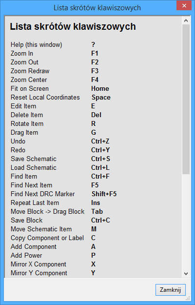 | Okno z otwart± list± skrótów klawiszowych |
Klawisze skrótów mog± byæ programowane przez u¿ytkowników.
By to zrobiæ:
- Nale¿y stworzyæ nowy lub otworzyæ plik klawiszy skrótów:

- Dokonaæ modyfikacji pliku (zawiera komentarze).
- By u¿yæ nowego uk³adu klawiszy skrótów nale¿y ponownie wczytaæ plik konfiguracji skrótów klawiszowych (lub zrestartowaæ Eeschema).
Wybór rozmiaru siatki
Kursor porusza siê wed³ug siatki, która mo¿e byæ wy¶wietlana lub ukryta (siatka ta jest wy¶wietlana zawsze w edytorze elementów/bibliotek).
Mo¿na zmieniæ rozmiar siatki za pomoc± menu kontekstowego lub w menu Ustawienia / Opcje edytora schematów.
Domy¶lnym rozmiarem siatki jest 50 milsów (0,050 cala) lub inaczej 1,27 milimetrów. Mo¿na pracowaæ z siatk± przybli¿on± (20 milsów) lub siatk± dok³adn± (10 milsów), nie jest to jednak zalecane.
Siatka przybli¿ona lub dok³adna jest przeznaczona specjalnie dla elementów z du¿± ilo¶ci± wyprowadzeñ (liczon± w setkach).
Wybór powiêkszenia - Zoom
By zmieniæ powiêkszenie (Zoom):
- Nale¿y klikn±æ prawym klawiszem by otworzyæ menu kontekstowe i wybraæ potrzebne powiêkszenie.
Lub u¿yæ klawiszy funkcyjnych:
| F1 | Przybli¿anie |
| F2 | Oddalanie |
| F3 | Od¶wie¿enie widoku |
| F4 | Centrowanie wokó³ kursora. |
Lub po prostu klikn±æ ¶rodkowym klawiszem (bez poruszania mysz±)
Powiêkszanie wg zaznaczenia: Nale¿y przeci±gn±æ mysz± z wci¶niêtym ¶rodkowym klawiszem.
| Kó³ko myszy | Przybli¿anie/Oddalanie |
| SHIFT+Kó³ko myszy | Przesuwanie widoku góra/dó³ |
| CTRL+Kó³ko myszy | Przesuwanie widoku lewo/prawo |
Wy¶wietlanie pozycji kursora
Jednostki w jakich wy¶wietlana jest pozycja to cale (cal lub ") albo milimetry, w zale¿no¶ci od wybranych aktualnie jednostek. Jednak¿e, Eeschema zawsze wewn±trz przelicza wszystko na tysiêczne cali (1/1000").
Informacje wy¶wietlane na dole okna od prawej strony s± nastêpuj±ce:
- Poziom powiêkszenia (Z).
- Pozycja absolutna kursora (X, Y).
- Wzglêdna pozycja kursora (dx, dy).
- Dystans od punktu pocz±tkowego do bie¿±cej pozycji kursora (d)
- Punkt pocz±tkowy dla pozycji wzglêdnej (dx, dy) mo¿e byæ ustalony klawiszem spacji. Wy¶wietlana pozycja odnosi siê do tego punktu.
Pasek menu
Menu pokazane poni¿ej pozwala na otwieranie i zapisywanie schematów, ustawianie konfiguracji programu, a tak¿e zawiera dostêp do pomocy.
Górny pasek narzêdzi
Ten pasek umo¿liwia dostêp do g³ównych funkcji programu Eeschema.

| Tworzenie nowego schematu. | |
| Otwarcie schematu. | |
| Zapis kompletnego schematu (razem z pe³n± hierarchi±). | |
| Wybór rozmiaru arkusza i edycja zawarto¶ci ramki. | |
| Uruchomienie edytora symboli LibEdit (Sprawdzanie, modyfikacje oraz edycja symboli bibliotecznych). | |
| Przegl±danie bibliotek (ViewLib). | |
| Wywo³anie okna "nawigatora", pozwalaj±cego na wy¶wietlanie struktury hierarchicznej schematów (je¶li posiadaj± schematy podrzêdne) w postaci drzewa oraz b³yskawiczne prze³±czanie siê pomiêdzy hierarchicznymi arkuszami. | |
| Usuwanie wybranych elementów podczas przesuwania bloków. | |
| Kopiowanie wybranych elementów do schowka podczas przesuwania bloków. | |
| Kopiowanie ostatnio wybranego elementu lub bloku w bie¿±cym arkuszu. | |
| Cofnij: Cofa ostatni± zmianê (do 10 wstecz). | |
| Ponów: Przywraca ostatni± zmian± (do 10 wstecz). | |
| Otwarcie menu wydruku. | |
| Wywo³anie CvPcb. | |
| Wywo³anie Pcbnew. | |
| Przybli¿anie i oddalanie wokó³ punktu centralnego ekranu. | |
| Od¶wie¿anie widoku i optymalizacja powiêkszenia. | |
| Wywo³anie menu wyszukiwania komponentów lub opisów na schemacie. | |
| Tworzenie listy po³±czeñ (ró¿ne formaty Pcbnew, Spice ...). | |
| Numeracja komponentów. | |
| ERC (Electrical Rules Check): automatyczna kontrola po³±czeñ elektrycznych. | |
| Tworzenie plików materia³owych BOM (Bill Of Materials) oraz/albo listê etykiet hierarchicznych. | |
| Reimport pliku czê¶ci z CvPcb (wype³nianie pól opisuj±cych modu³y w komponentach na schemacie). |
Prawy pasek narzêdzi
Ten pasek umo¿liwia dostêp do narzêdzi do:
 |
|
Szczegó³y dotycz±ce ich u¿ycia zosta³y opisane w rozdziale Tworzenie i edycja schematu.
Krótki opis ich u¿ycia znajduje siê poni¿ej.
| Zatrzymane polecenie lub narzêdzie w trakcie. | |
| Nawigacja w strukturze hierarchicznej: to narzêdzie pozwala na otwarcie arkuszy podrzêdnych dla wy¶wietlanego schematu (kliknij w symbol arkusza podrzêdnego), albo cofniêcie siê wy¿ej w hierarchii (kliknij na pustym polu arkusza podrzêdnego) | |
| Wywo³uje menu stawiania komponentów. | |
| Wywo³uje menu stawiania portów zasilania (specjalne elementy). | |
| Stawianie po³±czeñ. | |
| Stawianie magistral. | |
| Stawianie wej¶æ po³±czeñ do magistrali. Elementy te spe³niaj± rolê dekoracyjn± i nie pozwalaj± na po³±czenia; dlatego nie powinny byæ u¿ywane do ³±czenia po³±czeñ. | |
| Stawianie wej¶æ magistral do magistral. Tylko one mog± po³±czyæ dwie magistrale ze sob±. | |
| Symbol "Nie po³±czone". Powinny byæ umieszczone na wyprowadzeniach pinów, które nie s± do niczego pod³±czone. Jest to przydatne w funkcji ERC, aby zaznaczyæ, ¿e wyprowadzenia s± celowo niepo³±czone i nie zosta³y pominiête. | |
| Stawianie wêz³ów. By po³±czyæ dwa przecinaj±ce siê po³±czenia, lub do³±czyæ po³±czenie do wyprowadzenia, gdy jest to niejednoznaczne (np. gdy wyprowadzenie posiada ju¿ inne po³±czenie w innym kierunku). | |
| Stawianie etykiet lokalnych. Dwa po³±czenia mog± byæ z³±czone ze sob± je¶li oba posiadaj± te same etykiety w tym samym schemacie. Do ³±czenia pomiêdzy dwoma odrêbnymi arkuszami, powiniene¶ u¿yæ etykiet globalnych. | |
| Stawiania etykiet globalnych. Stwarza to mo¿liwo¶æ ³±czenia po³±czeñ pomiêdzy arkuszem podrzêdnym a nadrzêdnym który zawiera symbole arkuszy podrzêdnych. | |
| Stawianie etykiet hierarchicznych. Pozwala to na stworzenie po³±czenia pomiêdzy arkuszem schematu i schematem nadrzêdnym który zawiera symbol tego schematu. | |
| Stawianie symboli hierarchicznych schematów podrzêdnych (prostok±t o zmiennym rozmiarze). Musisz okre¶liæ nazwê pliku by zapisaæ dane tego schematu podrzêdnego. | |
| Globalna etykieta importowa etykiety z arkusza podrzêdnego, by utworzyæ po³±czenie z symbolem na arkuszu podrzêdnym. Dla tego symbolu hierarchicznego, stworzone punkty po³±czeñ s± odpowiednikiem tradycyjnych wyprowadzeñ elementów, i musz± zostaæ pod³±czone. | |
| Stawianie globalnych etykiet w arkuszach podrzêdnych do stworzenia punktów po³±czeñ. Funkcja ta jest podobna do poprzedniej, która nie wymaga zdefiniowanych symboli globalnych. | |
| Linie graficzne dla ramek... Tylko jako dekoracja. Nie tworz± one po³±czeñ. | |
| Stawianie opisów. Tylko do dekoracji. | |
| Wstawianie map bitowych. Tylko do dekoracji. | |
| Usuwanie wybranych elementów. Je¶li kilka elementów nak³ada siê na siebie w wybranym miejscu, priorytet maj± wtedy najmniejsze elementy (priorytety ustalone s± wed³ug: wêze³, symbol Nie po³±czone, po³±czenie, magistrala, tekst, element). Dotyczy to tak¿e arkuszy hierarchicznych. Uwaga: Funkcja Cofnij w g³ównym pasku narzêdzi pozawala na wycofanie ostatnich usuniêæ. |
Lewy pasek narzêdzi
Ten pasek narzêdzi zarz±dza opcjami wy¶wietlania:
 |
|
Oraz ustala dozwolone kierunki po³±czeñ i magistral.
Menu kontekstowe i szybka edycja komponentów
Klikniêcie prawym klawiszem otwiera menu kontekstowe, którego zawarto¶æ zale¿y od wybranego tym klikniêciem elementu (o zosta³ wybrany).
Jest mo¿liwo¶æ szybkiego dostêpu do:
- Stopnia powiêkszenia,
- Ustawieñ siatki,
- W zale¿no¶ci od miejsca klikniêcia, do edycji najczê¶ciej zmienianych parametrów.
| 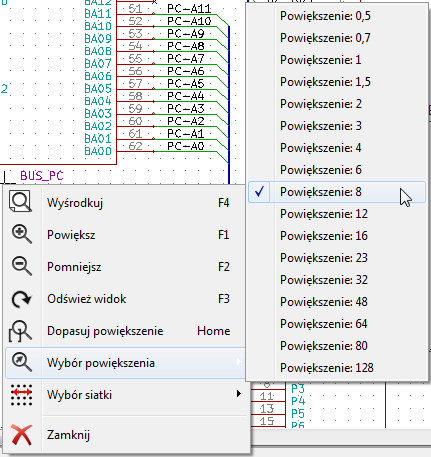 | Menu kontekstowe bez wybranego elementu. |
| Edycja etykiety. | |
| Edycja komponentów. |
3. Menu g³ówne
Menu Plik
| Nowy projekt schematu | Czy¶ci bie¿±cy schemat i przygotowuje nowy. |
| Otwórz projekt schematu | Otwiera schemat lub hierarchiê schematów. |
| Ostatnio otwierane | Otwiera listê ostatnio otwartych plików, pozwalaj±c wybraæ plik w celi jego otwarcia. |
| Do³±cz arkusz schematu | Wstawia zawarto¶æ innego schematu do bie¿±cego schematu. |
| Zapisz projekt schematu | Zapisuje bie¿±cy schemat i ca³± hierarchiê. |
| Zapisz tylko bie¿±cy arkusz | Zapisuje bie¿±cy schemat, ale bez pozosta³ych w hierarchii. |
| Zapisz bie¿±cy arkusz jako... | Zapisuje bie¿±cy arkusz pod inn± nazw±. |
| Ustawienia strony | Otwiera okno z ustawieniami strony oraz z zawarto¶ci± pól tabliczki tytu³owej. |
| Drukuj | Dostêp do okna dialogowego z opcjami wydruku (Zobacz tak¿e rozdzia³ Drukowanie i rysowanie). |
| Rysuj | Rysuje schemat w formacie Postscript, HPGL lub SVF (Zobacz rozdzia³ Drukowanie i rysowanie). |
| Zakoñcz | Koñczy pracê z programem. |
Menu Ustawienia
| Wybierz aktywne biblioteki | Wybiera u¿ywane biblioteki oraz okre¶la ¶cie¿ki do bibliotek. |
| Wybierz schemat kolorów | Otwiera okno dialogowe z wyborem kolorów. |
| Opcje edytora schematów | Otwiera okno dialogowe z opcjami programu (Jednostki miary, siatka...). |
| Jêzyk | Udostêpnia bie¿±c± listê t³umaczeñ interfejsu programu, pozwalaj±c wybraæ jêzyk komunikacji z u¿ytkownikiem. |
| Skróty klawiszowe | Udostêpnia menu z klawiszami skrótów. |
| Zapisz ustawienia Wczytaj ustawienia |
Odczytuje i zapisuje pliki konfiguracji. |
Menu podrzêdne: Skróty klawiszowe
| Lista bie¿±cych skrótów klawiszowych | Pokazuje bie¿±c± listê skrótów klawiszowych. To samo powoduje naci¶niêcie klawisza ? |
| Edytuj plik konfiguracji skrótów klawiszowych | Otwiera okno konfiguracji skrótów klawiszowych, który mo¿na zmodyfikowaæ (zwyk³ym edytorem tekstu), by dostosowaæ listê skrótów do w³asnych upodobañ. |
| Eksportuj plik konfiguracji klawiszy skrótów | Eksportuje do pliku bie¿±ce ustawienia skrótów klawiszowych. |
| Importuj konfiguracjê skrótów klawiszowych | Importuje z pliku ustawienia skrótów klawiszowych. |
Menu Ustawienia: Wybierz aktywne biblioteki
Konfiguracja programu Eeschema to w zasadzie tylko:
- ¦cie¿ki do bibliotek.
- Lista u¿ywanych bibliotek.
Parametry konfiguracyjne s± zapisywane do pliku .pro.
S± mo¿liwe ró¿ne konfiguracje dla ró¿nych katalogów.
Eeschema wyszukuje i u¿ywa konfiguracji wed³ug okre¶lonej regu³y:
- Najpierw plik konfiguracji (
<nazwa_projektu>.pro) w bie¿±cym katalogu. - Potem plik konfiguracji
kicad.prow katalogukicad. Ten plik mo¿na traktowaæ jako domy¶ln± konfiguracjê. - Jak ¿aden z plików nie zosta³ znaleziony to przywracane s± warto¶ci domy¶lne. Bêdzie wówczas wymagane przynajmniej wype³nienie listy bibliotek do za³adowania oraz zapisanie nowej konfiguracji.
Menu Ustawienia: Wybierz schemat kolorów
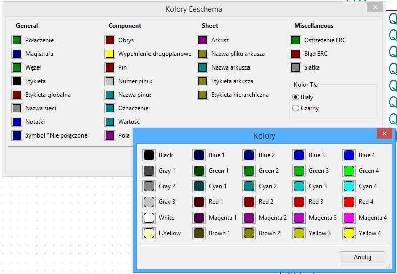
Za pomoc± tego okna dialogowego, mo¿na wybraæ kolorystykê wy¶wietlania poszczególnych elementów oraz koloru t³a z dwóch dostêpnych: bia³y (domy¶lny) i czarny.
Menu Ustawienia: Opcje edytora schematów
| Jednostki miary | Wybiera jednostki miary (cale lub milimetry) jakie bêd± u¿ywane w ca³ym programie. |
| Rozmiar siatki | Wybiera rozmiar siatki. Podczas normalnej pracy rozmiarem siatki dla schematu musi byæ 0,050 cala lub 1,27 mm. Mniejsza siatka jest u¿ywana podczas tworzenia elementów. |
| Domy¶lna szeroko¶æ magistrali | Rozmiar ten jest u¿ywany do rysowania linii okre¶laj±cych magistrale. |
| Domy¶lna szeroko¶æ linii | Rozmiar ten jest u¿ywany do rysowania elementów, które nie posiadaj± okre¶lonej szeroko¶ci linii. |
| Domy¶lny rozmiar tekstu | Warto¶æ ta jest u¿ywana przy tworzeniu nowych opisów lub etykiet. |
| Powtarzaj rysowanie elementów z przesuniêciem poziomym | Ustala przesuniêcie w osi X podczas powielania elementów (zwykle 0 - nie przesuwa). (Po wstawieniu elementu, którym mo¿e byæ symbol na schemacie, etykieta lub po³±czenie; mo¿na powieliæ element naciskaj±c klawisz Insert) |
| Powtarzaj rysowanie elementów z przesuniêciem pionowym | Ustala przesuniêcie w osi Y podczas powielania elementów. (zwykle przesuwa o 0,100 cala lub 2,54 mm) |
| Zmieniaj numer etykiety co | Zwiêkszanie lub zmniejszanie numeracji podczas powielania elementów (zwykle 1 lub -1). |
| Auto zapis tworzony co | Pozwala wybraæ czas pomiêdzy kolejnymi automatycznymi zapisami kopii zapasowej schematu. |
| Notacja ID elementów | Mo¿na wybraæ jak prezentowane bêd± oznaczenia elementów wieloczê¶ciowych. |
| Poka¿ siatkê | Je¶li zaznaczone: pokazuje siatkê na arkuszu. |
| Poka¿ ukryte piny | Pokazuje niewidoczne (lub ukryte) piny. Je¶li zaznaczone, pozwala wy¶wietlaæ piny zasilania. |
| Nie centruj i nie przesuwaj kursora przy powiêkszeniu | Je¶li opcja zaznaczona to przy powiêkszaniu pozycja kursora bêdzie siê mog³a zmieniaæ. |
| U¿yj ¶rodkowego klawisza myszy do panoramowania | W³±cza mo¿liwo¶æ przesuwania zawarto¶ci arkusza roboczego przy ruchu myszy z wci¶niêtym ¶rodkowym klawiszem myszy. |
| Panoramuj tylko do obszaru daj±cego siê przesuwaæ | W³±cza ograniczenia w przesuwaniu widoku. Pozwala to unikn±æ sytuacji z b³êdnym wy¶wietlaniem pasków przewijania. Przy w³±czonej tej opcji nie jest mo¿liwe przesuwanie gdy powiêkszenie jest na tyle ma³e, i¿ nie ma pasków przewijania. |
| Panoramuj podczas przesuwania obiektów | Je¶li zaznaczone, ekran bêdzie siê automatycznie przesuwa³ gdy kursor bêdzie próbowa³ wyj¶æ poza okno podczas rysowania po³±czeñ lub przesuwania elementów. |
| Pozwól na prowadzenie po³±czeñ lub magistral wy³±cznie pod k±tem prostym | Je¶li zaznaczone, magistrale i po³±czenia mo¿na prowadziæ tylko w pionie lub poziomie. W przeciwnym wypadku magistrale i po³±czenia mo¿na prowadziæ w dowolnym kierunku. |
| Poka¿ granice strony | Je¶li zaznaczone, pokazuje granice strony na ekranie. |
Menu Ustawienia: Jêzyk
Mo¿na u¿yæ jêzyka domy¶lnego. Program wtedy bêdzie siê komunikowa³ w jêzyku zgodnym z jêzykiem systemu - o ile taki jêzyk bêdzie dostêpny w programie. Mo¿na te¿ wybraæ inny jêzyk, jednak aby Eeschema w pe³ni komunikowa³ siê w wybranym jêzyku bêdzie musia³ zostaæ zrestartowany.
Menu Pomoc
Udostêpnia pomoc on-line (ten dokument) a tak¿e dostarcza informacji o bie¿±cej wersji programu Eeschema (O programie).
Mo¿na równie¿ z poziomu tego menu otworzyæ krótki samouczek, który w kilkunastu krokach wyja¶nia proces tworzenia kompletnego projektu.
4. G³ówny pasek narzêdziowy
Ustawienia strony
 Umo¿liwia dostêp do ustawieñ strony:
Umo¿liwia dostêp do ustawieñ strony:
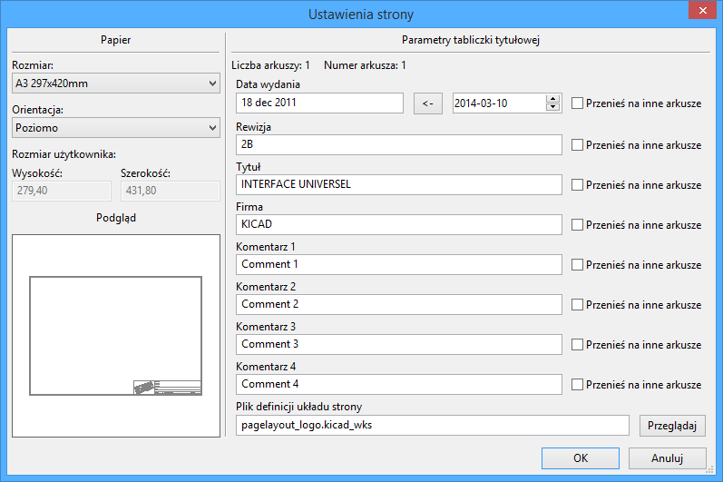
Pozwala na edycjê zawarto¶ci tabliczki oraz zmianê rozmiaru strony. Automatycznie uaktualniana jest ca³kowita liczba arkuszy jak i numer arkusza.
Znajd¼ oraz Znajd¼ i zamieñ
 Pozwala na wywo³anie dostêp do narzêdzi pozwalaj±cych na wyszukanie lub zamianê okre¶lonego typu elementu.
Pozwala na wywo³anie dostêp do narzêdzi pozwalaj±cych na wyszukanie lub zamianê okre¶lonego typu elementu.
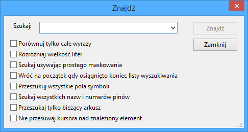
Za jego pomoc± mo¿na wyszukaæ na schemacie jeden z umieszczonych tam komponentów, jego warto¶æ lub dowolny tekst jaki znajduje siê na bie¿±cym schemacie czy w ca³ej jego hierarchii.
Po odnalezieniu jednego z w/w elementów kursor przeskakuje do miejsca jego umieszczenia o ile ostatnia opcja nie zosta³a w³±czona.
W przypadku opcji Znajd¼ i zamieñ pojawia siê dodatkowe pole pozwalaj±ce okre¶liæ czym zast±piæ znalezione elementy oraz opcje dotycz±ce procedury zamiany.
Lista sieci
 Pozwala na u¿ycie narzêdzia do tworzenia list sieci w kilku formatach.
Pozwala na u¿ycie narzêdzia do tworzenia list sieci w kilku formatach.
Plik z list± sieci mo¿e byæ zastosowany do ca³ej hierarchii (zwykle taka opcja jest wybrana), lub tylko do bie¿±cego arkusza (lista sieci jest tylko czê¶ciowa, ale ta opcja mo¿e byæ przydatna przy niektórych programach).
W hierarchii wieloarkuszowej, lokalna etykieta jest znana tylko w obrêbie arkusza, do której nale¿y. Dlatego etykieta TOTO z arkusza 3 ró¿ni siê od etykiety TOTO z arkusza 5 (je¶li ich po³±czenie nie by³o celowo wprowadzone).
Wynika to z faktu, ¿e liczba arkuszy (aktualizowana za pomoc± polecenia Numeracja elementów) jest wi±zana z lokaln± etykiet±. W poprzednim przyk³adzie, pierwsza etykieta TOTO rzeczywi¶cie jest nazwana TOTO_3, a postaæ drugiej etykiety to TOTO_5.
Taka mo¿liwo¶æ wi±zania mo¿e byæ wstrzymana na ¿±danie u¿ytkownika, ale trzeba mieæ ¶wiadomo¶æ mo¿liwych w tym wypadku niepo¿±danych po³±czeñ.
Uwaga 1:
D³ugo¶æ etykiet nie jest ograniczana przez Eeschema, lecz oprogramowanie eksportuj±ce netlisty mo¿e t± d³ugo¶æ ograniczaæ.
Uwaga 2:
Unikaj spacji w nazwach etykiet, bo zostan± one zinterpretowane jako dwa ró¿ne s³owa. Nie jest to ograniczenie narzucane przez Eeschema, lecz wiele z formatów list sieci nie dopuszcza do ich stosowania.
Opcje:
Format domy¶lny - Zaznacz t± opcjê je¶li wybraæ ten format listy sieci jako domy¶lny dla nowo tworzonych list sieci. Dodatkowe opcje pozwalaj± wybraæ, czy chcesz skorzystaæ z domy¶lnego formatu programu Pcbnew czy z formatu rozszerzonego (S-expression) zawieraj±cego wiêcej informacji o elementach, ale niekompatybilnego z wcze¶niejszymi wersjami lub wtyczkami.
Mo¿na te¿ wygenerowaæ netlistê w innych formatach:
- Orcad PCB2
- CadStar
- Spice, dla symulatora Spice.
Za pomoc± zewnêtrznych wtyczek mo¿na uruchamiaæ konwersje do innych formatów.
Numeracja komponentów
 Pozwala na u¿ycie narzêdzia automatycznego numerowania komponentów.
Pozwala na u¿ycie narzêdzia automatycznego numerowania komponentów.
Dla komponentów, które sk³adaj± siê z kilku czê¶ci (jak na przyk³ad 7400 TTL który posiada 4 takie same 4 bramki), przyrostek oznaczaj±cy poszczególne czê¶ci tak¿e bêdzie zachowany (w przypadku 7400 TTL przypisana nazwa U3 bêdzie podzielona na U3A, U3B, U3C oraz U3D).
Mo¿na bezwarunkowo ponumerowaæ wszystkie elementy, b±d¼ tylko te, które s± nowe na schemacie, tzn. takie, które dotychczas nie zosta³y jeszcze ponumerowane.

| Zakres | |
| U¿yj ca³ego schematu | Wszystkie arkusze zostan± poddane numeracji (opcja najczê¶ciej u¿ywana). |
| U¿yj tylko bie¿±cej strony | Tylko bie¿±ca strona zostanie poddana numeracji (opcja ta jest u¿ywana tylko w szczególnych przypadkach, na przyk³ad do oceny ilo¶ci rezystorów w bie¿±cym arkuszu). |
| Pozostaw bie¿±c± numeracjê | Numeracja warunkowa, tylko nowe elementy na schemacie zostan± ponumerowana ponownie (opcja najczê¶ciej u¿ywana). |
| Resetuj bie¿±c± numeracjê | Numeracja bezwarunkowa, wszystkie elementy sk³adowe schematu zostan± ponumerowane (opcja ta przydatna jest po wykonaniu operacji kopiowania bloku, po której to mog± pojawiæ siê zdublowane elementy). |
| Porz±dek numeracji | Okre¶la w jakim kierunku ma poruszaæ siê narzêdzie numeracji przy sortowaniu listy elementów. S± tylko dwie opcje: pierwsza pozwala by numeracja by³a zwiêkszana najpierw kieruj±c siê w dó³, druga pozwala by numeracja by³a zwiêkszana najpierw kieruj±c siê w prawo. |
| Wybór numeracji | Pozwala okre¶liæ dodatkowe opcje numeracji, by j± dodatkowo uporz±dkowaæ i podzieliæ na poszczególne arkusze. Opcja podzia³u na arkusze zwykle jest u¿ywana przy du¿ych projektach. |
| Okno | |
| Automatycznie zamknij | Opcja pozwalaj±ca na automatyczne zamkniêcie okna po wykonaniu procesu automatycznej numeracji komponentów. |
| Nie potwierdzaj | Je¶li opcja ta zostanie zaznaczona, to proces automatycznej numeracji nie bêdzie prosi³ o potwierdzenie jej wykonania. |
Kontrola regu³ projektowych - ERC
 Pozwala na dostêp do narzêdzia sprawdzania regu³ projektowych schematu (zwanego ERC).
Pozwala na dostêp do narzêdzia sprawdzania regu³ projektowych schematu (zwanego ERC).
Funkcja ta generalnie s³u¿y do wykrywania z³ych lub nieistniej±cych po³±czeñ lub innych niespójno¶ci schematu.
Eeschema po przeprowadzeniu testu ERC umieszcza na schemacie znaczniki w okolicy wyprowadzeñ lub etykiet by wskazaæ miejsce wykrytego problemu.
Opis problemu mo¿e zostaæ wy¶wietlony klikaj±c lewym klawiszem myszy na znaczniku ERC.
Mo¿na tak¿e wygenerowaæ plik z list± b³êdów do dalszej analizy zaznaczaj±c odpowiedni± opcjê.
Zak³adka ERC
Podsumowanie ilo¶ci b³êdów lub ostrze¿eñ jest wy¶wietlane w polu po lewej stronie na górze:
- Ogó³em b³êdów - to ca³kowita liczba znalezionych nieprawid³owo¶ci.
- Ogó³em ostrze¿eñ - to liczba wykrytych ostrze¿eñ
- Liczba b³êdów - to liczba wykrytych b³êdów.
Opcje:
- Utwórz plik raportu. Je¶li chcemy dodatkowo wygenerowaæ plik z list± b³êdów nale¿y zaznaczyæ t± opcjê.
Polecenia:
- Test ERC : rozpoczyna proces sprawdzenia.
- Usuñ znaczniki : usuwa znaczniki b³êdów po poprzednim testowaniu.
- Zamknij : zamyka okno.
Uwaga. Gdy kliknie siê w komunikat o b³êdzie na li¶cie, kursor przeskakuje do miejsca gdzie znajduje siê znacznik tego b³êdu.
Zak³adka Opcje
Ta zak³adka pozwala na okre¶lenie, jaki b³±d powinien zostaæ wygenerowany po zestawieniu ze sob± dwóch typów wyprowadzeñ. Mo¿na wybraæ jedn± z 3 opcji zg³oszenia dla danego przypadku:
- Brak b³êdu - zielone pole
- Ostrze¿enie - ¿ó³te pole W
- B³±d - czerwone pole E
Ka¿de pole na matrycy b³êdów i ostrze¿eñ mo¿e byæ zmienione klikaj±c w nie. Zmiany s± wykonywane cykliczne. W ka¿dej chwili mo¿na przywróciæ ustawienia domy¶lne za pomoc± przycisku Resetuj.
Lista materia³owa - BOM
 Polecenie to pozwala na wygenerowanie pliku z list± elementów i/lub ich po³±czeniami w hierarchii (za pomoc± etykiet globalnych).
Polecenie to pozwala na wygenerowanie pliku z list± elementów i/lub ich po³±czeniami w hierarchii (za pomoc± etykiet globalnych).
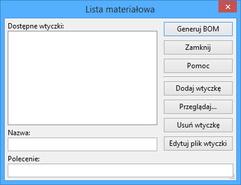
System generowania listy materia³owej opiera siê na wtyczkach. Ró¿ne wtyczki mog± generowaæ ró¿ne pliki wyj¶ciowe, co pozwala na dostosowanie list materia³owych do swoich potrzeb.
Przydatny zestaw w³a¶ciwo¶ci elementów u¿ywany zwykle do tworzenia list materia³owych to:
- Warto¶æ - unikalna nazwa dla ka¿dego z u¿ytych elementów,
- Obudowa - zarówno wpisany rêcznie lub za pomoc± numeracji wstecznej (zobacz nastêpny punkt),
- Pole1 - nazwa producenta
- Pole2 - nazwa elementu wed³ug producenta
- Pole3 - nazwa elementu wed³ug jego dystrybutora
Przyk³adowo:

Narzêdzie importu dla numeracji wstecznej
 Ta funkcja pozwala by po narysowaniu schematu, utworzeniu listy sieci i przypisaniu elementom obudów za pomoc± CvPcb, dokonaæ pó¼niejszego importu danych o obudowach z powrotem do schematu.
Ta funkcja pozwala by po narysowaniu schematu, utworzeniu listy sieci i przypisaniu elementom obudów za pomoc± CvPcb, dokonaæ pó¼niejszego importu danych o obudowach z powrotem do schematu.
Funkcja ta odczytuje pliki .stf tworzone przez CvPcb oraz inicjalizuje pole Obudowa (Pole3) dla elementów znajduj±cych siê na li¶cie.
Plik ten nie ma zastosowania w Pcbnew, lecz jest u¿yteczny przy wype³nianiu pola z nazw± obudowy podczas tworzenia plików materia³owych (BOM) i listy sieci.
Funkcja ta przechowuje informacje o obudowach/odno¶nikach w jednym pliku ¼ród³owym/schemacie, który jest ¼ród³em danych dla listy sieci i zbêdnym plik .cmp.
Przypisywanie obudów pojawi siê w przysz³ym eksporcie list sieci z Eeschema.
Jest to przydatne podczas korzystania z niektórych formatów netlist.
Uwaga dla Pcbnew:
- Gdy Pcbnew nie potrafi znale¼æ pliku
.cmppowi±zanego z plikiem listy sieci.net, u¿ywa wtedy domy¶lnie danych jakie znajduj± siê w pliku listy sieci. - U¿ycie pliku
.cmpjest lepszym rozwi±zaniem, poniewa¿ je¶li projektant zmieni przypisania obudów z Pcbnew, odpowiedni plik.cmptak¿e zostaje zaktualizowany.
5. Tworzenie i edycja schematu
Definicje
Schemat mo¿e zostaæ przedstawiony na jednym arkuszu, ale g³ównie bêdzie to jednak wymagaæ kilku arkuszy.
Schemat prezentowany na kilku arkuszach jest zwany schematem hierarchicznym, a wszystkie te arkusze (ka¿dy reprezentowany przez w³asny plik) stanowi dla Eeschema projekt.
Projekt sk³ada siê z g³ównego schematu, zwanego schematem g³ównym, i arkuszy podrzêdnych stanowi±cych pewn± hierarchiê.
W celu znalezienia wszystkich plików projektu, trzeba bêdzie przestrzegaæ zasad przy jego rysowaniu, które zostan± opisane poni¿ej.
Dalej, kiedy bêdziemy mówiæ o projekcie jako takim, bêdziemy odnosiæ siê do obu ich wersji: zarówno do schematu z pojedynczym arkuszem, jak i do hierarchicznej struktury projektu.
Za¶ w dodatkowym rozdziale rozwiniemy stosowanie hierarchii i jej w³a¶ciwo¶ci.
Uwagi ogólne
Schemat zaprojektowany za pomoc± Eeschema jest czym¶ wiêcej ni¿ tylko prost± reprezentacj± graficzn± urz±dzenia elektronicznego.
Zwykle jest punktem wyj¶cia dla ³añcucha rozwoju, który umo¿liwia:
- Kontrolê poprawno¶ci (ERC), która pozwala na wykrycie b³êdów lub braków w schemacie.
- Automatyczne generowanie list materia³owych.
- Generowanie listy sieci dla oprogramowania do symulacji, takiego jak PSpice.
Generacja listy sieci do projektowania obwodów drukowanych (Pcbnew). Sprawdzenie zgodno¶ci miêdzy schematem a obwodem drukowanym jest automatyczne i natychmiastowe.
W celu skorzystania z tych mo¿liwo¶ci, trzeba bêdzie jednak przestrzegaæ pewnych ograniczeñ i konwencji, aby unikn±æ przykrych niespodzianek i b³êdów.
Schemat sk³ada siê g³ównie z elementów, po³±czeñ miêdzy nimi, etykiet, wêz³ów, magistral i portów zasilania.
Dla zwiêkszenia czytelno¶ci schematu, mo¿na umie¶ciæ elementy graficzne takie jak: wej¶cia do magistral, komentarze i linie przerywane do budowy ramek.
Proces tworzenia
Oprogramowanie do tworzenia schematów wykorzystuje biblioteki symboli.
Oprócz pliku z projektem schematu, szczególnie wa¿ny jest równie¿ plik listy sieci, poniewa¿ jest u¿ywany przez inne oprogramowanie projektowe i na jego podstawie powstaje obwód drukowany. Lista sieci mo¿e równie¿ byæ u¿yta jako ¼ród³o danych dla oprogramowania do symulacji obwodów.
Plik z list± sieci zawiera wykaz elementów i po³±czeñ wynikaj±cych ze schematu. Niestety (dla u¿ytkownika) istnieje wiele formatów list sieci, z których niektóre s± bardziej znane, inne nie. Przyk³adem mo¿e byæ tu format Spice.
Wstawianie i edycja komponentów
Wyszukiwanie i wstawianie komponentów
Aby umie¶ciæ komponent na schemacie nale¿y u¿yæ narzêdzia wywo³ywanego za pomoc± ikony  .
.
Pojawi siê okienko dialogowe, które pozwoli na wybranie komponentu z listy albo poprzez wyszukanie wpisuj±c w pole Szukaj fragment nazwy, s³owa kluczowego lub czê¶ci opisu.

Po pod¶wietleniu wybranego, b±d¼ wyszukanego elementu informacje o nim oraz zawarto¶æ pól dokumentacyjnych pojawi siê w dolnej czê¶ci okna.
Wyszukiwanie z paska wyszukiwania dzia³a na bie¿±co. Przyk³adowo wpisuj±c "AT24" lista po chwili wy¶wietli wszystkie elementy, w których ta czê¶æ nazwy gdziekolwiek wystêpuje. System ten pozwala na przyk³ad na wyszukanie wszystkich elementów posiadaj±cych okre¶lon± w³a¶ciwo¶æ. Wpisuj±c "1A" mo¿na uzyskaæ na przyk³ad listê wszystkich tranzystorów lub diod o dopuszczalnym pr±dzie 1A znajduj±cych siê w bibliotekach.
Nale¿y pamiêtaæ, ¿e w przypadku gdy wymagany element nie istnieje, mo¿na wybraæ podobny element i go zmodyfikowaæ. Na przyk³ad: gdy szukanym elementem jest 54LS00, mo¿na zamiast niego wybraæ to¿samy element 74LS00 (wykonany jednak w innej technologii) i zmieniæ jego nazwê z 74LS00 na 54LS00.
By umie¶ciæ na schemacie wybrany komponent, nale¿y klikn±æ w miejscu gdzie element ma byæ wstawiony. Poni¿szy obrazek pokazuje symbol podczas operacji wstawiania go do schematu:
Przed umieszczeniem elementu na wybranej pozycji (za pomoc± lewego przycisku myszy), mo¿na go obróciæ o 90 stopni, odbiæ w osi X lub Y, lub wybraæ jego reprezentacjê poprzez wywo³anie podrêcznego menu. Mo¿na to równie¿ ³atwo wykonaæ ju¿ po umieszczeniu elementu.
Porty zasilania
Port zasilania to tak¿e element (symbole te zosta³y zgrupowane w bibliotece power.lib). Dlatego te¿ mo¿na go umieszczaæ tak samo jak inne elementy.
Jednak¿e, poniewa¿ s± to elementy u¿ywane do¶æ czêsto, dostêpne jest specjalne narzêdzie wywo³ywane za pomoc± ikony  .
.
Narzêdzie to jest podobne do poprzednio przedstawionego, z t± ró¿nic±, ¿e odwo³uje siê bezpo¶rednio do biblioteki power.lib, skracaj±c czas potrzebny na przeszukanie bibliotek.
Edycja / modyfikacja elementów (umieszczonych na schemacie)
Edycje / modyfikacje s± dwojakiego rodzaju.
- Modyfikacja samego elementu (po³o¿enie, orientacja, wybór czê¶ci dla elementu wieloczê¶ciowego).
- Modyfikacja jednego z pól elementu (oznaczenie, warto¶æ lub inne).
Gdy element zosta³ w³a¶nie umieszczony na schemacie, mo¿e zaistnieæ potrzeba zmiany jego warto¶ci (szczególnie dla rezystorów, kondensatorów...), ale nie ma sensu natychmiastowego przypisania temu elementowi jego oznaczenia, lub wyboru czê¶ci sk³adowej dla elementów wieloczê¶ciowych (np. bramka logiczna z uk³adu 7400). To mo¿e zostaæ wykonane z automatu za pomoc± funkcji automatycznej numeracji.
Modyfikacja elementów
W tym celu nale¿y umie¶ciæ kursor myszy na elemencie (ale nie w miejscu gdzie znajduj± siê jego pola). Mo¿na wówczas:
- Klikn±æ dwukrotnie na elemencie aby otworzyæ okno dialogowe W³a¶ciwo¶ci elementu z opcjami jego pe³nej edycji.
- Klikn±æ prawym przyciskiem myszy, aby otworzyæ menu podrêczne, i u¿yæ jednego z wy¶wietlonych poleceñ (Przesuñ, Zorientuj, Edytuj, Usuñ).
Modyfikacja pól tekstowych elementów
Mo¿na dokonaæ modyfikacji oznaczeñ, warto¶ci, pozycji, orientacji, rozmiaru i widoczno¶ci pól.
W celu prostych edycji mo¿na:
- Klikn±æ dwukrotnie na pole tekstowe aby go zmieniæ.
- Klikn±æ prawym przyciskiem myszy i u¿yæ jednego z wy¶wietlonych poleceñ (Przesuñ, Zorientuj, Edytuj, Usuñ) z wyskakuj±cego menu podrêcznego.
W celu edycji bardziej zaawansowanej, lub w celu stworzenia pola; nale¿y klikn±æ dwukrotnie na element, by otworzyæ okno dialogowe W³a¶ciwo¶ci elementu:
Mo¿na ustawiæ orientacjê i inne opcje elementu, oraz dokonywaæ edycji, dodawaæ lub usuwaæ pola.
Ka¿de pole mo¿e byæ widoczne lub nie oraz wy¶wietlane poziomo lub pionowo.
Wy¶wietlana (i zmienna) pozycja jest zawsze pokazywana dla normalnie wy¶wietlanego elementu (bez obrotu lub lustra) i odnosi siê do punktu aktywnego elementu.
Przycisk Resetuj do standardu biblioteki przywraca element do zerowej orientacji, oraz przywraca domy¶lne opcje, wielko¶æ i po³o¿enie ka¿dego z pól.
Zawarto¶æ pól nie jest jednak modyfikowana, gdy¿ mog³oby to doprowadziæ do przek³amañ na schemacie.
Po³±czenia, Magistrale, Etykiety i Symbole zasilania
Podstawy
Wszystkie te elementy rysunkowe mog± zostaæ umieszczone na schemacie za pomoc± narzêdzi z prawego pionowego paska narzêdziowego.
Te elementy to:
- Po³±czenia dla zwyk³ych po³±czeñ.
- Magistrale (których stosowanie jest dozwolone wy³±cznie do ³±czenia etykiet magistral, do poprawy estetyki rysunku)
- Linie przerywane, dla graficznych prezentacji.
- Wêz³y, by wymusiæ po³±czenia pomiêdzy przecinaj±cymi siê po³±czeniami lub magistralami.
- Wej¶cia do magistral zwyk³e lub do ³±czenia magistral, do poprawy estetyki rysunku.
- Etykiety dla zwyk³ych po³±czeñ.
- Etykiety globalne, do po³±czeñ pomiêdzy arkuszami.
- Teksty jako komentarze.
- Symbol "Nie po³±czone" dla narzêdzia ERC.
- Arkusze hierarchiczne, oraz ich wyprowadzenia.
Po³±czenia (£±cza i etykiety)
S± dwie mo¿liwo¶ci tworzenia po³±czeñ:
- Po³±czenia bezpo¶rednie pomiêdzy wyprowadzeniami.
- Po³±czenia z pomoc± etykiet.
Poni¿szy obrazek pokazuje obie te metody:

Uwaga 1:
Punktem "kontaktu" (lub podpiêcia) etykiet to dolny lewy naro¿nik pierwszej litery z lewej strony.
Aby etykieta by³a brana pod uwagê, punkt ten musi byæ w kontakcie z po³±czeniem lub nak³adaæ ;iê na styku po³±czenia z wyprowadzeniem.
Uwaga 2:
By nawi±zaæ po³±czenie, jeden z segmentów po³±czenia musi byæ do³±czony swoim koñcem do innego zakoñczenia segmentu lub do punktu aktywnego u wyprowadzenia elementu.
Je¶li po³±czenie siê nak³ada na wyprowadzenie (gdy po³±czenie przechodzi przez wyprowadzenie ale nie trafia w jego punkt aktywny), wtedy takie po³±czenie nie jest prawid³owym po³±czeniem.
Jednak¿e, etykieta zostanie zaczepiona do po³±czenia niezale¿nie w którym miejscu jej punkt kontaktu znajdzie siê na takim po³±czeniu.
Uwaga 3:
Je¶li po³±czenie musi byæ pod³±czone do innego po³±czenia, inaczej ni¿ za pomoc± ich zakoñczeñ, nale¿y umie¶ciæ wêze³ w miejscu ich przeciêcia.
Poprzedni rysunek (po³±czenia doprowadzone do szpilek 22, 21, 20, 19 z³±cza DB25FEMALE) ukazuje taki przypadek po³±czeñ za pomoc± wêz³a.
Uwaga 4:
Je¶li dwie ró¿ne etykiety s± umieszczone na tym samym po³±czeniu, zostaj± one po³±czone ze sob± i staj± siê równowa¿ne: wszystkie inne elementy zwi±zane z jedn± lub drug± etykiet± zostaj± po³±czone razem.
Magistrale.
Na poni¿szym rysunku znajduje siê nastêpuj±cy fragment schematu:

Jak widaæ, wiele wyprowadzeñ (zw³aszcza pochodz±cych z uk³adów scalonych) zosta³o po³±czonych magistralami.
Sk³adniki magistral
Z punktu widzenia schematu, magistrala jest zbiorem sygna³ów, pocz±wszy od wspólnego prefiksu, a skoñczywszy na liczbie.
Taka koncepcja nie jest dok³adnym odzwierciedleniem magistral znanych z techniki mikroprocesorowej. Ka¿dy sygna³ jest tu cz³onkiem magistrali. PCA0, PCA1, PCA2 s± zatem cz³onkami magistrali PCA.
Ca³a magistrala jest zwana PCA[N...m], gdzie N i m to pierwszy i ostatni numer po³±czenia tej magistrali.
Zatem, je¶li PCA posiada 20-tu cz³onków od 0 do 19, kompletna magistrala to PCA [0...19].
Ale zbiór sygna³ów, takich jak PCA0, PCA1, PCA2, WRITE, READ nie mo¿e byæ zawarty w magistrali.
Po³±czenia pomiêdzy sk³adnikami magistral
Wyprowadzenia miêdzy tymi samymi cz³onkami magistrali musz± byæ po³±czone poprzez etykiety.
Rzeczywi¶cie, bezpo¶rednie po³±czenie wyprowadzeñ do magistrali jest nonsensowne, poniewa¿ magistrala jest tylko zbiorem sygna³ów, a takie po³±czenia bêd± nadal ignorowane przez Eeschema.
W powy¿szym przyk³adzie, po³±czenia wykonane s± za pomoc± etykiet umieszczonych na po³±czeniach pod³±czonych do wyprowadzeñ.
Po³±czenia poprzez wej¶cia do magistral (odcinki po³±czeñ pod k±tem 45 stopni) maj± wy³±cznie warto¶æ estetyczn±, i nie s± konieczne na poziomie czystego schematu.
W rzeczywisto¶ci, ze wzglêdu na polecenie powtórzenia (klawisz Insert), po³±czenia mog± byæ bardzo szybko wykonane tym sposobem, je¶li wyprowadzenia elementu s± ustawione w porz±dku rosn±cym (czêsty przypadek w praktyce, na przyk³ad w pamiêciach, procesorach...):
- Najpierw nale¿y umie¶ciæ pierwsz± etykietê (np.
PCA0) - U¿yæ polecenia powtórzenia tyle razy ile potrzeba, aby umie¶ciæ kolejne etykiety. Eeschema automatycznie utworzy nastêpne etykiety (
PCA1,PCA2...) pionowo, teoretycznie w miejscu innych wyprowadzeñ. - Narysowaæ po³±czenie pod pierwsz± z etykiet. Nastêpnie u¿yæ polecenia powtarzania umieszczaj±c dalsze po³±czenia pod etykietami.
- W razie potrzeby umie¶ciæ wej¶cia do magistrali w ten sam sposób (Umie¶ciæ pierwsze wej¶cie, a nastêpnie u¿yæ polecenia powtarzania).
Uwaga:
W menu Ustawienia / Opcje edytora schematów, mo¿na ustaliæ parametry powtarzania:
- Przeskok w pionie.
- Przeskok w poziomie.
- Przyrost etykiety (który mo¿e byæ dodatni np. 2, 3. lub ujemny -2, -3).
Globalne po³±czenia pomiêdzy magistralami
Konieczne mo¿e byæ te¿ po³±czenie pomiêdzy magistralami, w celu po³±czenia dwóch magistral o ró¿nych nazwach, lub w przypadku hierarchii, do tworzenia po³±czeñ miêdzy ró¿nymi arkuszami.
Mo¿na dokonaæ tych po³±czeñ w nastêpuj±cy sposób:

Magistrale PCA [0..15], ADR [0..7] oraz BUS [5..10] s± ze sob± po³±czone (Nale¿y zwróciæ uwagê na wêze³, poniewa¿ segment pionowej magistrali ³±czy siê w ¶rodku poziomego segmenty magistrali).
Dok³adniej, odpowiedni cz³onkowie s± ze sob± z³±czeni: PCA0, ADR0 s± po³±czone (tak samo jak PCA1 i ADR1 ... PCA7 i ADR7). Ponadto PCA5, BUS5 i ADR5 s± pod³±czone (tak jak PCA6, BUS6 i ADR6 jak PCA7, BUS7 i ADR7). A tak¿e PCA8 i BUS8 s± pod³±czone (podobnie jak PCA9 i BUS9, PCA10 i BUS10).
Z drugiej strony nie jest mo¿liwe po³±czenie cz³onków ró¿nych wag w ten sposób.
Je¶li chcemy po³±czyæ cz³onków o ró¿nych wagach z ró¿nych magistral, bêdzie trzeba to zrobiæ za pomoc± dwóch zwyk³ych etykiet, umieszczaj±c je na tym samym po³±czeniu.
Po³±czenia z symbolami zasilania
Gdy wyprowadzenia zasilania elementów s± widoczne, musz± byæ pod³±czone tak, jak inne sygna³y.
Problem pojawia siê przy elementach (takich jak bramki i przerzutniki), w których wyprowadzenia zasilania s± normalnie niewidoczne (ukryte wyprowadzenia).
Trudno¶æ jest wtedy podwójna, poniewa¿:
- Nie mo¿na ich po³±czyæ, ze wzglêdu na ich niewidzialno¶æ.
- Nie znamy ich nazw.
Poza tym, z³ym pomys³em bêdzie ich uwidocznienie i ³±czenie tak jak inne wyprowadzenia, bo schemat stanie siê nieczytelny, i nie bêdzie zgody z przyjêt± konwencj±.
Uwaga:
Je¶li chcemy aby by³y one widoczne, nale¿y zaznaczyæ opcjê Poka¿ ukryte piny w oknie dialogowym Ustawienia / Opcje edytora schematów dostêpnym z g³ównego menu aplikacji, lub za pomoc± ikony  znajduj±cej siê na lewym pasku narzêdzi (pasek opcji).
znajduj±cej siê na lewym pasku narzêdzi (pasek opcji).
Eeschema ³±czy automatycznie niewidoczne piny zasilania.
Wszystkie niewidoczne piny zasilania o tej samej nazwie s± automatycznie ³±czone razem bez dodatkowych powiadomieñ.
Jednak¿e te automatyczne po³±czenia musz± byæ czasem uzupe³nione:
Przez po³±czenie z innymi widocznymi wyprowadzeniami, pod³±czonymi do tego portu zasilania.
Byæ mo¿e tak¿e przez po³±czenia pomiêdzy grupami niewidocznych wyprowadzeñ o ró¿nych nazwach (np. wyprowadzenie masy nazywa siê GND w elementach TTL i VSS w elementach CMOS, i musz± one byæ po³±czone ze sob±).
Dla takich po³±czeñ, nale¿y u¿yæ symboli portów zasilania (komponenty zaprojektowane specjalnie w tym celu, które mo¿na tworzyæ i modyfikowaæ za pomoc± edytora bibliotek).
Symbole takie sk³adaj± siê z niewidzialnych wyprowadzeñ przypisanych do w³a¶ciwych rysunków.
Nie nale¿y w tym celu u¿ywaæ etykiet, które maj± tylko "lokalne" mo¿liwo¶ci ³±czeniowe i nie mog± ³±czyæ niewidocznych wyprowadzeñ zasilania. (Zobacz koncepcjê hierarchii by uzyskaæ wiêcej informacji).
Poni¿szy rysunek przedstawia przyk³ad po³±czenia portów zasilania:

W tym wypadku, masa (GND) jest po³±czone z portem zasilania o nazwie VSS, a port zasilania VCC jest po³±czony do VDD.
Widoczne s± te¿ dwa symbole PWR_FLAG. Informuj± one, ¿e dwa porty zasilania VCC i GND s± rzeczywi¶cie pod³±czone do ¼ród³a napiêcia zasilania.
Bez tych symboli, narzêdzie ERC wygenerowa³oby ostrze¿enie: Ostrze¿enie: Port zasilania nie jest zasilony.
Wszystkie te symbole s± elementami biblioteki power.lib.
Symbol "Nie po³±czone"
Te symbole s± bardzo u¿yteczne podczas sprawdzania poprawno¶ci schematu (ERC) by narzêdzie to, nie zwraca³o ostrze¿eñ o niepod³±czonych wyprowadzeniach. (ERC sprawdza czy ¿adne z po³±czeñ zosta³o pozostawione niepod³±czone).
Je¶li wyprowadzenia musz± pozostaæ niepod³±czone, jest wymagane aby do³±czyæ do tych wyprowadzeñ specjalny symbol Nie po³±czone (narzêdziem  ).
).
Symbole te nie maj± ¿adnego wp³ywu na tworzone listy po³±czeñ.
Elementy uzupe³niaj±ce
Komentarze
Mog± byæ bardzo u¿yteczne (na przyk³ad do pe³nego zrozumienia zawarto¶ci schematu) w celu umieszczenia na schemacie pól tekstowych i ramek.
Do tego celu przeznaczone s± Pola tekstowe (narzêdzie  ) oraz linie przerywane (narzêdzie
) oraz linie przerywane (narzêdzie  ), w przeciwieñstwie do etykiet i po³±czeñ, które s± elektrycznymi elementami ³±cz±cymi.
), w przeciwieñstwie do etykiet i po³±czeñ, które s± elektrycznymi elementami ³±cz±cymi.
Przyk³ad ramki:

Tabelka
Zawarto¶æ tabelki jest modyfikowana za pomoc± narzêdzia wywo³ywanego ikon±  . Po wybraniu tego narzêdzia otworzy siê okno dialogowe z szeregiem parametrów i opcji:
. Po wybraniu tego narzêdzia otworzy siê okno dialogowe z szeregiem parametrów i opcji:
Kompletna tabelka w wypadku takiego ustawienia parametrów wygl±daæ bêdzie nastêpuj±co:

Data oraz numer arkusza (Sheet X/Y) s± automatycznie aktualizowane:
- Data: w momencie modyfikacji schematu. Aktualizacjê daty mo¿na te¿ wywo³aæ rêcznie.
- Numer arkusza (zwykle w hierarchii): poprzez narzêdzie do numeracji elementów.
6. Schematy o strukturze hierarchicznej
Wprowadzenie
Hierarchiczna reprezentacja jest szczególnie dobrym rozwi±zaniem dla projektów wiêkszych ni¿ kilka arkuszy. Je¶li chcieliby¶my zarz±dzaæ tego rodzaju projektem, bêdzie niezbêdne:
- U¿ycie du¿ych arkuszy, co spowoduje problem z drukowaniem i obs³ug±.
- Wykorzystanie kilku arkuszy, która tym samym doprowadzi do stworzenia hierarchii.
Ca³y schemat nastêpnie sk³ada siê w g³ównym arkuszu schematu zwanym arkuszem nadrzêdnym (g³ównym) i arkuszy podrzêdnych stanowi±cych hierarchiê.
Co wiêcej, umiejêtny podzia³ projektu na oddzielne arkusze czêsto poprawia jego czytelno¶æ.
Z arkusza g³ównego, nale¿y byæ w stanie znale¼æ wszystkie arkusze podrzêdne.
Zarz±dzanie schematem hierarchicznym jest bardzo proste w Eeschema dziêki zintegrowanemu narzêdziu jakim jest Nawigator (klawisz  na górnym i prawym pasku narzêdzi, opisanym dalej).
na górnym i prawym pasku narzêdzi, opisanym dalej).
W rzeczywisto¶ci istniej± dwa typy hierarchii (które mog± wystêpowaæ jednocze¶nie):
Pierwszy z nich zosta³ w³a¶nie opisany i jest ogólnie u¿ywany.
Drugi polega na stworzeniu elementów w bibliotece, które pojawiaj± siê jak tradycyjne elementy na schemacie, ale które faktycznie odpowiadaj± schematom, które opisuj± ich wewnêtrzn± strukturê.
Ten drugi typ jest raczej wykorzystany do opracowania uk³adów scalonych, poniewa¿ w tym przypadku nale¿y skorzystaæ z bibliotek funkcji w schemacie który rysujemy.
Eeschema obecnie nie obs³uguje tego drugiego przypadku.
Hierarchia mo¿e byæ:
- prosta: dany arkusz jest u¿ywany tylko raz,
- z³o¿ona: dany arkusz jest u¿ywany wiêcej ni¿ raz (przypadek zwielokrotnienia),
- p³aska, która jest prost± hierarchi±, ale po³±czenia miêdzy arkuszami nie s± rysowane.
Eeschema uznaje wszystkie te hierarchie.
Stworzenie struktury hierarchicznej schematu jest ³atwe, gdy¿ ca³o¶æ hierarchii jest obs³ugiwana z poziomu schematu g³ównego, tak jak gdyby by³ to tylko jeden schemat.
By opanowaæ tworzenie hierarchii nale¿y poznaæ dwie rzeczy:
- Jak stworzyæ arkusz podrzêdny.
- Jak zbudowaæ po³±czenia elektryczne miêdzy arkuszami podrzêdnymi.
Nawigacja wewn±trz hierarchii
Nawigacja jest prosta dziêki narzêdziu nawigacji (ikona  na g³ównym pasku narzêdzi) pokazanym poni¿ej:
na g³ównym pasku narzêdzi) pokazanym poni¿ej:
Ka¿dy z arkuszy jest dostêpny poprzez klikniêcie w jego nazwê.
Szybka nawigacja:
Nale¿y nacisn±æ prawym klawiszem na symbolu arkusza i wybraæ z menu podrêcznego polecenie Wejd¼ w arkusz.
Mo¿na tak¿e szybko dostaæ siê do arkusza g³ównego lub podrzêdnego dziêki narzêdziu nawigacji  znajduj±cy siê na prawym pasku narzêdzi.
znajduj±cy siê na prawym pasku narzêdzi.
Po wybraniu narzêdzia:
- Klikn±æ na nazwê arkusza by wybraæ ten arkusz.
- Klikn±æ gdziekolwiek indziej by wybraæ g³ówny arkusz.
Etykiety lokalne, hierarchiczne i globalne
Lokalne etykiety (narzêdzie  ) ³±cz± sygna³y tylko w bie¿±cym arkuszu.
) ³±cz± sygna³y tylko w bie¿±cym arkuszu.
Hierarchiczne etykiety (narzêdzie  ) ³±cz± sygna³y tylko wewn±trz arkusza z hierarchicznym pinem umieszczonym w arkuszu nadrzêdnym.
) ³±cz± sygna³y tylko wewn±trz arkusza z hierarchicznym pinem umieszczonym w arkuszu nadrzêdnym.
Etykiety globalne (narzêdzie  ) ³±cz± sygna³y we wszystkich elementach hierarchii.
) ³±cz± sygna³y we wszystkich elementach hierarchii.
Niewidoczne wyprowadzenia zasilania (typu wej¶cie zasilania i wyj¶cie zasilania) s± traktowane jak globalne etykiety, poniewa¿ s± one postrzegane jako zwi±zane miêdzy sob± we wszystkich elementach hierarchii.
Uwagi:
Wewn±trz hierarchii (prostej lub z³o¿onej) mo¿na wykorzystaæ obie: hierarchiczne jak i globalne etykiety.
Hierarchie proste
Wprowadzenie
Aby stworzyæ hierarchiê prost± nale¿y:
- Umie¶ciæ w arkuszu g³ównym symbol zwany arkuszem hierarchicznym, który stanowi³ bêdzie arkusz podrzêdny.
- Wej¶æ do nowego schematu (arkusza podrzêdnego) za pomoc± narzêdzi nawigacji i narysowaæ schemat tak jak zwykle.
- Narysowaæ po³±czenia elektryczne pomiêdzy tymi dwoma schematami poprzez umieszczenie etykiet hierarchicznych w nowym schemacie (arkuszu podrzêdnym), oraz etykiet (pinów hierarchicznych) o tej samej nazwie na arkuszu hierarchicznym z arkusza g³ównego. Te etykiety zostan± do³±czone do symbolu w arkuszu g³ównym jak standardowe wyprowadzenia elementów, tak by móc po³±czyæ je z innymi elementami schematu.
Arkusze podrzêdne
Aby narysowaæ arkusz podrzêdny, nale¿y narysowaæ prostok±t symbolizuj±cy arkusz podrzêdny.
W tym celu trzeba pos³u¿yæ siê narzêdziem ukrytym pod ikon±  .
.
Klikn±æ nastêpnie w miejscu górnego lewego naro¿nika prostok±ta. Klikn±æ ponownie w miejscu dolnego prawego naro¿nika, pozostawiaj±c prostok±t o dostatecznym rozmiarze.
Przyk³adowo:
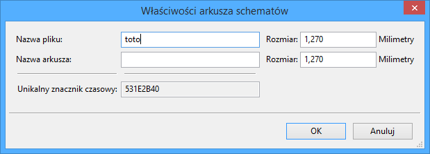
Nastêpnie program poprosi o wpisanie nazwy pliku oraz nazwy arkusza dla tego arkusza podrzêdnego (w celu dotarcia do odpowiedniego schematu, z pomoc± nawigatora).
Ostatecznie mo¿na podaæ tylko sam± nazwê pliku. Je¶li nie ma nazwy arkusza, nazwa pliku bêdzie pe³ni³a rolê nazwy arkusza (zwykle tak siê robi).
Wielko¶æ tego prostok±ta musi pozwoliæ umie¶ciæ pó¼niej poszczególne piny hierarchiczne odpowiadaj±ce etykietom hierarchicznym (HLabels) w arkuszach podrzêdnych.
Etykiety te bêd± spe³niaæ podobn± rolê jak zwyk³e wyprowadzenia elementów.
Piny hierarchiczne
W tym punkcie stworzone zostan± punkty po³±czeñ (piny hierarchiczne) dla symbolu, który zosta³ w³a¶nie utworzony.
Te punkty po³±czeñ s± podobne do zwyk³ych wyprowadzeñ elementów, jednak z mo¿liwo¶ci± po³±czenia kompletnej magistrali za pomoc± tylko jednego punktu ³±cz±cego.
S± dwie mo¿liwo¶ci by wykonaæ takie po³±czenia:
- Umie¶ciæ ró¿ne piny hierarchiczne w symbolu arkusza przed narysowaniem zawarto¶ci arkusza podrzêdnego (wstawianie rêczne).
- Umie¶ciæ ró¿ne piny hierarchiczne po narysowaniu zawarto¶ci arkuszy podrzêdnych oraz etykiet hierarchicznych (wstawianie pó³automatyczne).
Drugie rozwi±zanie wydaje siê bardziej korzystne.
Wstawianie rêczne pinów hierarchicznych
By wstawiæ pin hierarchiczny do symbolu tego arkusza nale¿y:
- Wybraæ narzêdzie
 .
. - Klikn±æ na symbolu hierarchicznym gdzie chcieliby¶my utworzyæ taki pin.
Poni¿ej znajduje siê przyk³ad tworzenia pinu hierarchicznego nazwanego CONNEXION.
Mo¿na pó¼niej zdefiniowaæ dodatkowe atrybuty graficzne oraz rozmiar opisu edytuj±c ten pin hierarchiczny (Klikaj±c prawym klawiszem, wybieraj±c polecenie Edycja w podrêcznym menu):
Dostêpne s± ró¿ne postacie symboli:
- Input - Wej¶cie
- Output - Wyj¶cie
- Bidirectional - Dwukierunkowy
- Tri-state - Trój-stanowy
- Passive - Nieokre¶lony
Te symbole to tylko rozszerzenie graficzne, nie maj±ce ¿adnej innej roli.
Wstawianie pó³automatyczne pinów hierarchicznych
Przy wstawianiu pó³automatycznym postêpujemy podobnie:
- Nale¿y wybraæ narzêdzie ukryte pod ikon±
 .
. - Klikn±æ na symbol hierarchiczny, z którego chcemy zaimportowaæ piny odpowiadaj±ce etykietom hierarchicznym umieszczonym w odpowiednim schemacie. Piny hierarchiczne pojawi± siê, je¶li istniej± nowe etykiety, tzn. pominiête zostan± ju¿ dodane wcze¶niej piny.
- Klikn±æ w miejscy gdzie taki pin ma siê pojawiæ.
Wszystkie niezbêdne piny mog± byæ wiêc umieszczone szybko i bez b³êdów.
Przewag± w stosunku do wstawiania rêcznego jest to, ¿e s± one zgodnie z odpowiednimi etykietami hierarchicznymi jakie istniej± na schemacie.
Etykiety hierarchiczne
Ka¿dy stworzony pin w symbolu arkusza musi odpowiadaæ etykiecie hierarchicznej w arkuszu podrzêdnym.
Etykiety hierarchiczne s± podobne do zwyk³ych etykiet, ale w przeciwieñstwie do nich dostarczaj± one po³±czeñ pomiêdzy arkuszami podrzêdnymi a arkuszem g³ównym (nadrzêdnym).
Graficzna reprezentacja dwóch etykiet uzupe³niaj±cych (pinu i etykiety hierarchicznej) jest podobna.
Tworzeniem etykiet hierarchicznych (HLabel) zajmuje siê narzêdzie ukryte pod ikon±  .
.
Poni¿ej znajduje siê przyk³ad arkusza g³ównego:
Nale¿y zwróciæ baczn± uwagê na piny TRANSF1 and TRANSF2, po³±czone ze z³±czem JP3.
Na nastêpnym rysunki znajduj± siê odpowiednie po³±czenia w arkuszu podrzêdnym:
Nale¿y zwróciæ te¿ uwagê na dwie odpowiadaj±ce pinom hierarchicznym etykiety hierarchiczne, pozwalaj±ce na zbudowanie po³±czenia pomiêdzy arkuszami hierarchicznymi.
Uwaga:
Za pomoc± etykiet hierarchicznych oraz pinów hierarchicznych, istnieje mo¿liwo¶æ ³±czenia dwóch magistral, zgodnie z tym co opisano wcze¶niej przy opisie ich sk³adników (Magistrala [N. .m]).
Etykiety, etykiety hierarchiczne, etykiety globalne oraz piny ukryte
Oto kilka uwag na temat ró¿nych sposobów zapewnienia po³±czeñ innych ni¿ po³±czenia bezpo¶rednie.
Etykiety
Etykiety (zwyk³e) maj± lokalne mo¿liwo¶ci ³±czeniowe, czyli ograniczone do arkusza schematu w którym siê znajduj±. Wynika to z faktu, ¿e:
- Ka¿dy arkusz posiada numer arkusza.
- Numer arkusza jest zwi±zany z nazw± etykiety.
Dlatego, je¶li umie¶cimy etykietê TOTO na arkuszu nr 3, w rzeczywisto¶ci prawdziwa jej nazwa bêdzie brzmieæ TOTO_3.
Je¶li w arkuszu numer 1 (arkusz g³ówny) równie¿ umie¶cimy etykietê TOTO to w rzeczywisto¶ci zostanie tam umieszczona etykieta TOTO_1, ró¿na od TOTO_3.
Jest to prawd±, nawet je¶li istnieje tylko jeden arkusz.
Etykiety hierarchiczne
To, co zosta³o napisane w zwi±zku z etykietami prostymi równie¿ jest prawd± w stosunku do etykiet hierarchicznych.
Zatem w tym samym arkuszu, etykieta hierarchiczna TOTO jest uwa¿ana za pod³±czon± do lokalnej etykiety TOTO, ale nie jest pod³±czona do etykiety hierarchicznej lub etykiety hierarchicznej o nazwie TOTO w innym arkuszu.
Jednak etykieta hierarchiczna jest uwa¿ana za pod³±czon± do odpowiedniego pinu hierarchicznego w symbolu hierarchicznym umieszczonym w arkuszu g³ównym.
Ukryte piny
Jak zosta³o wcze¶niej napisane, s± one po³±czone ze sob± gdy posiadaj± t± sam± nazwê.
Tak wiêc wszystkie piny zadeklarowane jako Ukryte piny zasilania o nazwie VCC s± po³±czone i tworz± szynê VCC, bez wzglêdu na to na którym arkuszu s± one umieszczone.
Gdyby etykieta o nazwie VCC zosta³a umieszczona na arkuszu podrzêdnym, to nie by³aby ona po³±czona z wyprowadzeniem VCC, poniewa¿ etykiet± by³aby faktycznie VCC_n, gdzie n to numer arkusza.
Je¶li chcemy, by etykieta VCC by³a naprawdê pod³±czona do szyny VCC, bêdzie trzeba j± jednoznacznie po³±czyæ do ukrytych wyprowadzeñ zasilania, dziêki portowi zasilania VCC.
Etykiety globalne
Globalne etykiety, które maj± identyczne nazwy po³±czone s± w ca³ej hierarchii (porty zasilania jak np. VCC ... s± globalnymi etykietami).
Hierarchia z³o¿ona
Hierarchia z³o¿ona wystêpuje tam gdzie jeden z arkuszy hierarchicznych zosta³ u¿yty np. dwukrotnie (dwie jego postacie). Przyk³ad takiej hierarchii zosta³ zaprezentowany poni¿ej.
Dwa arkusze posiadaj± taki sam schemat, poniewa¿ nazwa pliku jest taka sama dla dwóch arkuszy (supply.sch). Ich nazwy jednak musz± pozostaæ ró¿ne.
Uwaga:
Po utworzeniu drugiego arkusza (jego nastêpnej postaci) w hierarchii z³o¿onej nale¿y ponownie zaimportowaæ jego piny hierarchiczne.
Hierarchia p³aska
Mo¿na utworzyæ projekt z wykorzystaniem wielu arkuszy bez tworzenia po³±czeñ miêdzy tymi arkuszami (p³aski model hierarchii), je¶li zastosowano nastêpuj±ce regu³y:
- Nale¿y stworzyæ arkusz g³ówny zawieraj±cy inne arkusze, który dzia³a jako ³±cznik miêdzy innymi arkuszami.
- Nie s± potrzebne wyra¼ne po³±czenia miêdzy nimi.
- Wszystkie po³±czenia miêdzy arkuszami zostaj± wykonane z u¿yciem etykiet globalnych zamiast etykiet hierarchicznych.
Przyk³ad:
Poni¿ej zawarto¶æ g³ównego schematu:

Poni¿ej znajduj± siê dwie strony po³±czone za pomoc± etykiet globalnych. Arkusz pic_programmer:

Arkusz sockets:

Same etykiety globalne wygl±daj± w ten sposób:

7. Automatyczna numeracja elementów schematu
Przeznaczenie
Narzêdzie Numeruj schemat (ikona  ) pozwala na przeprowadzenie procesu automatycznego przypisania oznaczeñ elementom, a dla elementów wieloczê¶ciowych tak¿e na przypisanie sufiksów, tak by zminimalizowaæ liczbê takich elementów.
) pozwala na przeprowadzenie procesu automatycznego przypisania oznaczeñ elementom, a dla elementów wieloczê¶ciowych tak¿e na przypisanie sufiksów, tak by zminimalizowaæ liczbê takich elementów.
Okienko dialogowe tego narzêdzia wygl±da w sposób nastêpuj±cy:
Dostêpne opcje
Dostêpne s± ró¿ne mo¿liwo¶ci przeprowadzenia numeracji automatycznej:
- Opisywanie wszystkich sk³adników (opcja Resetuj bie¿±c± numeracjê)
- Opisywanie wy³±cznie nowych czê¶ci (np. tylko tych, których odniesienia zakoñczone s± przez ? Jak np
IC?) (Opcja Pozostaw bie¿±c± numeracjê). - Opisywanie ca³ej hierarchii (opcja U¿yj ca³ego schematu).
- Opisywanie tylko bie¿±cego arkusza (opcja U¿yj tylko bie¿±c± stronê).
Opcje zawarte w grupie Wybór numeracji pozwalaj± wybraæ metodê jaka zostanie wykorzystana podczas przypisywania numerów referencyjnych wewn±trz ka¿dego arkusza w hierarchii.
Za wyj±tkiem szczególnych przypadków, automatyczna numeracja ma zastosowanie do ca³ego projektu (wszystkie arkusze) oraz tylko do nowych elementów, je¶li nie chcemy modyfikowaæ poprzedniej numeracji.
Wybór numeracji daje wybór metody u¿ytej podczas obliczania numerów referencyjnych:
- U¿yj pierwszego wolnego numeru na schemacie: elementy s± notowane od 1 (dla ka¿dego prefiksu odniesienia). Je¿eli istnieje poprzednia numeracja, wybrane zostan± liczby jeszcze nie wykorzystywane.
- Rozpocznij od numer arkusza*100 i u¿yj pierwszego wolnego numeru: Numeracja zostanie rozpoczêta od liczby 101 dla arkusza
1,201dla arkusza 2, itd... Je¶li istnieje wiêcej ni¿ 99 pozycji z tym samym prefiksem w nazwie odniesienia (np.UczyR) wewn±trz arkusza 1, numeracja bêdzie kontynuowana od liczby 200 i dalej, a numeracja w arkuszu 2 rozpocznie siê od nastêpnego wolnej liczby. - Rozpocznij od numer arkusza*1000 i u¿yj pierwszego wolnego numeru: Numeracja rozpocznie siê od liczby
1001dla arkusza 1,2001dla arkusza 2, itd...
Przyk³ady
Zmiany porz±dku numeracji
Poni¿szy obrazek ukazuje 5 umieszczonych elementów, lecz jeszcze nie ponumerowanych.

Po przeprowadzeniu automatycznej numeracji:

Z sortowaniem elementów wed³ug pozycji w osi X:

Z sortowaniem elementów wed³ug pozycji w osi Y
Mo¿na zauwa¿yæ, ¿e cztery bramki uk³adu 74LS00 zosta³y zawarte w uk³adzie U1, a pi±ta bramka zosta³a przypisana do nastêpnego uk³adu U2.
Wybór numeracji
Poni¿ej znajduj± siê wyniki procesu numeracji dla arkusza numer 2, w zale¿no¶ci od wybranej opcji:
Opcja U¿yj pierwszego wolnego numeru na schemacie:
Opcja Rozpocznij od numer arkusza*100 i u¿yj pierwszego wolnego numeru
Opcja Rozpocznij od numer arkusza*1000 i u¿yj pierwszego wolnego numeru
8. Kontrola regu³ projektowych - ERC
Wprowadzenie
Funkcja Kontrola regu³ projektowych ERC przeprowadza automatyczne sprawdzenie poprawno¶ci elektrycznej schematu.
Wskazuje ona b³êdy na arkuszu schematu, takie jak: niepod³±czone wyprowadzenia, niepod³±czone wyprowadzenia w symbolach hierarchicznych, zwarcia pomiêdzy wyj¶ciami, itp.
Naturalnie, sprawdzanie automatyczne nie jest bezb³êdne, a oprogramowanie które mog³oby wykryæ wszelkie b³êdy nie zosta³o jeszcze napisane. Aczkolwiek zwyk³a kontrola jest bardzo u¿yteczna, poniewa¿ pozwala na wykrycie wielu niedopatrzeñ oraz ma³ych b³êdów.
W zasadzie wszystkie wykryte b³êdy musz± zostaæ sprawdzone I poprawione przed kontynuacj± dalszej pracy nad projektem. Jako¶æ procesu sprawdzenia jest bezpo¶rednio zale¿na od staranno¶ci jaka zosta³a podjêta podczas tworzenia elementów bibliotecznych, zw³aszcza przy definiowaniu typu wyprowadzeñ.
B³êdy raportowane przez ERC mog± mieæ status b³êdów lub ostrze¿eñ.
Sposób u¿ycia
Uruchomienie procesu kontroli regu³ projektowych jest uruchamiane z pomoc± narzêdzia ukrytego pod ikon±  .
.
Znaczniki b³êdów s± umieszczane na elementach lub w miejscach, które by³y powodem b³êdów (zwykle wyprowadzenia lub etykiety).
Uwaga:
Klikniêcie w informacjê o b³êdzie w tym oknie dialogowym spowoduje, ¿e kursor zostanie przeniesiony do miejsca w którym znajduje siê znacznik tego b³êdu na schemacie.
Na schemacie, klikniêcie prawym klawiszem na znacznik b³êdu umo¿liwia dostêp do informacji o powodzie b³êdu.
Z pomoc± tego okna dialogowego mo¿na równie¿ usun±æ znaczniki b³êdów.
Przyk³adowy rezultat dzia³ania ERC

Widaæ tu cztery b³êdy:
- Dwa wyj¶cia zosta³y po³±czone razem co z pewno¶ci± doprowadzi do superpozycji.
- Dwa wej¶cia nie zosta³y pod³±czone i "wisz± w powietrzu".
- Jeden z b³êdów dotyczy ukrytego pinu zasilania (tu: linia zasilania nie posiada ustawionej flagi
PWR_FLAG).
Wy¶wietlanie informacji o b³êdzie
W przypadku klikniêcia prawym klawiszem myszy na znaczniku b³êdu, zostanie wy¶wietlone menu podrêczne pozwalaj±ce na wy¶wietlenie informacji o przyczynie tego b³êdu.
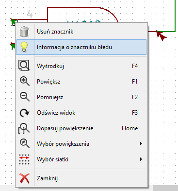
Po wybraniu polecenia Informacja o znaczniku o b³êdu wy¶wietlone zostanie okno z informacj± o typie i powodzie wyst±pienia tego b³êdu:
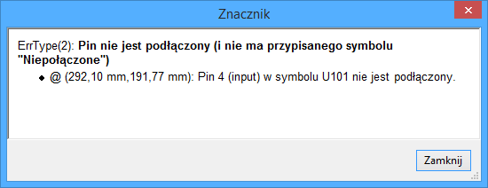
Porty zasilania a flagi zasilania
Dosyæ czêsto wystêpuje b³±d (ostrze¿enie) na wyprowadzeniach zasilania, podczas gdy na pierwszy rzut oka wszystko wydaje siê poprawne (patrz przyk³ad powy¿ej). To dlatego, ¿e w wiêkszo¶ci projektów zasilanie jest dostarczane przez z³±czki, które nie s± ¼ród³ami zasilania gdy¿ ich wyprowadzenia maj± funkcje pasywn± (nie tak jak na przyk³ad wyj¶cie regulatora napiêcia, którego piny s± zwykle zadeklarowane jako ¼ród³o zasilania).
ERC wobec tego nie znajduje ¿adnego ¼ród³a zasilania do wysterowania takiej sieci i uzna j± za nie wysterowan± (nie po³±czon± ze ¼ród³em zasilania). W takich przypadkach nale¿y do takiej sieci przypi±æ specjalny element: flagê PWR_FLAG z biblioteki power.lib, które sygnalizuje, ¿e ta sieæ jest w istocie ¼ród³em zasilania.

Po umieszczeniu na szynach zasilania tej flagi, b³êdy zwi±zane z brakiem sterowania powinny znikn±æ podczas ponownej kontroli ERC.
W wiêkszo¶ci przypadków, PWR_FLAG musi zostaæ podpiêta do sieci GND, poniewa¿ regulatory napiêæ posiadaj± co prawda wyj¶cia zadeklarowane jako ¼ród³o zasilania, ale ich wyprowadzenia masy (GND) zwykle nigdy nie s± ¼ród³ami zasilania (normalny atrybut to wej¶cie zasilania). Tak wiêc, masy nigdy nie wystêpuj± jako ¼ród³a zasilania bez podpiêtej PWR_FLAG.
Konfiguracja
Panel opcji pozwala na skonfigurowanie regu³ jakimi siê ma kierowaæ ERC w okre¶lonych przypadkach zestawienia po³±czenia, i czy w danym przypadku ma zostaæ wygenerowany b³±d czy tylko ostrze¿enie, albo te¿ takie zestawienie nie powinno generowaæ b³êdu.
Poszczególne regu³y mog± zostaæ zmienione poprzez klikniêcie na wybranym polu na powy¿szej matrycy. Kolejne klikniêcia pozwalaj± na wybranie: brak b³êdu (zielony), ostrze¿enie (¿ó³ty, W) i b³±d (czerwony, E). Zmiany odbywaj± siê w zamkniêtym cyklu, zatem aby wróciæ do poprzedniego stanu nale¿y ponownie klikn±æ (jedno- lub dwukrotnie).
W ka¿dej chwili mo¿na przywróciæ ustawienia domy¶lne poprzez przycisk Resetuj.
Pliki raportów generowane przez ERC
Plik raportu ERC mo¿e zostaæ wygenerowany i zapisany poprzez zaznaczenie opcji Utwórz plik raportu. Pliki takie s± zapisywane z rozszerzeniem .erc.
Poni¿ej znajduje siê przyk³ad zawarto¶ci takiego pliku:
Raport ERC (2011-09-24 08:46:02)
***** Arkusz / (Root)
ErrType(2): Pin nie jest pod³±czony (i nie ma przypisanego symbolu "Niepo³±czone")
@ (3,2500 ",3,0500 "): Element U10, Pin 5 (input) nie jest po³±czony
ErrType(3): Pin pod³±czony do innych pinów ale nie ma pinu steruj±cego
@ (3,6500 ",2,4000 "): Element U10, pin 7 (power_in) nie jest sterowany (sieæ 6)
ErrType(3): Pin pod³±czony do innych pinów ale nie ma pinu steruj±cego
@ (3,6500 ",2,7500 "): Element U10, pin 14 (power_in) nie jest sterowany (sieæ 5)
ErrType(5): B£¡D: Konflikt pomiêdzy pinami.
@ (4,4500 ",2,2000 "): Element U10: Pin 3 (output) po³±czony z
@ (4,4500 ",2,9500 "): Element U10: Pin 6 (output) (sieæ 2)
ErrType(2): Pin nie jest pod³±czony (i nie ma przypisanego symbolu "Niepo³±czone")
@ (3,2500 ",2,8500 "): Element U10, Pin 4 (input) nie jest po³±czony
>> B³êdy ERC: 59. Generowanie list sieci
Przegl±d zagadnieñ
Lista sieci to plik, który opisuje po³±czenia pomiêdzy elementami na schemacie. Znajduje siê w nim:
- Lista elementów,
- Lista po³±czeñ pomiêdzy nimi, zwana sieci± ekwipotencjaln±.
Istnieje wiele formatów list sieci. Czasem listê elementów i listê ekwipotencja³ów tworz± dwa oddzielne pliki.
Lista sieci jest elementem fundamentalnym w przypadku oprogramowania do tworzenia schematów, poniewa¿ lista sieci to ³±cze do innego elektronicznego oprogramowania CAD, takiego jak:
- Oprogramowanie do trasowania obwodów drukowanych (PCB).
- Symulatory uk³adów.
- Syntetyzery uk³adów PAL/PLA (oraz innych uk³adów programowalnych).
Eeschema wspiera kilka formatów list sieci:
- Format Pcbnew (obwody drukowane).
- Format ORCAD PCB2 (obwody drukowane).
- Format CADSTAR (obwody drukowane).
- Format Spice, u¿ywany przez spor± grupê symulatorów nie tylko przez PSpice.
Format listy sieci
Nale¿y wybraæ narzêdzie dostêpne spod ikony  by otworzyæ okno dialogowe tworzenia listy sieci:
by otworzyæ okno dialogowe tworzenia listy sieci:
Wybrana karta Pcbnew
Wybrana karta Spice
Korzystaj±c z ró¿nych kart, mo¿na wybraæ ¿±dany format jako format domy¶lny.
W formacie Spice, mo¿na wygenerowaæ listê sieci z nazwami ekwipotencja³ów (jest to bardziej czytelne) lub w postaci liczbowej (starsze wersje Spice akceptuj± tylko liczby).
Klikaj±c w przycisk Lista sieci, bêdziemy poproszeni o podanie nazwy pliku z list± sieci.
Uwaga:
W przypadku du¿ych projektów, generowanie listy sieci mo¿e zaj±æ wiêcej czasu.
Przyk³ady
Na poni¿szym rysunku znajduje siê schemat u¿ywaj±cy biblioteki PSPICE.

Struktura listy sieci programu Pcbnew:
# Eeschema Netlist Version 1.0 generee le 21/1/1997-16:51:15
(
(32E35B76 $noname C2 1NF {Lib=C}
(1 0)
(2 VOUT_1)
)
(32CFC454 $noname V2 AC_0.1 {Lib=VSOURCE}
(1 N-000003)
(2 0)
)
(32CFC413 $noname C1 1UF {Lib=C}
(1 INPUT_1)
(2 N-000003)
)
(32CFC337 $noname V1 DC_12V {Lib=VSOURCE}
(1 +12V)
(2 0)
)
(32CFC293 $noname R2 10K {Lib=R}
(1 INPUT_1)
(2 0)
)
(32CFC288 $noname R6 22K {Lib=R}
(1 +12V)
(2 INPUT_1)
)
(32CFC27F $noname R5 22K {Lib=R}
(1 +12V)
(2 N-000008)
)
(32CFC277 $noname R1 10K {Lib=R}
(1 N-000008)
(2 0)
)
(32CFC25A $noname R7 470 {Lib=R}
(1 EMET_1)
(2 0)
)
(32CFC254 $noname R4 1K {Lib=R}
(1 +12V)
(2 VOUT_1)
)
(32CFC24C $noname R3 1K {Lib=R}
(1 +12V)
(2 N-000006)
)
(32CFC230 $noname Q2 Q2N2222 {Lib=NPN}
(1 VOUT_1)
(2 N-000008)
(3 EMET_1)
)
(32CFC227 $noname Q1 Q2N2222 {Lib=NPN}
(1 N-000006)
(2 INPUT_1)
(3 EMET_1)
)
)
# EndW formacie PSPICE, lista sieci by³aby nastêpuj±ca:
* Eeschema Netlist Version 1.1 (Spice format) creation date: 18/6/2008-08:38:03
.model Q2N2222 npn (bf=200)
.AC 10 1Meg *1.2
.DC V1 10 12 0.5
R12 /VOUT N-000003 22K
R11 +12V N-000003 100
L1 N-000003 /VOUT 100mH
R10 N-000005 N-000004 220
C3 N-000005 0 10uF
C2 N-000009 0 1nF
R8 N-000004 0 2.2K
Q3 /VOUT N-000009 N-000004 N-000004 Q2N2222
V2 N-000008 0 AC 0.1
C1 /VIN N-000008 1UF
V1 +12V 0 DC 12V
R2 /VIN 0 10K
R6 +12V /VIN 22K
R5 +12V N-000012 22K
R1 N-000012 0 10K
R7 N-000007 0 470
R4 +12V N-000009 1K
R3 +12V N-000010 1K
Q2 N-000009 N-000012 N-000007 N-000007 Q2N2222
Q1 N-000010 /VIN N-000007 N-000007 Q2N2222
.print ac v(vout)
.plot ac v(nodes) (-1,5)
.endUwagi
Zalecane ¶rodki ostro¿no¶ci
Wiele wersji oprogramowania, które wykorzystuj± listy sieci nie akceptuj± spacji w nazwach elementów, wyprowadzeñ, ekwipotencja³ach lub innych elementów. Nale¿y zatem unikaæ spacji w nazwach etykiet lub w nazwach i warto¶ciach elementów, lub te¿ w nazwach ich wyprowadzeñ.
W ten sam sposób, niektóre znaki inne ni¿ litery i cyfry mog± równie¿ powodowaæ problemy.
Nale¿y pamiêtaæ, ¿e ograniczenie to nie jest zwi±zane z Eeschema, ale z formatami list sieci, które mog± nastêpnie staæ siê nieprzet³umaczalne dla oprogramowania, które korzysta z tych list sieci.
Listy sieci PSPICE
Dla symulatora PSpice trzeba do listy sieci dodaæ kilka linii z poleceniami dla symulatora (.PROBE, .AC ...). Mo¿na je umie¶ciæ bezpo¶rednio na schemacie.
Ka¿dy wiersz tekstu umieszczonego na schemacie, rozpoczynaj±cy siê od s³ów kluczowych: -pspice lub -gnucap zostanie wstawiony (bez s³ów kluczowych) na pocz±tku listy sieci.
Ka¿dy wiersz tekstu umieszczonego na schemacie rozpoczynaj±cy siê od s³ów kluczowych: +gnucap lub +pspice zostanie dopisany (bez s³ów kluczowych) na koniec listy sieci.
Poni¿ej znajduje siê przyk³ad, na którym u¿yto wielu jednoliniowych tekstów poleceñ, a tak¿e jeden wieloliniowy tekst polecenia:
Przyk³adowo: Je¶li zostanie wpisany nastêpuj±cy tekst (nie jako etykieta!!):
-PSPICE .PROBElinia .PROBE zostanie wstawiona do listy sieci.
W poprzednim przyk³adzie dziêki tej technice, trzy linie poleceñ zostan± wstawione na pocz±tek listy sieci, oraz dwie linie poleceñ na koñcu.
Je¶li u¿yty zosta³ format wieloliniowy poleceñ, +pspice lub +gnucap s± wymagane tylko na pocz±tku:
+PSPICE .model NPN NPN
.model PNP PNP
.lib C:\Program Files\LTC\LTspiceIV\lib.cmp\standard.bjt
.backanno
Taki zapis utworzy nastêpuj±cy tekst:
.model NPN NPN
.model PNP PNP
.lib C:\Program Files\LTC\LTspiceIV\lib.cmp\standard.bjt
.backanno
Poza tym, nale¿y równie¿ pamiêtaæ, ¿e ekwipotencja³ GND musi dla PSpice byæ nazwany 0 (zero).
Inne formaty, u¿ycie "wtyczek"
Dla innych formatów listy sieci mo¿na dodaæ specjalne konwertery w formie wtyczek. Konwertery te s± automatycznie uruchamiane przez Eeschema.
Rodzia³ 14 zawiera odpowiednie wskazówki jak i przyk³ady takich konwerterów.
Podstawy
Konwerter to plik tekstowy (format xsl, ale mo¿na u¿yæ innego jêzyka, np. PYTHON).
U¿ycie formatu xsl, narzêdzie (xsltproc.exe lub xsltproc) odczytuje plik po¶redni tworzony przez Eeschema, a nastêpnie konwerter tworzy odpowiedni plik wyj¶ciowy.
W takim przypadku, plik konwertera (arkusz stylu) jest bardzo ma³y i bardzo ³atwo go napisaæ.
Inicjalizacja okna dialogowego wtyczki
Aby dodaæ i zainicjowaæ now± wtyczkê nale¿y klikn±æ polecenie Dodaj wtyczkê:
W oknie dialogowym, które siê pojawi klikaj±c przycisk Przegl±daj wtyczki mo¿na wybraæ jeden z dostêpnych plików konwertera (np. z \kicad\bin\plugins).
Ustawienia które bêd± niezbêdne to:
- Polecenie uruchamiaj±ce t± wtyczkê.
- Tytu³ (na przyk³ad: nazwa formatu listy sieci), który bêdzie stanowi³ nazwê zak³adki.
Poni¿ej znajduj± siê przyk³adowe ustawienia dla wtyczki PADS-PCB:
W tym wypadku Eeschema sam dopisa³ potrzebne polecenie u¿ycia konwertera i jedyn± czynno¶ci± pozosta³o wpisanie nazwy tytu³u.
Po klikniêciu przycisku OK zostanie utworzona nowa zak³adka PADS-PCB, za pomoc± której bêdzie mo¿na uruchomiæ polecenie utworzenia listy sieci w tym formacie przyciskiem Lista sieci. Zaznaczaj±c opcjê Format domy¶lny mo¿emy ustawiæ zak³adkê tego formatu jako domy¶lnie otwieran± przy ka¿dym wywo³aniu polecenia utworzenia listy sieci.
Za pomoc± klawisza Usuñ wtyczkê mo¿na te¿ usun±æ t± wtyczkê by nie by³a dostêpna.
Zasada dzia³ania programu Eeschema w przypadku takich wtyczek jest prosta. Przy wywo³aniu klawiszem Lista sieci:
- Eeschema tworzy plik po¶redni
*.tmp, dla przyk³adutest.tmp - Eeschema uruchamia wtyczkê, która odczytuje plik
test.tmpi tworzytest.net
Format linii poleceñ
Poni¿ej mamy przyk³ad u¿ycia xsltproc.exe jako narzêdzia do konwersji plików po¶rednich, oraz jako arkusz stylów, plik /netlist_form_pads-pcb.xsl:
f:/kicad/bin/xsltproc.exe -o %O.net f:/kicad/bin/plugins/netlist_form_pads-pcb.xsl %IGdzie:
f:/kicad/bin/xsltproc.exe- Narzêdzie odczytuj±ce i konwertuj±ce pliki na podstawie plików xsl
-o %O.net- Plik wyj¶ciowy: %O zostanie zast±pione przez nazwê listy sieci (nazwê schematu root)
f:/kicad/bin/plugins/netlist_form_pads-pcb.xsl- Nazwa pliku konwertera (arkusz stylów, format xsl).
%I- Zostanie zast±pione przez plik po¶redni stworzony przez Eeschema (*.tmp).
W przypadku schematu zapisanego w pliku test.sch, kompletne polecenie bêdzie mia³o postaæ:
f:/kicad/bin/xsltproc.exe -o test.net f:/kicad/bin/plugins/netlist_form_pads-pcb.xsl test.tmpKonwerter i arkusze stylów - Program "xslproc"
Jest to bardzo prosty program, poniewa¿ jego celem jest tylko konwersja wej¶ciowych plików tekstowych (przez po¶redni plik tekstowy) do innego pliku tekstowego.
Ponadto, z pliku po¶redniego, mo¿e tak¿e tworzyæ listê materia³ow± BOM.
Podczas korzystania z xsltproc jako konwertera, nale¿y wy³±cznie napisaæ odpowiedni arkusz stylów.
Format pliku po¶redniego listy sieci
Zobacz zawarto¶æ rozdzia³u 14 aby uzyskaæ wiêcej wyja¶nieñ na temat xsltproc, opisu formatu pliku po¶redniego oraz przyk³ady arkuszy stylów dla konwerterów.
10. Drukowanie i rysowanie schematów na drukarkach lub ploterach
Wprowadzenie
Obie mo¿liwo¶ci przenoszenia schematów na papier (b±d¼ inny materia³ drukarski) s± dostêpne z menu Plik:
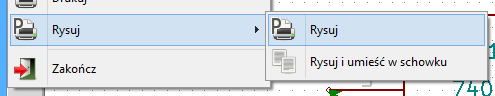
Formatami wyj¶ciowymi mog± byæ POSTSCRIPT, HPGL, SVG, DXF lub PDF. Mo¿na tak¿e drukowaæ bezpo¶rednio na zwyk³ej drukarce.
Polecenia wspólne
W ka¿dym oknie dialogowym dotycz±cym operacji rysowania schematu znajduj± siê dwie opcje:
- Rysuj wszystko pozwala na narysowanie ca³ej hierarchii (pliki s± generowane dla ka¿dego z arkusza).
- Rysuj bie¿±c± generuje plik wyj¶ciowy wy³±cznie dla bie¿±cego arkusza.
Rysowanie w formacie HPGL
Polecenie Rysuj pozwala na stworzenie pliku dla plotera obs³uguj±cego format HPGL.
W tym formacie mo¿na zdefiniowaæ kilka parametrów dla plotera:
- Rozmiar pisaka (w jednostkach 0,001cala).
- Rozmiar pola arkusza.
- Przesuniêcie strony - offset.
Po wybraniu tego polecenia otworzy siê nastêpuj±ce okno:
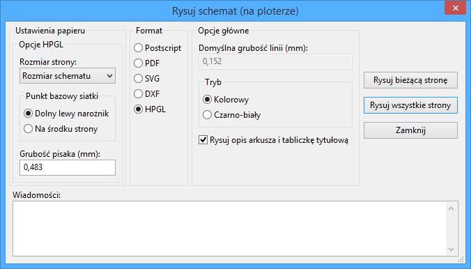
Nazwa pliku wyj¶ciowego sk³ada³a siê bêdzie z nazwy arkusza i rozszerzenia .plt.
Wybór rozmiaru arkusza
Normalnie jest zaznaczona opcja Rozmiar schematu. W takim przypadku, rozmiar arkusza plotera bêdzie taki sam jak rozmiar arkusza okre¶lony w Eeschema, a skala bêdzie wynosiæ 1. Je¶li wybrano inny rozmiar arkusza docelowego (od A4 do A0, lub A do E), to skala zostanie automatycznie dobrana, tak aby rysunek wype³ni³ w pe³ni stronê plotera.
Ustawienie przesuniêcia strony
Dla wszystkich standardowych rozmiarów, mo¿na przenie¶æ punkt zerowy by wyrównaæ rysunek na ¶rodku strony. Niektóre plotery mog± posiadaæ punkt pocz±tkowy w centrum pola roboczego lub w dolnym lewym rogu, dlatego wymagane jest poprawne ustawienie tej opcji, zgodnie z mo¿liwo¶ciami plotera.
Rysuj w formacie PDF
Polecenie to pozwala na stworzenie pliku w formacie PDF.
Nazwa pliku wyj¶ciowego sk³ada³a siê bêdzie z nazwy arkusza i rozszerzenia .pdf.
Okno wiadomo¶ci zawieraæ bêdzie nazwy plików jakie zosta³y utworzone.
Rysuj w formacie PostScript
Polecenie to pozwala na stworzenie pliku w formacie PostSctipt.
Nazwa pliku wyj¶ciowego sk³ada³a siê bêdzie z nazwy arkusza i rozszerzenia .ps.
Mo¿na dodatkowo odznaczyæ opcjê: Rysuj opis arkusza i tabliczkê tytu³ow±. Jest to u¿yteczne w przypadku tworzenia pliku postscriptowego do pó¼niejszej obróbki (format .eps), aby umo¿liwiæ wstawianie rysunków do procesora tekstu.
Rysuj w formacie SVG
To polecenie pozwala na utworzenie plików, które zawieraæ bêd± skalowane rysunki wektorowe - SVG. Nazwa pliku wyj¶ciowego sk³ada³a siê bêdzie z nazwy arkusza i rozszerzenia .svg.
Rysuj w formacie DXF
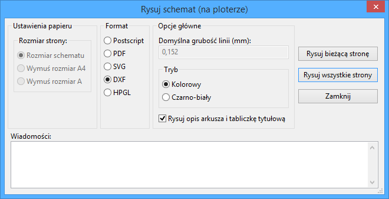
Pozwala na utworzenie plików z rysunkami CAD u¿ywaj±c popularnego formatu DXF.
Nazwa pliku wyj¶ciowego sk³ada³a siê bêdzie z nazwy arkusza i rozszerzenia .dxf.
Drukuj
To polecenie, podobne do polecenia  na g³ównym pasku narzêdzi, pozwala na podgl±d oraz utworzenie wydruków korzystaj±c z normalnej drukarki.
na g³ównym pasku narzêdzi, pozwala na podgl±d oraz utworzenie wydruków korzystaj±c z normalnej drukarki.
Pierwsza opcja Drukuj opis arkusza i tabliczkê pozwala na wydrukowanie tak¿e odno¶ników arkuszy oraz tabliczki która znajduje siê w prawym dolnym rogu. Opcja Drukuj jako czarno-bia³y wymusza za¶ wydruk monochromatyczny.
Opcja ta zwykle jest stosowana, gdy do wydruków jest u¿ywana laserowa drukarka monochromatyczna, poniewa¿ wiêkszo¶æ drukarek dla jasnych kolorów korzysta z do¶æ nieczytelnej symulacji pó³-tonalnej. St±d te¿ po³±czenia, rysowane kolorem zielonym, mog³yby staæ siê ma³o widoczne.
11. Edytor bibliotek LibEdit - Podstawy
Podstawowe informacje na temat bibliotek
Czym jest biblioteka symboli ?
Wszystkie symbole u¿ywane na schematach s± opisane w bibliotekach symboli.
Aby umo¿liwiæ stosunkowo proste zarz±dzanie tymi sk³adnikami, u¿ywa siê kilku bibliotek, z symbolami pogrupowanymi wed³ug jednego klucza (wg funkcji lub producentów).
Polecenia s³u¿±ce do zarz±dzania bibliotekami symboli umo¿liwiaj± tworzenie bibliotek, dodawanie, usuwanie lub te¿ przenoszenie symboli.
Oczywi¶cie pozwala równie¿ na szybk± wizualizacjê elementów z biblioteki.
Polecenia zwi±zane z bibliotekami
Istniej± dwa polecenia uruchamiaj±ce narzêdzia zwi±zane z bibliotekami:
- ViewLib który pozwala wy³±cznie na przegl±d symboli, ale umo¿liwia za to szybki dostêp do nich. Uruchamiany jest poleceniem
 . Jego opis zostanie przedstawiony w jednym z nastêpnych rozdzia³ów.
. Jego opis zostanie przedstawiony w jednym z nastêpnych rozdzia³ów. - LibEdit który pozwala na pe³ne zarz±dzanie zawarto¶ci± bibliotek. Uruchamiane poprzez
 .
.
Elementy sk³adowe symboli
Symbol znajduj±cy siê w bibliotece jest z³o¿ony z:
- Jego postaci graficznej (linie, okrêgi, pola tekstowe).
- Wyprowadzeñ, inaczej pinów (które musz± byæ narysowane w ¶ci¶le okre¶lony sposób u¿ywaj±c powszechnie przyjêtych standardów (zwyk³y pin, lub wej¶cie zegarowe, lub aktywny niskim poziomem, albo aktywny zboczem.) opisuj±c ich w³a¶ciwo¶ci elektryczne, u¿ywane przez ERC.
- Pola (tekstowe) takie jak oznaczenie, warto¶æ, nazwa modu³u potrzebna do wstawienia go na p³ytkê.
Symbol mo¿e posiadaæ równie¿ aliasy, czyli nazwy alternatywne (na przyk³ad 7400 mo¿e tak¿e wystêpowaæ jako 74LS00, 74HC00, 7437, poniewa¿ wszystkie te symbole s± identyczne z punktu widzenia schematu).
Korzystanie z aliasów jest bardzo ciekaw± metod± tworzenia kompletnych, ale zwartych i (wzglêdnie) szybko budowanych bibliotek.
Tworzenie symboli to:
- Definiowanie ogólnych w³a¶ciwo¶ci: czy posiada wiele czê¶ci sk³adowych i ile ich jest, czy posiada podwójn± reprezentacjê (znany jako DeMorgan, a w Eeschema reprezentowany normalnie i jako skonwertowany).
- Projektowanie wygl±du (z wyj±tkiem pinów) z u¿yciem linii, prostok±tów, okrêgów, wielok±tów i tekstów.
- Dodawanie wyprowadzeñ, dok³adnie okre¶laj±c ich projekt graficzny, nazwê oraz numer pinu, a tak¿e ich w³a¶ciwo¶ci elektryczne (wej¶cie, wyj¶cie, trzy-stanowe, port zasilania...).
- Dodawanie aliasów, je¶li inne komponenty s± tej samej konstrukcji i maj± ten sam zestaw wyprowadzeñ (lub te¿ usuniêcie jednego w przypadku, gdy symbol zosta³ stworzony przez skopiowanie innego symbolu).
- Dodawanie pól w razie potrzeby (jest to opcjonalne, nazwa modu³u jest wykorzystywany przez oprogramowanie PCB) i/lub okre¶lenie ich widoczno¶ci.
- Dokumentowanie sk³adnika np. poprzez dodanie s³ów kluczowych i adresu dokumentacji w sieci lub na lokalnym no¶niku.
- Zapisuj±c go do wybranej biblioteki.
Odczyt symbolu w celu edycji
Klikaj±c w ikonê  otworzy siê okno LibEdit, w którym bêdzie mo¿na dokonaæ edycji symboli. Okno LibEdit ma postaæ:
otworzy siê okno LibEdit, w którym bêdzie mo¿na dokonaæ edycji symboli. Okno LibEdit ma postaæ:
G³ówny pasek menu

| Zapisuje bibliotekê na dysku. | |
| Wybór biblioteki aktywnej w danej chwili | |
| Usuniêcie symbolu z aktywnej biblioteki | |
| Przegl±danie zawarto¶ci bibliotek | |
| Stworzenie nowego symbolu od podstaw | |
| Odczyt symbolu z aktywnej biblioteki w celu edycji | |
| Tworzenie nowego symbolu na podstawie symbolu aktualnie za³adowanego. | |
| Zapisanie bie¿±cego symbolu w aktywnej bibliotece w buforze pamiêci RAM. Plik biblioteki na dysku nie jest modyfikowany. | |
| Importowanie symboli. | |
| Eksportowanie symboli. | |
| Tworzenie nowej biblioteki z bie¿±cym symbolem w polu edycyjnym. | |
| Przywracanie / wykonywanie ponowne poleceñ | |
| Edycja w³a¶ciwo¶ci symboli. | |
| Edycja pól symbolu: nazwa na schemacie, warto¶æ/nazwa pod jak± symbol bêdzie zapisany w bibliotece, pola u¿ytkownika | |
| Testowanie poprawno¶ci symbolu (wyrównanie pinów do siatki, zdublowane piny, itp.) | |
| Prze³±czanie reprezentacji: Normalny lub skonwertowany (De Morgana) | |
| Pokazuje dokumentacjê elementu (je¶li taka zosta³a okre¶lona) | |
| Wybór elementu sk³adowego (dla symboli wieloczê¶ciowych) | |
| Wybór aliasu (je¶li symbol je posiada) | |
| Edycja pinów: niezale¿na edycja kszta³tów i pozycji pinów (dla symboli wieloczê¶ciowych i reprezentacji De Morgana) |
Wybór biblioteki
Wybranie bie¿±cej biblioteki jest mo¿liwe za pomoc± ikony  , która otwiera okno z list± dostêpnych bibliotek.
, która otwiera okno z list± dostêpnych bibliotek.
Gdy element jest ³adowany lub zapisywany, to wszystkie te operacje bêd± przeprowadzane w tej bibliotece.
Uwaga:
Nale¿y wcze¶niej okre¶liæ nazwy bibliotek dostêpnych dla Eeschema, by móc je wybieraæ w ten sposób.
Bie¿±ca biblioteka mo¿e zostaæ zapisana po modyfikacjach klikaj±c w ikonê  .
.
Symbol mo¿e zostaæ usuniêty z biblioteki poprzez klikniêcie w ikonê  .
.
Wybór symbolu i sposoby jego zapisu
Podczas edycji symbolu, w rzeczywisto¶ci wszelkie zmiany nie s± dokonywane bezpo¶rednio w bibliotece, ale w jej kopii w pamiêci RAM. W ten sposób mo¿na z ³atwo¶ci± cofn±æ wszelkie zmiany od ostatniego zapisu.
Symbol mo¿e pochodziæ z biblioteki lub z poprzedniego symbolu ze schematu. Po za³adowaniu bêdzie on wy¶wietlony.
Wybór symbolu
Ikona  pozwala wy¶wietliæ listê dostêpnych symboli, by wybraæ jeden i za³adowaæ potrzebny element.
pozwala wy¶wietliæ listê dostêpnych symboli, by wybraæ jeden i za³adowaæ potrzebny element.
Uwaga 1:
Je¶li wybrano alias symbolu, zostanie za³adowany symbol g³ówny do którego siê on odnosi (Eeschema zawsze wy¶wietla nazwê symbolu, który w rzeczywisto¶ci zosta³ za³adowany).
Lista aliasów zawsze zostaje za³adowana dla ka¿dego symbolu, wobec czego mo¿na j± edytowaæ.
Gdy chcemy edytowaæ jeden alias, musi on zostaæ wybrany z listy w oknie narzêdziowym: 
Pierwszy element listy jest symbolem g³ównym.
Uwaga 2:
Alternatywnie, mo¿na u¿yæ polecenia Import ( ), które pozwala na za³adowanie symbolu jaki zosta³ wcze¶niej zapisany poleceniem Eksport (
), które pozwala na za³adowanie symbolu jaki zosta³ wcze¶niej zapisany poleceniem Eksport ( ).
).
Zapis symbolu
Po modyfikacji, symbol mo¿e zostaæ zapisany w bie¿±cej bibliotece, nowej bibliotece, lub wyeksportowany do pliku kopii zapasowej.
By umie¶ciæ symbol w bie¿±cej bibliotece, nale¿y u¿yæ polecenia Zaktualizuj element (). Jednak¿e aktualizacja symbolu zostanie przeprowadzona tylko do pamiêci RAM (W ten sposób mo¿na zdecydowaæ siê czy symbol pasuje do schematu).
Je¶li zajdzie potrzeba pe³nego zapisu symbolu, nale¿y u¿yæ polecenia ukrytego pod ikon±  , które zmodyfikuje zawarto¶æ biblioteki na dysku twardym.
, które zmodyfikuje zawarto¶æ biblioteki na dysku twardym.
Je¶li chcemy by aktualny komponent trafi³ do nowej biblioteki, nale¿y u¿yæ polecenia Utwórz now± bibliotekê ( ). W takim przypadku program poprosi o nazwê nowej biblioteki.
). W takim przypadku program poprosi o nazwê nowej biblioteki.
Uwaga:
Nowe elementy w nowych bibliotekach bêd± widoczne dopiero po zmianie konfiguracji bibliotek w programie Eeschema.
Koñcz±c, mo¿na u¿yæ polecenia Eksport ( ) by utworzyæ plik zawieraj±cy tylko ten symbol (jest to standardowy plik biblioteki, lecz zawieraj±cy tylko jeden element).
) by utworzyæ plik zawieraj±cy tylko ten symbol (jest to standardowy plik biblioteki, lecz zawieraj±cy tylko jeden element).
W praktyce polecenia Utwórz now± bibliotekê i Eksport s± identyczne. Pierwsze z nich proponuje jednak utworzenie biblioteki w domy¶lnym folderze z bibliotekami, drugie za¶ w katalogu u¿ytkownika.
Przenoszenie symboli do innych bibliotek
Mo¿na bardzo ³atwo przenosiæ symbole z jednej biblioteki do drugiej, u¿ywaj±c tego schematu postêpowania:
- Wybraæ bibliotekê ¼ród³ow± jako bie¿±c±
 .
. - Za³adowaæ symbol, który chcemy przenie¶æ
 .
. - Wybraæ bibliotekê docelow± jako bie¿±c± .
- Zapisaæ symbol do jej kopii w pamiêci RAM
 .
. - Zapisaæ zmodyfikowan± bibliotekê
 .
.
Zaniechanie edycji symbolu
Symbol poddawany edycji jest tylko kopi± robocz± symbolu, jaki rzeczywi¶cie znajduje siê w bibliotece. Tak d³ugo jak nie zostanie on zapisany do pamiêci RAM, mo¿na go przywróciæ z biblioteki (lub prze³adowaæ z innej biblioteki) by porzuciæ zmiany dokonane w tym symbolu.
Je¶li symbol jest ju¿ zapisany w pamiêci RAM, a nie zosta³ zapisany w pliku biblioteki na dysku, mo¿na zamkn±æ i ponownie uruchomiæ Eeschema, a nastêpnie odczytaæ go z biblioteki ponownie.
Tworzenie symboli
Tworzenie nowego symbolu
Nowe symbole mog± byæ tworzone za pomoc± polecenia Utwórz nowy element ( ).
).
Program poprosi o podanie : nazwy symbolu, aby móc potem za³adowaæ go z biblioteki (nazwa ta jest tak¿e zawarto¶ci± pola Warto¶æ dla LibEdit i u¿ywana jako warto¶æ domy¶lna dla pola Warto¶æ w edytorze schematów), nazwy domy¶lnego oznaczenia na schemacie (U, IC, R...), liczby elementów w pakiecie (np. standardowy komponent 7400 posiada 4 czê¶ci w jednej obudowie) i czy istnieje przekszta³cona reprezentacja tego symbolu (standardowo De Morgan).
Je¶li nazwa odno¶nika bêdzie pusta, domy¶lnie zostanie wpisane U.
Wszystkie te dane mog± byæ ustalone pó¼niej, ale lepiej jest ustawiæ je na pocz±tku tworzenia symbolu.
Pocz±tkowe stadium symbolu bêdzie wygl±daæ w ten sposób:
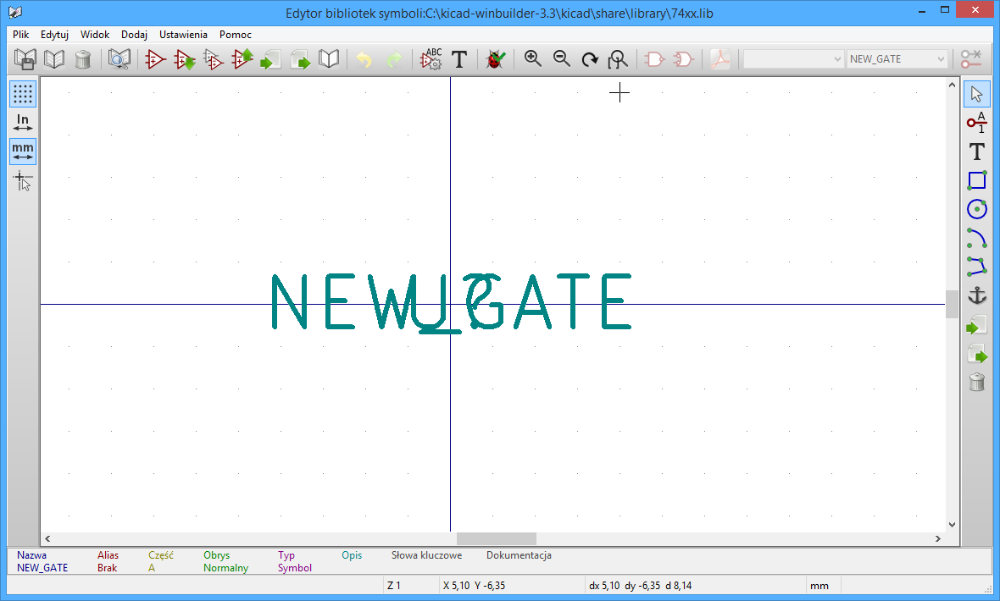
Tworzenie nowego symbolu na podstawie innego
Je¶li nowy symbol bardzo przypomina inny symbol, czê¶ciej korzystniej jest za³adowaæ ten inny symbol i go zmodyfikowaæ. Aby to zrobiæ nale¿y:
- Za³adowaæ symbol który bêdzie u¿yty jako wzorcowy.
- Klikn±æ polecenie
 lub zmodyfikowaæ jego nazwê (klikaj±c prawym klawiszem na nazwie i poddaæ edycji tekst pola Warto¶æ).
lub zmodyfikowaæ jego nazwê (klikaj±c prawym klawiszem na nazwie i poddaæ edycji tekst pola Warto¶æ). - U¿ytkownik zostanie poproszony o nazwê nowego symbolu.
- Je¶li symbol wzorcowy posiada³ aliasy, u¿ytkownik zostanie poproszony o ich usuniêcie z nowego symbolu, gdy¿ pozostawienie ich spowoduje konflikt. Je¶li podczas tego pytania odpowiemy "Nie", tworzenie nowego symbolu zostanie zaniechane.
- Zmodyfikowaæ nazwê symbolu.
- Wykonaæ niezbêdne edycje.
- Zapisaæ symbol w za³adowanej bibliotece poprzez lub zapisaæ go do nowej biblioteki z pomoc± polecenia
 lub (je¶li chcemy zapisaæ nowy element do innej istniej±cej biblioteki) wybraæ inn± bibliotekê i zapisaæ nowy symbol.
lub (je¶li chcemy zapisaæ nowy element do innej istniej±cej biblioteki) wybraæ inn± bibliotekê i zapisaæ nowy symbol. - Zapisaæ bibliotekê na dysk poleceniem Zapisz bie¿±c± bibliotekê na dysk .
Edycja g³ównych w³a¶ciwo¶ci symboli
G³ówne w³a¶ciwo¶ci symboli to przede wszystkim:
- Liczba elementów w pakiecie.
- Obecno¶æ reprezentacji alternatywnej.
- Powi±zania z dokumentacj±.
- Aktualizacja ró¿nych pól.
Te cechy powinny byæ ustalone poprawnie, poniewa¿ s± one wymagane podczas tworzenia symboli lub mog± pochodziæ z symbolu wzorcowego (przy tworzeniu symboli na podstawie innych symboli) i nie musz± byæ z nim zgodne.
Zatem, je¶li w jakikolwiek sposób s± one modyfikowane, konieczne jest wywo³anie polecenia  edycji w³a¶ciwo¶ci symbolu. Wywo³a to okno dialogowe które wygl±da w ten sposób:
edycji w³a¶ciwo¶ci symbolu. Wywo³a to okno dialogowe które wygl±da w ten sposób:

Najwa¿niejsze opcje, które okre¶laj± ogólne w³a¶ciwo¶ci to:
- Liczba czê¶ci sk³adowych okre¶laj±ca liczbê elementów w pakiecie.
- Posiada alternatywny styl symbolu (DeMorgan): zaznaczone, je¶li sk³adnik ma podwójn± reprezentacjê.
Wa¿ne jest, aby te dwa parametry by³y ustawione prawid³owo, poniewa¿ gdy s± tworzone i edytowane wyprowadzenia, odpowiednie piny wszystkich czê¶ci s± publikowane lub tworzone razem.
Je¶li liczba czê¶ci po utworzeniu pinu/edycji zostanie zwiêkszona, trzeba bêdzie wykonaæ kilka dodatkowych modyfikacji wynikaj±cych z tej zmiany. Niemniej jednak istnieje mo¿liwo¶æ modyfikacji tych parametrów w ka¿dej chwili.
Opcje grafiki:
- Poka¿ numer pinu
- Poka¿ nazwê pinu
definiuj± widoczno¶æ numeru pinu i jego nazwy (teksty te bêd± dostêpne, je¶li odpowiednie opcje s± aktywne).
Opcja Umie¶æ nazwê pinu wewn±trz okre¶la po³o¿enie nazwy pinu: tekst ten bêdzie wy¶wietlany wewn±trz konturu elementu, je¶li opcja ta jest aktywna.
W tym przypadku parametr Przesuniêcie pozycji tekstu w opisie pinu okre¶la przesuniêcie tekstu w kierunku wnêtrza konturu. Warto¶ci od 30 do 40 (w jednostkach 1/1000 cala) s± rozs±dnymi warto¶ciami.
Poni¿szy przyk³ad pokazuje symbol, w którym opcja Umie¶æ nazwê pinu wewn±trz zosta³a odznaczona (nale¿y zwróciæ uwagê na po³o¿enie nazw i numerów pinów):

Edycja symboli wieloczê¶ciowych
Podczas edycji sk³adników symboli w przypadku gdy symbol posiada wiêcej czê¶ci sk³adowych lub podwójn± reprezentacjê, zachodzi potrzeba wyboru czê¶ci sk³adowych lub innej reprezentacji takiego symbolu.
Aby wybraæ jedn± z alternatywnych reprezentacji nale¿y klikn±æ w jedn± z ikon  .
.
Aby wybraæ jeden z elementów sk³adowych nale¿y u¿yæ rozwijanej listy na pasku narzêdzi:
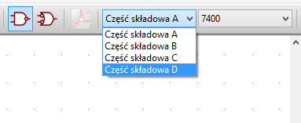
Tworzenie postaci graficznej symbolu
Pasek narzêdzi znajduj±cy siê po prawej stronie pozwala na stworzenie graficznej postaci symbolu:
 |
Aby narysowaæ graficzn± postaæ symbolu mo¿na u¿yæ nastêpuj±cych elementów graficznych:
|
Piny jak i pola (warto¶æ, oznaczenie) s± traktowane w inny sposób, poniewa¿ nie s± one elementami czysto graficznymi.
Elementy graficzne symbolu
Ka¿dy element graficzny mo¿e byæ zdefiniowany jako zwyczajny lub specyficzny, w zale¿no¶ci od typu reprezentacji (normalna lub skonwertowana) czy ilo¶ci czê¶ci sk³adowych.
Podrêczne menu z opcjami jest dostêpne przez klikniêcie prawym przyciskiem na dany element (w tym wypadku linia):
Mo¿na tak¿e klikn±æ dwukrotnie na dany element aby wywo³aæ okno z jego w³a¶ciwo¶ciami:
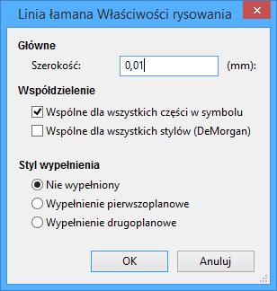
Normalnie opcje g³ówne elementów graficznych maj± postaæ:
- Wspólne dla wszystkich czê¶ci w symbolu jest zaznaczone, poniewa¿ na ogó³ ró¿ne czê¶ci komponentu maj± takie same reprezentacje graficzne i wystarczaj±ce jest narysowanie jednej czê¶ci sk³adowej.
- Wspólne dla wszystkich stylów (DeMorgan) jest odznaczone, poniewa¿ podwójna reprezentacja zosta³a wprowadzona, aby móc wybraæ inn± reprezentacjê dla ka¿dego rodzaju reprezentacji.
Wtedy bêdzie konieczne sporz±dzenie ka¿dej reprezentacji graficznej.
Mo¿na sprawê wielu czê¶ci sk³adowych potraktowaæ w ten sposób (na szczê¶cie rzadko), projektuj±c ich ró¿ne typy graficzne, poprzez zaznaczenie opcji Czê¶ci szczegó³owe. Ka¿da czê¶æ bêdzie musia³a byæ wtedy narysowana osobno, a je¶li opcja Specyficzne dla reprezentacji bêdzie zaznaczona, dla ka¿dej czê¶ci trzeba bêdzie narysowaæ równie¿ dwie reprezentacje. Wreszcie, interesuj±ce mo¿e byæ zaznaczenie opcji Wspólna dla reprezentacji dla elementów narysowanych z uwzglêdnieniem standardów IEEE, poniewa¿ w³a¶ciwe grafiki s± identyczne w reprezentacji normalnej i skonwertowanej.
Dla elementów typu wielok±t (linie ³amane) opcje Styl wype³nienia pozwalaj± tak¿e na wygenerowanie wype³nionego wielok±ta.
Elementy geometryczne w symbolach
Tworzenie elementów geometrycznych jest mo¿liwe dziêki narzêdziom do rysowania:
- Linie i wielok±ty, proste lub wype³nione je¶li odpowiednie opcje s± zaznaczone.
- Prostok±ty definiowane za pomoc± dwóch punktów po przek±tnej.
- Okrêgi definiowane poprzez punkt ¶rodkowy i promieñ.
- £uki definiowane za pomoc± punktów pocz±tkowych i koñcowych oraz punktu centralnego. £uki zawsze sk³adaj± siê z pó³okrêgu (od 0 do 180st.).
Tekst jako grafika w symbolu
 Pozwala na tworzenie tekstów (tekst swobodny). Taki tekst jest zawsze wy¶wietlany poprawnie, nawet je¶li symbol zostanie odwrócony.
Pozwala na tworzenie tekstów (tekst swobodny). Taki tekst jest zawsze wy¶wietlany poprawnie, nawet je¶li symbol zostanie odwrócony.
Ustalanie punktu zaczepienia symbolu
Punkt zaczepienia elementu wyznacza punkt zerowy uk³adu wspó³rzêdnych w edytorze bibliotek oraz punkt za który element bêdzie przeci±gany podczas wstawiania go do schematu. Obrót lub odbicie lustrzane jest równie¿ wykonywane w stosunku do tego punktu zaczepienia, a podczas wstawiania, punkt ten jest u¿ywany jako punkt odniesienia. Zalecane jest zatem ustalenie jego pozycji do¶æ dok³adnie.
Punkt zaczepienia jest wy¶wietlany jako dwie skrzy¿owane niebieskie linie:
Punkt zaczepienia mo¿e zostaæ przemieszczony poprzez wybranie narzêdzia  , po czym nale¿y klikn±æ w miejscu nowego punktu zaczepienia. Rysunek zostanie automatycznie wycentrowany ponownie wokó³ nowego punku zaczepienia.
, po czym nale¿y klikn±æ w miejscu nowego punktu zaczepienia. Rysunek zostanie automatycznie wycentrowany ponownie wokó³ nowego punku zaczepienia.
Tworzenie i edycja wyprowadzeñ (pinów)
Aby utworzyæ pin nale¿y klikn±æ w polecenie Dodaj wyprowadzenie  . Otworzy siê okno dialogowe z opcjami, których dok³adniejszy opis bêdzie przedstawiony pó¼niej.
. Otworzy siê okno dialogowe z opcjami, których dok³adniejszy opis bêdzie przedstawiony pó¼niej.
Aby dokonaæ prostych edycji wyprowadzeñ najlepiej jest klikn±æ dwukrotnie na wybranym wyprowadzeniu. Mo¿na tak¿e skorzystaæ z menu podrêcznego wywo³ywanego przez klikniêcie prawym klawiszem:
Piny musz± byæ tworzone starannie, poniewa¿ ka¿dy b³±d bêdzie mieæ wp³yw na projekt PCB, lub funkcja funkcja sprawdzania poprawno¶ci elektrycznej schematu ERC bêdzie dzia³aæ nieefektywnie.
Ka¿dy dodany ju¿ pin mo¿na ponownie edytowaæ, usun±æ, obróciæ lub przenie¶æ. Naj³atwiej jest to robiæ w wykorzystaniem skrótów klawiszowych.
Wyprowadzenia - Informacje podstawowe
Pin jest zdefiniowany przez swoj± formê (d³ugo¶æ, postaæ graficzn±), jego nazwê i "liczbê", która nie zawsze jest liczb± (piny w obudowach PGA/BGA s± definiowane za pomoc± liter i liczb, jak na przyk³ad : A12 czy AB45).
W Eeschema, "numer pinu" jest definiowany za pomoc± zestawu 4 liter lub cyfr, tak¿e mieszanych.
Dla narzêdzia kontroli ERC, musi zostaæ definiowany typ "elektryczny" ka¿dego wyprowadzenia (wej¶cie, wyj¶cie, trój-stanowy...). Je¶li typ nie bêdzie dobrze zdefiniowany, kontrola ERC bêdzie nieefektywna.
Uwaga:
Nie nale¿y wstawiaæ znaków spacji w nazwach pinów i ich numeracji. Wstawienie spacji w nazwie spowoduje, ¿e zostanie ona automatycznie zast±piona przez znak dolnej kreski "_".
Nazwa pinu z sygna³em zanegowanym rozpoczyna siê od znaku tyldy "~". Wtedy nad tekstem zostanie dorysowana pozioma kreska. Znak ten dzia³a jak prze³±cznik, zatem mo¿liwe jest równie¿ stosowanie go tylko dla wybranego fragmentu nazwy, np. PA0/~INT0~/PCI0 (zanegowany bêdzie tylko INT0).
Je¶li nie ma nazwy pinu to w pole nazwa nale¿y wstawiæ jeden znak tyldy.
Nazwy pinów rozpoczynaj±ce siê od znaku hash "#", s± zarezerwowane dla symboli zasilania.
Numery pinów mog± sk³adaæ siê z maksymalnie czterech liter lub liczb (równie¿ mieszane) 1, 2, ... 9999 to prawid³owe nazwy, ale prawid³owymi nazwami bêd± A1, B3 (standardowa notacja w uk³adach PGA/BGA), lub Anod, Gnd, Wine.
Symbole wieloczê¶ciowe, podwójna reprezentacja symboli
Przypomnijmy, ¿e szczególnie w przypadku bramek logicznych, symbol mo¿e mieæ dwie reprezentacje (znane jako "DeMorgan", a i taki uk³ad scalony mo¿e zawieraæ kilka czê¶ci, np. kilka bramek NOR). Dla niektórych uk³adów scalonych, mo¿e byæ zatem potrzebne kilka ró¿nych elementów graficznych i wyprowadzeñ.
Na przyk³ad przeka¼nik mo¿e byæ reprezentowane przez trzy ró¿ne elementy:
- Cewka
- Pierwszy zestyk
- Drugi zestyk
Zarz±dzanie wieloczê¶ciowymi uk³adami scalonymi i komponentami z podwójn± reprezentacj± jest elastyczne. Rzeczywi¶cie, pin mo¿e byæ:
- Wspólny lub specyficzny dla ró¿nych czê¶ci.
- Wspólny dla obu reprezentacji lub specyficzny dla ka¿dej reprezentacji z osobna.
Domy¶lnie, piny s± specyficzne dla ka¿dej reprezentacji ka¿dej czê¶ci, poniewa¿ ich liczba ró¿ni siê dla ka¿dej czê¶ci, a ich konstrukcja jest inna dla ka¿dej reprezentacji.
Gdy pin jest wspólny wystarczy wyprowadziæ go tylko raz (np. w przypadku pinów zasilania).
Równie¿ w przypadku projektu, który jest prawie zawsze identyczny dla ka¿dej czê¶ci (ale ró¿ni siê pomiêdzy normaln± a skonwertowan± reprezentacj±).
Przyk³ad elementu posiadaj±cego kilka czê¶ci z ró¿n± reprezentacj± graficzn±
Jest to przypadek przeka¼nika mechanicznego, który posiada dwa zestawy styków oraz cewkê (trzy ró¿ne czê¶ci).
Piny nie s± powi±zane.
Mo¿na dodawaæ lub edytowaæ piny dla ka¿dej czê¶ci, bez wp³ywu na wyprowadzenia w innych czê¶ciach.
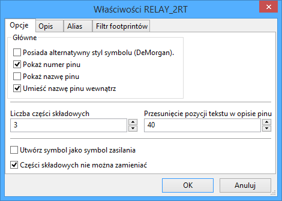
Czê¶ci s± zablokowane.
Eeschema nie mo¿e zmieniaæ elementów sk³adowych podczas numeracji schematu.
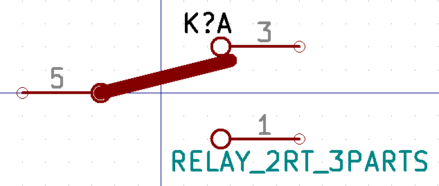
Czê¶æ A. Pierwszy zestyk prze³±czny.
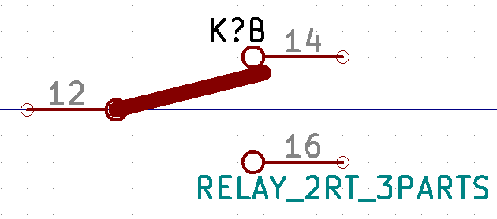
Czê¶æ B. Drugi zestyk prze³±czny.
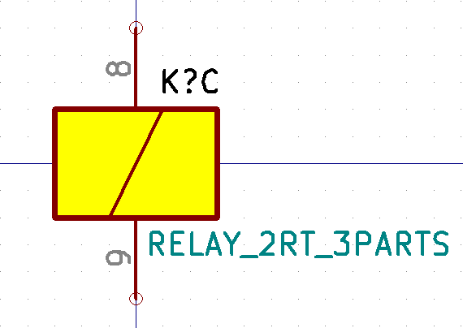
Czê¶æ C. Cewka.
Nie posiada ona takiego samego kszta³tu jak reszta czê¶ci sk³adowych.
Poniewa¿ element RELAY_2RT_3PARTS posiada trzy ró¿ne czê¶ci sk³adowe, z czego jedna posiada inn± reprezentacjê graficzn±, równie¿ elementom graficznym nadano odpowiednie w³a¶ciwo¶ci, by nie pokazywa³y siê w innych czê¶ciach:
We w³a¶ciwo¶ciach poszczególnych elementów graficznych zosta³a odznaczona opcja Wspólne dla wszystkich czê¶ci w komponencie.
Wyprowadzenia - Opcje podstawowe
Symbole z wieloma czê¶ciami i/lub reprezentacjami stanowi± szczególny problem dla tworzenia pinów i ich edycji.
O ile wiêkszo¶æ z pinów jest specyficzna dla ka¿dej czê¶ci (bo ich numer pinu jest specyficzny dla ka¿dej czê¶ci) i do ka¿dej reprezentacji (bo ich forma jest specyficzna dla ka¿dej z reprezentacji), tworzenie i edycja pinów by³aby prawdopodobnie d³uga i mêcz±ca.
W rzeczywisto¶ci, Eeschema umo¿liwia jednoczesne obs³ugiwanie pinów:
Domy¶lnie, dla symboli z wieloma czê¶ciami i/lub reprezentacj± podwójn±, zmiany te s± wykonywane dla wszystkich pinów odpowiadaj±cych czê¶ciom i reprezentacjom podczas tworzenia, edycji (z wyj±tkiem formy i numeracji), usuwania lub przenoszenia pinu, (tj. dla wszystkich pinów umieszczonych w tej samej lokacji).
W przypadku projektu, dokonane zmiany w bie¿±cej reprezentacji, s± wykonywane dla wszystkich czê¶ci.
Numery pinów s± modyfikowane dla bie¿±cego elementu, dla dwóch reprezentacji.
Nazwy s± modyfikowane niezale¿nie od siebie.
Zale¿no¶æ ta powsta³a by umo¿liwiæ szybkie zmiany dla wiêkszo¶ci przypadków.
Zale¿no¶æ t± podczas modyfikacji mo¿na wy³±czyæ z poziomu menu Opcje, pozwalaj±c na tworzenie cech symboli z wieloma czê¶ciami i podwójn± reprezentacj± ca³kowicie niezale¿nie.
Opcja ta jest zarz±dzana równie¿ z poziomu paska narzêdzi:
Je¶li prze³±cznik  nie jest aktywny (nie pod¶wietlony): edycja jest stosowana do wszystkich czê¶ci sk³adowych i wszystkich reprezentacji. Jest to opcja domy¶lna.
nie jest aktywny (nie pod¶wietlony): edycja jest stosowana do wszystkich czê¶ci sk³adowych i wszystkich reprezentacji. Jest to opcja domy¶lna.
Je¶li prze³±cznik  jest aktywny (pod¶wietlony): edycja jest stosowana tylko dla bie¿±cej czê¶ci i w bie¿±cej reprezentacji (czyli tylko w tej czê¶ci widocznej na ekranie). Ta opcja jest rzadziej u¿ywana.
jest aktywny (pod¶wietlony): edycja jest stosowana tylko dla bie¿±cej czê¶ci i w bie¿±cej reprezentacji (czyli tylko w tej czê¶ci widocznej na ekranie). Ta opcja jest rzadziej u¿ywana.
Wyprowadzenia - Okre¶lanie w³a¶ciwo¶ci
Okno z w³a¶ciwo¶ciami pinu pozwala na zmiany charakterystycznych cech wyprowadzeñ.
Okno to ukazuje siê zawsze podczas tworzenia nowego pinu, albo gdy w pin zostanie klikniêty dwukrotnie mysz±. Jego zawarto¶æ pozwala na zdefiniowanie lub modyfikacjê parametrów takich jak:
- Nazwa oraz rozmiar nazwy pinu.
- Numer oraz rozmiar numeru pinu.
- D³ugo¶æ pinu (jego postaæ graficzna).
- Typ elektryczny i formê jego prezentacji.
- Jego przynale¿no¶æ (wspólny lub normalny, w reprezentacji DeMorgan czy te¿ nie)
- Widoczno¶æ pinu (u¿ywana przy pinach zasilania).
Pamiêtajmy:
Nazwa pinu rozpoczynaj±ca siê od znaku tyldy "~" oznacza negacjê nazwy (kreska nad nazw±).
Przy nazwie sk³adaj±cej siê wy³±cznie ze znaku tyldy, oznacza to, ¿e pin nie posiada nazwy i nie jest ona wy¶wietlana. Przydatne w elementach pasywnych.
Numer pinu sk³ada siê z 1 do 4 znaków (cyfry lub litery, albo ³±czone). Zatem 1, 2, ... 9999 to nazwy poprawne, ale te¿ A1, B3 (standardowa notacja w uk³adach PGA/BGA), lub Anod, Gnd, Wine.
Kszta³ty wyprowadzeñ
Na poni¿szym rysunku w jednym elemencie zastosowano wszystkie rodzaje kszta³tów wyprowadzeñ:
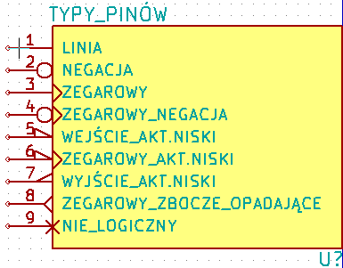
Wybór formy ma wy³±cznie znaczenie graficzne i nie ma ¿adnego znaczenia dla narzêdzia ERC jak i dla funkcji zwi±zanych z tworzeniem list sieci.
Typy elektryczne
Wybór elektrycznego typu pinu jest wysoce istotny z punktu widzenia kontroli poprawno¶ci schematu ERC.
Zazwyczaj bêdzie to wybór pomiêdzy Wej¶ciem a Wyj¶ciem w przypadku uk³adów scalonych. Jednak¿e dostêpne s± tak¿e inne typy:
- Typ dwukierunkowy oznacza, ¿e pin mo¿e byæ zarówno wej¶ciem jak i wyj¶ciem (jak w wspó³czesnych mikroprocesorach czy uk³adach FPGA).
- Typ trój-stanowy oznacza, ¿e pin mo¿e przechodziæ jako wyj¶cie w trzeci stan logiczny Z (wysoka impedancja).
- Typ Pasywny u¿ywany jest dla elementów pasywnych takich jak wyprowadzenia rezystorów, z³±cz itp.
- Typ Niezdefiniowany mo¿e byæ u¿ywany gdy testowanie poprawno¶ci ERC nie ma zwracaæ uwagi na ten pin.
- Typ Wej¶cie zasilania jest u¿ywany dla pinów zasilania znajduj±cych siê w symbolu.
- Typ Wyj¶cie zasilania jest przeznaczony dla wyj¶æ regulatorów napiêæ jako ¼ród³o napiêcia.
W szczególno¶ci, je¶li pin jest portem zasilania (Wej¶cie zasilania lub Wyj¶cie zasilania, i jest zadeklarowany jako "Niewidoczny", nie jest on wy¶wietlany na schemacie, i jest automatycznie pod³±czony do pozosta³ych pinów tego samego rodzaju i tej samej nazwie (tzw. Niewidoczne piny zasilania) - Dodatkowo mo¿na u¿ywaæ typów Otwarty Emiter lub Otwarty kolektor. Rzadko spotykane opcje.
Wyprowadzenia - Zmiany globalne
W przypadku wielokrotnych zmian jednego typu z parametrów : rozmiar pinu, rozmiar jego nazwy, czy numeru pinu, mo¿na u¿yæ menu podrêcznego, a w nim opcji zgrupowanych pod poleceniem Globalne. Za pomoc± tych opcji mo¿na jedn± z tych cech skopiowaæ do innych pinów na podstawie pinu wskazywanego w danej chwili.
Je¶li zatem w elemencie istniej± piny o ró¿nych d³ugo¶ciach, a chcieliby¶my to ujednoliciæ, to zamiast kolejno zmieniaæ w³a¶ciwo¶ci pinów, mo¿na wybraæ jeden z pinów wzorcowych i wybraæ Rozmiar pinu dla innych, co spowoduje, ¿e reszta pinów te¿ bêdzie mia³a tak± sam± d³ugo¶æ.
Wyprowadzenia - Symbole wieloczê¶ciowe i podwójna reprezentacja
Ró¿ne czê¶ci lub reprezentacje (takie jak spotyka siê w uk³adach 7400, 7402 ...) mog± potrzebowaæ pewnych uzupe³nieñ. Takie uzupe³nianie bêdzie znacznie ograniczone w przypadku zachowania nastêpuj±cych ¶rodków ostro¿no¶ci:
- G³ówna opcja Edytuj piny element po elemencie
 musi pozostaæ odznaczona.
musi pozostaæ odznaczona. - Piny zasilania zostan± utworzone z aktywnymi atrybutami Wspólne dla wszystkich czê¶ci w symbolu i Wspólne dla wszystkich stylów (DeMorgan) (mog± byæ równie¿ niewidoczne (odznaczone pole Widoczny)).
Poprawne ustawienia wygl±daj± tak jak na poni¿szym obrazku:
Gdy piny zostan± utworzone, bêd± utworzone dla ka¿dego elementu i ka¿dej reprezentacji.
Na przyk³ad wyj¶cie bramki A w uk³adzie 7400 zostanie utworzone przez Eeschema w 8 próbkach: 2 na czê¶æ (s± 4 czê¶ci A, B, C, D i dla ka¿dej czê¶ci, reprezentacja normalna i De Morgan).
Jednak¿e bêdzie trzeba na pocz±tku, prawdopodobnie poprawnie stworzyæ czê¶æ A w normalnej reprezentacji. Z tego wynika, ¿e dla ka¿dej czê¶ci bêdzie konieczne:
- Wybranie reprezentacji skonwertowanej i dokonanie edycji formy i d³ugo¶ci ka¿dego z pinów.
- W przypadku pozosta³ych czê¶ci, dokonanie edycji numerów pinów.
Edycja pól
Dla pól ju¿ istniej±cych mo¿na u¿yæ poleceñ szybkiej edycji dostêpnej z menu podrêcznego wywo³ywanego prawym klawiszem myszy:
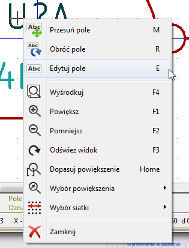
Dla pe³nej edycji pól bêdzie niezbêdne u¿ycie narzêdzia do edycji tych pól, ukrywaj±cego siê pod ikon±:  .
.
Okno jakie zostanie wtedy otwarte bêdzie wygl±daæ podobnie do tego znajduj±cego siê poni¿ej:
Na przedstawionym rysunku aktywne jest pole Oznaczenie i to jego dotycz± parametry znajduj±ce siê po prawej stronie.
Pola to teksty przypisane do symbolu, ale nie nale¿y ich myliæ z tekstem graficznym jaki mo¿e zostaæ umieszczony w graficznej reprezentacji symbolu.
Dostêpne s± nastêpuj±ce pola:
- Warto¶æ
- Oznaczenie
- Nazwa przypisanego modu³u (Footprint dla PCB)
- £±cze do pliku z dokumentacj± (przeznaczone g³ównie dla schematów).
- Pola u¿ytkownika Pole1 do Pole8 lub dalsze (jako komentarze)
Pola Warto¶æ i Oznaczenie s± definiowane podczas tworzenia symbolu i mog± byæ tutaj modyfikowane.
Jest mo¿liwo¶æ u¿ycia pola Obudowa jako nazwy zawieraj±cej nazwê modu³u przypisanego do symbolu by móc bezpo¶rednio generowaæ kompletne pliki list sieci (z wstêpnie okre¶lonymi modu³ami dla PCB). Pole Obudowa powi±zane ze schematem jest szczególnie u¿yteczne w przypadku innych programów ECAD.
Pola 1 do 8 i dalsze nie s± naprawdê przeznaczone do wykorzystania w bibliotece, poniewa¿ s± one raczej stosowane przy tworzeniu projektu schematu. Mo¿na im tutaj zmieniæ nazwê.
Dla biblioteki, edycja pól Warto¶æ i Oznaczenie umo¿liwia okre¶lenie wielko¶ci i po³o¿enia.
Wa¿ne:
Modyfikacja tekstu w polu Warto¶æ, równa siê utworzeniu nowego symbolu na podstawie starego, s³u¿±cego wtedy za wzór, gdy¿ symbol po zapisaniu go w bibliotece ma nazwê tak± jak zawarta w polu Warto¶æ.
Aby edytowaæ niewidoczne pole (tzn. puste, bo nawet je¶li pole ma atrybut Niewidoczny, jest ono wy¶wietlane w LibEdit) trzeba bêdzie skorzystaæ z okna edycji przedstawionego powy¿ej.
Tworzenie symboli zasilania
Symbole portów zasilania s± tworzone tak jak zwyk³e symbole.
Mo¿e byæ to przydatne w celu zebrania ich w specjalnej bibliotece takiej jak power.lib.
Zawieraj± siê one w swoim symbolu graficznym (¿±danej postaci) i w pinie o typie Niewidoczne ¼ród³o zasilania. Bêd± one zatem traktowane jak ka¿dy inny symbol przeznaczony dla oprogramowania do tworzenia schematów elektronicznych. Jednak¿e, pewne ¶rodki ostro¿no¶ci s± dalej niezbêdne.
Poni¿ej mamy symbol zasilania (zasilanie +12V):
Na symbol taki sk³adaj± siê:
- Wyprowadzenie typu Niewidoczne ¼ród³o zasilania nazwane
+12V(wa¿ne, gdy¿ za pomoc± tej nazwy bêdzie mo¿liwe nawi±zanie po³±czenia do sieci+12V), z numerem pinu 1 (numer nie jest jednak wa¿ny) oraz z d³ugo¶ci± pinu równ± zero. - Kszta³t to Linia, oczywi¶cie z zadeklarowanym typem Zasilanie oraz z atrybutem Niewidoczny.
- Postaæ graficzna : tu jest to ma³y okr±g i krótki segment linii prowadz±cy od pinu do okrêgu.
- Punkt aktywny symbolu jest w miejscu pinu.
- Warto¶æ to
+12Vtak samo jak nazwa pinu, i s³u¿y do wy¶wietlania warto¶ci tego symbolu (pin nie bêdzie widoczny, zatem jego nazwa by siê nie pojawi³a). - Oznaczenie to
#PWR?. Oznaczenie to nie ma wiêkszego znaczenia poza pierwszym znakiem, który musi byæ znakiem kratki "#". Zgodnie z przyjêt± konwencj±, ka¿dy element, którego odniesienia rozpoczynaj± siê tym znakiem nie pojawi± siê ani na li¶cie sk³adników, ani w li¶cie sieci. Co wiêcej, opcjach symbolu, odniesienie jest zadeklarowane jako niewidoczne.
Tworzenie nowych symboli zasilania jest znacznie prostsze gdy zostanie ono wykonane na podstawie innego symbolu tego typu.
Zatem najpro¶ciej jest:
- Za³adowaæ wzorzec (inny symbol zasilania).
- Dokonaæ zmiany nazwy pinu (która zostanie nazw± nowego portu zasilania).
- Dokonaæ zmiany pola Warto¶æ (taka sama jak nazwa pinu, je¶li chcemy by warto¶æ odpowiadaj±ca temu portowi by³a wy¶wietlana.).
- Zapisanie nowego symbolu.
12. Edytor bibliotek LibEdit - Dodatkowe mo¿liwo¶ci
Wprowadzenie
Symbol sk³ada siê z kilku elementów:
- Jego postaci graficznej (kszta³ty geometryczne, teksty).
- Wyprowadzenia (piny).
- Pola lub teksty powi±zane, wykorzystywane przez post-procesory: tworz±ce listy sieci, listy materia³owe...
W tym rozdziale skupimy siê na ostatniej pozycji, gdy¿ umiejêtne zarz±dzanie narzêdziami dodatkowymi zwi±zanymi z symbolami u³atwia przeszukiwanie, obs³ugê i konserwacjê bibliotek.
Dwa pola s± inicjowane zawsze: Oznaczenie i Warto¶æ. Nazwa projektu powi±zana ze sk³adnikiem, nazwa powi±zanego z nim modu³u, albo inne pola pozosta³e s± dowolne i mog± pozostaæ ogólnie puste, albo mog± byæ wype³nione podczas rysowania schematu.
Powi±zana dokumentacja zawiera m.in.:
- Liniê komentarza.
- Liniê ze s³owami kluczowymi takimi jak np.:
TTL CMOS NAND2., oddzielonymi spacjami
Liniê z nazw± pliku zewnêtrznej dokumentacji (np. notê aplikacyjn±, notê katalogow±.). Domy¶lnie pliki te s± wyszukiwane w nastêpuj±cych katalogach:
kicad/share/library/dockicad/library/doc.
w systemie Linux tak¿e w:
/usr/local/kicad/share/library/doc/usr/share/kicad/library/doc/usr/local/share/kicad/library/doc
S³owa kluczowe pozwalaj± na selektywne wyszukiwanie symboli wed³ug ró¿nych kryteriów wyboru.
Komentarze i s³owa kluczowe s± wy¶wietlane w ró¿nych miejscach, szczególnie jednak po wybraniu elementu w bibliotece.
Element posiada równie¿ aliasy, czyli nazwy alternatywne. Pozwala to na znaczne zmniejszenie liczby elementów sk³adowych bibliotek, które musz± byæ tworzone (np. 74LS00 mo¿e posiadaæ aliasy takie jak 7400, 74HC00, 74HCT00 ...).
Wreszcie, symbole s± zwykle umieszczane w kilku bibliotekach (klasyfikowanych wed³ug tematów, lub producentów...), w celu u³atwienia zarz±dzania nimi.
Aliasy
Alias jest nazw± alternatywn± odpowiadaj±c± temu samego symbolowi w bibliotece.
Symbole o podobnym rozk³adzie pinów i podobnej reprezentacji mog± byæ reprezentowane tylko przez jeden symbol o kilku aliasach (np.: 74LS00 mo¿e posiadaæ aliasy takie jak 7400, 74HC00, 74HCT00). Korzystanie z aliasów pozwala na tworzenie kompletnych bibliotek symboli znacznie szybciej. Oprócz tego biblioteki takie s± znacznie bardziej zwarte i s± ³adowane szybciej.
Aby zmodyfikowaæ listê aliasów, nale¿y wybraæ w g³ównym oknie edycji narzêdzie  i wybraæ zak³adkê Alias:
i wybraæ zak³adkê Alias:
Za pomoc± klawiszy obok listy mo¿na dodawaæ lub usuwaæ aliasy. Bie¿±cy alias nie mo¿e byæ oczywi¶cie zmieniony poniewa¿ jest edytowany.
By usun±æ wszystkie aliasy nale¿y najpierw wybraæ symbol g³ówny (pierwszy z listy aliasów na górnym pasku narzêdzi edytora bibliotek).
Pola specjalne
Edytor pól jest wywo³ywany za pomoc± ikony  .
.
Istniej± cztery specjalne pola (tekst przypisany do symbolu) oraz pola u¿ytkownika, które mo¿e dodawaæ za pomoc± poleceñ znajduj±cych siê pod tabel± zawarto¶ci pól.
Pola specjalne to:
- Oznaczenie.
- Warto¶æ: Jest to nazwa symbolu w bibliotece, oraz domy¶lna warto¶æ jaka zostanie umieszczona na schemacie.
- Footprint: nazwa modu³u u¿ywanego na PCB. Nie jest zbyt potrzebna je¶li u¿ywamy CvPcb do ustalania listy footprintów.
- Dokumentacja: zarezerwowane (tutaj nie u¿ywane).
Dokumentowanie symboli
Aby dokonaæ edycji opcji zwi±zanych z informacjami dokumentuj±cymi symboli, nale¿y wywo³aæ g³ówne okno w³a¶ciwo¶ci symbolu (narzêdzie  ) oraz prze³±czyæ siê na zak³adkê Opis.
) oraz prze³±czyæ siê na zak³adkê Opis.
Znajduj± siê tu trzy pola edycyjne w których mo¿na umie¶ciæ pewne podstawowe informacje o symbolu:
- Opis - tutaj mo¿na wpisaæ informacje okre¶laj±ce typ elementu, jego istotne parametry, itp.
- S³owa kluczowe - tu mo¿na wpisaæ s³owa, które mo¿na wykorzystaæ podczas wyszukiwania elementów w bibliotekach za pomoc± s³ów kluczowych,
- Nazwa pliku z dokumentacj± - tu mo¿na wpisaæ adres URL czy ¶cie¿kê lokaln± do pliku PDF skojarzonego z symbolem. Wype³nienie tego pola odblokuje przycisk
 za pomoc±, którego mo¿na wy¶wietliæ plik PDF z dokumentacj± symbolu.
za pomoc±, którego mo¿na wy¶wietliæ plik PDF z dokumentacj± symbolu.
Ostro¿nie:
Nale¿y pamiêtaæ, aby wybraæ odpowiedni alias lub symbol g³ówny, poniewa¿ opcje dokumentacyjne s± jedyn± cech±, któr± ró¿ni± siê poszczególne aliasy.
Polecenie Kopiuj pola z elem. nadrzêdnego pozwala na skopiowanie tych informacji z dokumentacji symbolu g³ównego do aktualnie edytowanego aliasu. Polecenie Przegl±daj pliki pozwala za¶ na otwarcie domy¶lnej lokalizacji plików PDF na lokalnym dysku i wybranie za pomoc± standardowego okna dialogowego pliku z dokumentacj±. Po wybraniu pliku ¶cie¿ka do niego zostanie wpisana w pole Nazwa pliku z dokumentacj±.
S³owa kluczowe
S³owa kluczowe pozwalaj± na wyszukiwanie symboli w sposób selektywny wed³ug okre¶lonych kryteriów wyboru (funkcja, rodzina, technologia, itp.). Wielko¶æ liter nie jest istotna, bo narzêdzie zawarte w Eeschema nie rozró¿nia wielko¶æ liter.
Najbardziej popularne s³owa kluczowe u¿yte w bibliotekach to:
CMOS TTLdla rodzin uk³adów logicznychAND2 NOR3 XOR2 INV. dla bramek (AND2= 2 wej¶ciowa bramka AND,NOR3= 3 wej¶ciowa bramka NOR).JKFF,DFF. dla przerzutników typu JK lub D.ADC,DAC,MUX. dla przetworników.OpenColdla bramek posiadaj±cych wyj¶cia typu otwarty kolektor.
Tak wiêc, je¶li w oprogramowaniu do edycji schematów bêdziemy szukaæ symboli za pomoc± s³ów kluczowych NAND2 OpenCol, Eeschema wy¶wietli listê symboli pasuj±cych do tych 2 s³ów kluczowych.
Dokumentacja symbolu
Linia oznaczenie (i s³owa kluczowe) jest wy¶wietlana w ró¿nych menu, w szczególno¶ci po wybraniu elementu na wy¶wietlonej li¶cie komponentów biblioteki i w menu ViewLib.
Linia Nazwa pliku z dokumentacj± wskazuje na dostêpny plik z dokumentacj± symbolu lub jego schematem aplikacyjnym. Mo¿e to byæ plik w formacie PDF (zwykle stosowany w takim przypadku) dostêpny lokalnie na dysku twardym, ale mo¿na stosowaæ równie¿ ¶cie¿ki URL by umo¿liwiæ dostêp do zasobów zdanych (np. na stronie WWW producenta).
Je¶li plik dokumentacji istnieje (jest wpisany w to pole), jest on równie¿ dostêpny z poziomu oprogramowania do tworzenia schematów w menu wy¶wietlanym przy klikniêciu prawym przyciskiem myszy na komponencie.
Filtrowanie modu³ów dla CvPcb
Za pomoc± listy znajduj±cej siê na zak³adce Filtr footprintów mo¿na okre¶liæ jakie modu³y by³by odpowiednie dla obecnie projektowanego symbolu. Listê t± wykorzystuje CvPcb by podczas przypisywania obudów mo¿na by³o odfiltrowaæ listê dostêpnych modu³ów tylko do tych najbardziej odpowiednich. Je¶li nie chcemy korzystaæ z tych mo¿liwo¶ci mo¿na albo opcjê filtracji w CvPcb wy³±czyæ, albo pozostawiæ t± listê pust±.
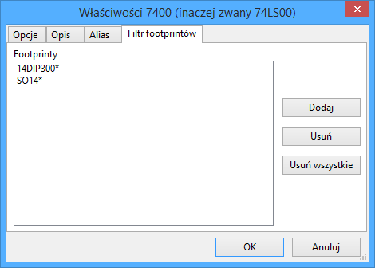
Na li¶cie mo¿na stosowaæ szeroko stosowane znaki maskuj±ce: * oraz ?. Przyk³adowo:
S014* pozwala CvPcb na wy¶wietlenie wszystkich modu³ów których nazwa rozpoczyna siê znakami SO14. Za¶ R? Pozwala na wy¶wietlenie tylko tych modu³ów, których nazwa bêdzie sk³adaæ siê z dwóch znaków, przy czym nazwa taka bêdzie musia³a siê rozpoczynaæ znakiem R.
Poni¿ej przedstawiono widok okna CvPcb z w³±czon± jak i wy³±czon± filtracj±:
| 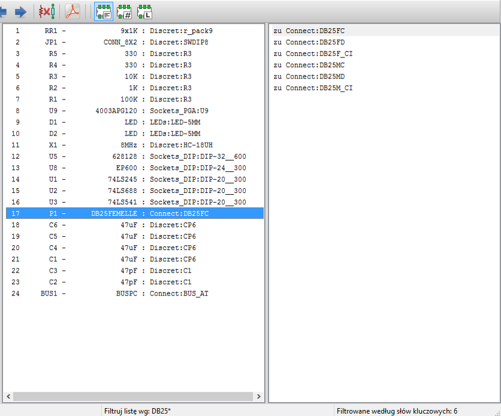 | Z filtrowaniem (DB25*) |
| 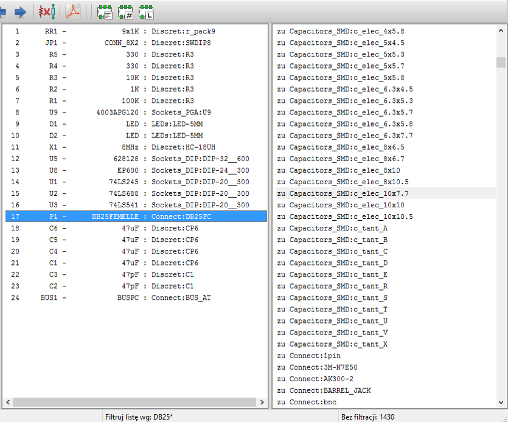 | Bez filtrowania |
Biblioteka wzorców
W ³atwy sposób mo¿na skompilowaæ podrêczn± biblioteczkê z rysunkami, zawieraj±c± czêsto u¿ywane grafiki. Mo¿na to wykorzystywaæ do tworzenia podstawowych komponentów sk³adowych symboli (np. trójk±ty, prostok±ty, kszta³ty bramek AND, OR, XOR...) w celu ich pó¼niejszego ponownego u¿ycia.
Pliki te s± przechowywane domy¶lnie w katalogu biblioteki jako poszczególne pliki z rozszerzeniem .sym Wzorce te nie s± zbierane w jednym pliku bibliotecznym jak symbole, poniewa¿ zazwyczaj nie s± zbyt liczne.
Eksport/Tworzenie wzorca
Symbol mo¿e byæ ³atwo wyeksportowany jako wzorzec graficzny za pomoc± narzêdzia eksportu  znajduj±cego siê na prawym pasku narzêdzi. Generalnie przy tworzeniu wzorców g³ównie chodzi o sam± grafikê, zatem dobrym pomys³em jest by przed eksportem, usun±æ istniej±ce piny.
znajduj±cego siê na prawym pasku narzêdzi. Generalnie przy tworzeniu wzorców g³ównie chodzi o sam± grafikê, zatem dobrym pomys³em jest by przed eksportem, usun±æ istniej±ce piny.
Importowanie wzorca
Podczas edycji symbolu mo¿na za pomoc± narzêdzia Importuj istniej±ce rysunki  dodaæ zapisany wcze¶niej wzorzec. Zaimportowana grafika zostanie dodana tak jakby zosta³a ona w³a¶nie narysowana.
dodaæ zapisany wcze¶niej wzorzec. Zaimportowana grafika zostanie dodana tak jakby zosta³a ona w³a¶nie narysowana.
13. Przegl±darka bibliotek ViewLib
Przeznaczenie
Przegl±darka bibliotek pozwala na szybkie sprawdzenie zawarto¶ci aktywnych bibliotek.
Przegl±darkê mo¿na wywo³aæ klikaj±c w ikonê  .
.
Ekran g³ówny

By sprawdziæ zawarto¶æ biblioteki nale¿y j± wybraæ z listy znajduj±cej siê po lewej stronie okna. Jej zawarto¶æ zostanie pokazana na drugiej li¶cie, z której mo¿na wybraæ jeden z elementów, którego podgl±d pojawi siê w panelu po prawej stronie.
Pasek narzêdzi przegl±darki bibliotek
Podstawowy pasek narzêdzi wygl±da w ten sposób:

Poszczególne polecenia to:
| Wybór przegl±danej biblioteki (który mo¿e byæ równie¿ zrealizowany poprzez wybór z listy). | |
| Wybór elementu z biblioteki (który mo¿e byæ równie¿ zrealizowany przez wybór z listy). | |
| Przej¶cie do poprzedniego elementu na li¶cie. | |
| Przej¶cie do nastêpnego elementu na li¶cie. | |
| Narzêdzia do dostosowywania powiêkszenia. | |
| Wybór reprezentacji elementu (normalny lub skonwertowany) je¶li takowy istnieje. | |
| Wybór czê¶ci sk³adowej elementu (w przypadku elementów wieloczê¶ciowych). | |
| Uruchamia zewnêtrzn± przegl±darkê z dokumentacj± elementu (je¶li zosta³a okre¶lona). |
14. Dostosowywanie list sieci oraz zestawieñ materia³owych (BOM)
Po¶rednia lista sieci
Lista materia³owa BOM i lista sieci mo¿e byæ skonwertowana z formatu po¶redniego tworzonego przez Eeschema. Plik ten jest zbudowany z tagów XML i nosi nazwê pliku po¶redniego listy sieci.
Poniewa¿ zawiera on jednak wiele danych na temat komponentów schematu, mo¿e byæ te¿ wykorzystywany do tworzenia list materia³owych BOM lub innych raportów - nie tylko list sieci.
W zale¿no¶ci od formatu wyj¶ciowego (BOM, nowe listy sieci), tylko niektóre sekcje tego pliku bêd± wykorzystywane.
Przyk³adowy schemat
Przyk³adowa po¶rednia lista sieci
Odpowiadaj±ca temu schematowi po¶rednia lista sieci (u¿ywaj±c sk³adni XML) wygl±da tak:
<?xml version="1.0" encoding="utf-8"?>
<export version="D">
<design>
<source>F:\kicad_aux\netlist_test\netlist_test.sch</source>
<date>29/08/2010 20:35:21</date>
<tool>eeschema (2010-08-28 BZR 2458)-unstable</tool>
</design>
<components>
<comp ref="P1">
<value>CONN_4</value>
<libsource lib="conn" part="CONN_4"/>
<sheetpath names="/" tstamps="/"/>
<tstamp>4C6E2141</tstamp>
</comp>
<comp ref="U2">
<value>74LS74</value>
<libsource lib="74xx" part="74LS74"/>
<sheetpath names="/" tstamps="/"/>
<tstamp>4C6E20BA</tstamp>
</comp>
<comp ref="U1">
<value>74LS04</value>
<libsource lib="74xx" part="74LS04"/>
<sheetpath names="/" tstamps="/"/>
<tstamp>4C6E20A6</tstamp>
</comp>
<comp ref="C1">
<value>CP</value>
<libsource lib="device" part="CP"/>
<sheetpath names="/" tstamps="/"/>
<tstamp>4C6E2094</tstamp>
</comp>
<comp ref="R1">
<value>R</value>
<libsource lib="device" part="R"/>
<sheetpath names="/" tstamps="/"/>
<tstamp>4C6E208A</tstamp>
</comp>
</components>
<libparts>
<libpart lib="device" part="C">
<description>Condensateur non polarise</description>
<footprints>
<fp>SM*</fp>
<fp>C?</fp>
<fp>C1-1</fp>
</footprints>
<fields>
<field name="Reference">C</field>
<field name="Value">C</field>
</fields>
<pins>
<pin num="1" name="~" type="passive"/>
<pin num="2" name="~" type="passive"/>
</pins>
</libpart>
<libpart lib="device" part="R">
<description>Resistance</description>
<footprints>
<fp>R?</fp>
<fp>SM0603</fp>
<fp>SM0805</fp>
<fp>R?-*</fp>
<fp>SM1206</fp>
</footprints>
<fields>
<field name="Reference">R</field>
<field name="Value">R</field>
</fields>
<pins>
<pin num="1" name="~" type="passive"/>
<pin num="2" name="~" type="passive"/>
</pins>
</libpart>
<libpart lib="conn" part="CONN_4">
<description>Symbole general de connecteur</description>
<fields>
<field name="Reference">P</field>
<field name="Value">CONN_4</field>
</fields>
<pins>
<pin num="1" name="P1" type="passive"/>
<pin num="2" name="P2" type="passive"/>
<pin num="3" name="P3" type="passive"/>
<pin num="4" name="P4" type="passive"/>
</pins>
</libpart>
<libpart lib="74xx" part="74LS04">
<description>Hex Inverseur</description>
<fields>
<field name="Reference">U</field>
<field name="Value">74LS04</field>
</fields>
<pins>
<pin num="1" name="~" type="input"/>
<pin num="2" name="~" type="output"/>
<pin num="3" name="~" type="input"/>
<pin num="4" name="~" type="output"/>
<pin num="5" name="~" type="input"/>
<pin num="6" name="~" type="output"/>
<pin num="7" name="GND" type="power_in"/>
<pin num="8" name="~" type="output"/>
<pin num="9" name="~" type="input"/>
<pin num="10" name="~" type="output"/>
<pin num="11" name="~" type="input"/>
<pin num="12" name="~" type="output"/>
<pin num="13" name="~" type="input"/>
<pin num="14" name="VCC" type="power_in"/>
</pins>
</libpart>
<libpart lib="74xx" part="74LS74">
<description>Dual D FlipFlop, Set & Reset</description>
<docs>74xx/74hc_hct74.pdf</docs>
<fields>
<field name="Reference">U</field>
<field name="Value">74LS74</field>
</fields>
<pins>
<pin num="1" name="Cd" type="input"/>
<pin num="2" name="D" type="input"/>
<pin num="3" name="Cp" type="input"/>
<pin num="4" name="Sd" type="input"/>
<pin num="5" name="Q" type="output"/>
<pin num="6" name="~Q" type="output"/>
<pin num="7" name="GND" type="power_in"/>
<pin num="8" name="~Q" type="output"/>
<pin num="9" name="Q" type="output"/>
<pin num="10" name="Sd" type="input"/>
<pin num="11" name="Cp" type="input"/>
<pin num="12" name="D" type="input"/>
<pin num="13" name="Cd" type="input"/>
<pin num="14" name="VCC" type="power_in"/>
</pins>
</libpart>
</libparts>
<libraries>
<library logical="device">
<uri>F:\kicad\share\library\device.lib</uri>
</library>
<library logical="conn">
<uri>F:\kicad\share\library\conn.lib</uri>
</library>
<library logical="74xx">
<uri>F:\kicad\share\library\74xx.lib</uri>
</library>
</libraries>
<nets>
<net code="1" name="GND">
<node ref="U1" pin="7"/>
<node ref="C1" pin="2"/>
<node ref="U2" pin="7"/>
<node ref="P1" pin="4"/>
</net>
<net code="2" name="VCC">
<node ref="R1" pin="1"/>
<node ref="U1" pin="14"/>
<node ref="U2" pin="4"/>
<node ref="U2" pin="1"/>
<node ref="U2" pin="14"/>
<node ref="P1" pin="1"/>
</net>
<net code="3" name="">
<node ref="U2" pin="6"/>
</net>
<net code="4" name="">
<node ref="U1" pin="2"/>
<node ref="U2" pin="3"/>
</net>
<net code="5" name="/SIG_OUT">
<node ref="P1" pin="2"/>
<node ref="U2" pin="5"/>
<node ref="U2" pin="2"/>
</net>
<net code="6" name="/CLOCK_IN">
<node ref="R1" pin="2"/>
<node ref="C1" pin="1"/>
<node ref="U1" pin="1"/>
<node ref="P1" pin="3"/>
</net>
</nets>
</export>Konwersja na nowy format
Poprzez zastosowanie filtra dla tego pliku po¶redniego z list± sieci, mo¿na wygenerowaæ listê sieci w wielu innych formatach oraz listê materia³ow± BOM.
Poniewa¿ jest to tylko transformacja jednej postaci tekstu na drug± postaæ, filtr ten mo¿na ³atwo napisaæ w jêzyku PYTHON lub XSLT.
XSLT sam w sobie jest jêzykiem XML przeznaczonym do definiowania transformacji dla XML. W przypadku u¿ycia XSLT, mo¿na u¿yæ programu xsltproc.exe do odczytu pliku XML z zastosowaniem przy tym arkuszu stylu (tzw. "filtr") i zapisaniu danych wynikowych. Dlatego u¿ytkownik musi wcze¶niej utworzyæ odpowiedni arkusz stylu pliku wyj¶ciowego u¿ywaj±c konwencji przyjêtych w XSLT.
Ca³y proces konwersji jest przejrzysty i obs³ugiwany przez Eeschema.
Jêzyk skryptowy XSLT
Dokumentacja XSL Transformations (XSLT) znajduje siê pod adresem http://www.w3.org/TR/xslt/
Przyk³ad tworzenia pliku z list± sieci PADS-PCB
Format ten posiada dwie sekcje pliku listy sieci:
- Listê footprint-ów
- Listê sieci (zgrupowane wyprowadzenia wed³ug sieci)
Poni¿ej znajduje siê przyk³ad arkusza stylów, na podstawie którego mo¿na skonwertowaæ plik po¶redni listy do jej odpowiednika w formacie akceptowanym przez PADS-PCB:
<?xml version="1.0" encoding="ISO-8859-1"?>
<!--XSL style sheet to EESCHEMA Generic Netlist Format to PADS netlist format
Copyright (C) 2010, SoftPLC Corporation.
GPL v2.
How to use:
https://lists.launchpad.net/kicad-developers/msg05157.html
-->
<!DOCTYPE xsl:stylesheet [
<!ENTITY nl "
"> <!--new line CR, LF -->
]>
<xsl:stylesheet version="1.0" xmlns:xsl="http://www.w3.org/1999/XSL/Transform">
<xsl:output method="text" omit-xml-declaration="yes" indent="no"/>
<xsl:template match="/export">
<xsl:text>*PADS-PCB*&nl;*PART*&nl;</xsl:text>
<xsl:apply-templates select="components/comp"/>
<xsl:text>&nl;*NET*&nl;</xsl:text>
<xsl:apply-templates select="nets/net"/>
<xsl:text>*END*&nl;</xsl:text>
</xsl:template>
<!-- for each component -->
<xsl:template match="comp">
<xsl:text> </xsl:text>
<xsl:value-of select="@ref"/>
<xsl:text> </xsl:text>
<xsl:choose>
<xsl:when test = "footprint != '' ">
<xsl:apply-templates select="footprint"/>
</xsl:when>
<xsl:otherwise>
<xsl:text>unknown</xsl:text>
</xsl:otherwise>
</xsl:choose>
<xsl:text>&nl;</xsl:text>
</xsl:template>
<!-- for each net -->
<xsl:template match="net">
<!-- nets are output only if there is more than one pin in net -->
<xsl:if test="count(node)>1">
<xsl:text>*SIGNAL* </xsl:text>
<xsl:choose>
<xsl:when test = "@name != '' ">
<xsl:value-of select="@name"/>
</xsl:when>
<xsl:otherwise>
<xsl:text>N-</xsl:text>
<xsl:value-of select="@code"/>
</xsl:otherwise>
</xsl:choose>
<xsl:text>&nl;</xsl:text>
<xsl:apply-templates select="node"/>
</xsl:if>
</xsl:template>
<!-- for each node -->
<xsl:template match="node">
<xsl:text> </xsl:text>
<xsl:value-of select="@ref"/>
<xsl:text>.</xsl:text>
<xsl:value-of select="@pin"/>
<xsl:text>&nl;</xsl:text>
</xsl:template>
</xsl:stylesheet>Finalny plik wyj¶ciowy po zastosowaniu tego arkusza jako filtra dla xsltproc:
*PADS-PCB*
*PART*
P1 unknown
U2 unknown
U1 unknown
C1 unknown
R1 unknown
*NET*
*SIGNAL* GND
U1.7
C1.2
U2.7
P1.4
*SIGNAL* VCC
R1.1
U1.14
U2.4
U2.1
U2.14
P1.1
*SIGNAL* N-4
U1.2
U2.3
*SIGNAL* /SIG_OUT
P1.2
U2.5
U2.2
*SIGNAL* /CLOCK_IN
R1.2
C1.1
U1.1
P1.3
*END*Polecenie które dokona³o takiej konwersji wygl±da nastêpuj±co:
f:/kicad/bin/xsltproc.exe -o test.net f:/kicad/bin/plugins/netlist_form_pads-pcb.xsl test.tmpPrzyk³ad tworzenia listy sieci programu Cadstar
Ten format sk³ada siê z dwóch sekcji:
- Listy footprintów
- Listy sieci (pogrupowanych wed³ug sieci odno¶ników do wyprowadzeñ)
Plik z arkuszem stylu
<?xml version="1.0" encoding="ISO-8859-1"?>
<!--XSL style sheet to EESCHEMA Generic Netlist Format to CADSTAR netlist format
Copyright (C) 2010, Jean-Pierre Charras.
Copyright (C) 2010, SoftPLC Corporation.
GPL v2.
<!DOCTYPE xsl:stylesheet [
<!ENTITY nl "
"> <!--new line CR, LF -->
]>
<xsl:stylesheet version="1.0" xmlns:xsl="http://www.w3.org/1999/XSL/Transform">
<xsl:output method="text" omit-xml-declaration="yes" indent="no"/>
<!-- Netlist header -->
<xsl:template match="/export">
<xsl:text>.HEA&nl;</xsl:text>
<xsl:apply-templates select="design/date"/> <!-- Generate line .TIM <time> -->
<xsl:apply-templates select="design/tool"/> <!-- Generate line .APP <eeschema version> -->
<xsl:apply-templates select="components/comp"/> <!-- Generate list of components -->
<xsl:text>&nl;&nl;</xsl:text>
<xsl:apply-templates select="nets/net"/> <!-- Generate list of nets and connections -->
<xsl:text>&nl;.END&nl;</xsl:text>
</xsl:template>
<!-- Generate line .TIM 20/08/2010 10:45:33 -->
<xsl:template match="tool">
<xsl:text>.APP "</xsl:text>
<xsl:apply-templates/>
<xsl:text>"&nl;</xsl:text>
</xsl:template>
<!-- Generate line .APP "eeschema (2010-08-17 BZR 2450)-unstable" -->
<xsl:template match="date">
<xsl:text>.TIM </xsl:text>
<xsl:apply-templates/>
<xsl:text>&nl;</xsl:text>
</xsl:template>
<!-- for each component -->
<xsl:template match="comp">
<xsl:text>.ADD_COM </xsl:text>
<xsl:value-of select="@ref"/>
<xsl:text> </xsl:text>
<xsl:choose>
<xsl:when test = "value != '' ">
<xsl:text>"</xsl:text> <xsl:apply-templates select="value"/> <xsl:text>"</xsl:text>
</xsl:when>
<xsl:otherwise>
<xsl:text>""</xsl:text>
</xsl:otherwise>
</xsl:choose>
<xsl:text>&nl;</xsl:text>
</xsl:template>
<!-- for each net -->
<xsl:template match="net">
<!-- nets are output only if there is more than one pin in net -->
<xsl:if test="count(node)>1">
<xsl:variable name="netname">
<xsl:text>"</xsl:text>
<xsl:choose>
<xsl:when test = "@name != '' ">
<xsl:value-of select="@name"/>
</xsl:when>
<xsl:otherwise>
<xsl:text>N-</xsl:text>
<xsl:value-of select="@code"/>
</xsl:otherwise>
</xsl:choose>
<xsl:text>"&nl;</xsl:text>
</xsl:variable>
<xsl:apply-templates select="node" mode="first"/>
<xsl:value-of select="$netname"/>
<xsl:apply-templates select="node" mode="others"/>
</xsl:if>
</xsl:template>
<!-- for each node -->
<xsl:template match="node" mode="first">
<xsl:if test="position()=1">
<xsl:text>.ADD_TER </xsl:text>
<xsl:value-of select="@ref"/>
<xsl:text>.</xsl:text>
<xsl:value-of select="@pin"/>
<xsl:text> </xsl:text>
</xsl:if>
</xsl:template>
<xsl:template match="node" mode="others">
<xsl:choose>
<xsl:when test='position()=1'>
</xsl:when>
<xsl:when test='position()=2'>
<xsl:text>.TER </xsl:text>
</xsl:when>
<xsl:otherwise>
<xsl:text> </xsl:text>
</xsl:otherwise>
</xsl:choose>
<xsl:if test="position()>1">
<xsl:value-of select="@ref"/>
<xsl:text>.</xsl:text>
<xsl:value-of select="@pin"/>
<xsl:text>&nl;</xsl:text>
</xsl:if>
</xsl:template>
</xsl:stylesheet>Plik wyj¶ciowy
.HEA
.TIM 21/08/2010 08:12:08
.APP "eeschema (2010-08-09 BZR 2439)-unstable"
.ADD_COM P1 "CONN_4"
.ADD_COM U2 "74LS74"
.ADD_COM U1 "74LS04"
.ADD_COM C1 "CP"
.ADD_COM R1 "R"
.ADD_TER U1.7 "GND"
.TER C1.2
U2.7
P1.4
.ADD_TER R1.1 "VCC"
.TER U1.14
U2.4
U2.1
U2.14
P1.1
.ADD_TER U1.2 "N-4"
.TER U2.3
.ADD_TER P1.2 "/SIG_OUT"
.TER U2.5
U2.2
.ADD_TER R1.2 "/CLOCK_IN"
.TER C1.1
U1.1
P1.3
.ENDPrzyk³ad tworzenia listy sieci programu OrcadPCB2
Ten format posiada tylko jedn± sekcjê - listê footprintów. Ka¿dy z footprintów zawiera swoj± listê wyprowadzeñ z odno¶nikami do w³a¶ciwych sieci.
Arkusz stylów
<?xml version="1.0" encoding="ISO-8859-1"?>
<!--XSL style sheet to EESCHEMA Generic Netlist Format to CADSTAR netlist format
Copyright (C) 2010, SoftPLC Corporation.
GPL v2.
How to use:
https://lists.launchpad.net/kicad-developers/msg05157.html
-->
<!DOCTYPE xsl:stylesheet [
<!ENTITY nl "
"> <!--new line CR, LF -->
]>
<xsl:stylesheet version="1.0" xmlns:xsl="http://www.w3.org/1999/XSL/Transform">
<xsl:output method="text" omit-xml-declaration="yes" indent="no"/>
<!--
Netlist header
Creates the entire netlist
(can be seen as equivalent to main function in C
-->
<xsl:template match="/export">
<xsl:text>( { EESchema Netlist Version 1.1 </xsl:text>
<!-- Generate line .TIM <time> -->
<xsl:apply-templates select="design/date"/>
<!-- Generate line eeschema version ... -->
<xsl:apply-templates select="design/tool"/>
<xsl:text>}&nl;</xsl:text>
<!-- Generate the list of components -->
<xsl:apply-templates select="components/comp"/> <!-- Generate list of components -->
<!-- end of file -->
<xsl:text>)&nl;*&nl;</xsl:text>
</xsl:template>
<!--
Generate id in header like "eeschema (2010-08-17 BZR 2450)-unstable"
-->
<xsl:template match="tool">
<xsl:apply-templates/>
</xsl:template>
<!--
Generate date in header like "20/08/2010 10:45:33"
-->
<xsl:template match="date">
<xsl:apply-templates/>
<xsl:text>&nl;</xsl:text>
</xsl:template>
<!--
This template read each component
(path = /export/components/comp)
creates lines:
( 3EBF7DBD $noname U1 74LS125
... pin list ...
)
and calls "create_pin_list" template to build the pin list
-->
<xsl:template match="comp">
<xsl:text> ( </xsl:text>
<xsl:choose>
<xsl:when test = "tstamp != '' ">
<xsl:apply-templates select="tstamp"/>
</xsl:when>
<xsl:otherwise>
<xsl:text>00000000</xsl:text>
</xsl:otherwise>
</xsl:choose>
<xsl:text> </xsl:text>
<xsl:choose>
<xsl:when test = "footprint != '' ">
<xsl:apply-templates select="footprint"/>
</xsl:when>
<xsl:otherwise>
<xsl:text>$noname</xsl:text>
</xsl:otherwise>
</xsl:choose>
<xsl:text> </xsl:text>
<xsl:value-of select="@ref"/>
<xsl:text> </xsl:text>
<xsl:choose>
<xsl:when test = "value != '' ">
<xsl:apply-templates select="value"/>
</xsl:when>
<xsl:otherwise>
<xsl:text>"~"</xsl:text>
</xsl:otherwise>
</xsl:choose>
<xsl:text>&nl;</xsl:text>
<xsl:call-template name="Search_pin_list" >
<xsl:with-param name=.cmplib_id" select="libsource/@part"/>
<xsl:with-param name=.cmp_ref" select="@ref"/>
</xsl:call-template>
<xsl:text> )&nl;</xsl:text>
</xsl:template>
<!--
This template search for a given lib component description in list
lib component descriptions are in /export/libparts,
and each description start at ./libpart
We search here for the list of pins of the given component
This template has 2 parameters:
.cmplib_id" (reference in libparts)
.cmp_ref" (schematic reference of the given component)
-->
<xsl:template name="Search_pin_list" >
<xsl:param name=.cmplib_id" select="0" />
<xsl:param name=.cmp_ref" select="0" />
<xsl:for-each select="/export/libparts/libpart">
<xsl:if test = "@part = .cmplib_id ">
<xsl:apply-templates name="build_pin_list" select="pins/pin">
<xsl:with-param name=cmp_ref" select=".cmp_ref"/>
</xsl:apply-templates>
</xsl:if>
</xsl:for-each>
</xsl:template>
<!--
This template writes the pin list of a component
from the pin list of the library description
The pin list from library description is something like
<pins>
<pin num="1" type="passive"/>
<pin num="2" type="passive"/>
</pins>
Output pin list is ( <pin num> <net name> )
something like
( 1 VCC )
( 2 GND )
-->
<xsl:template name="build_pin_list" match="pin">
<xsl:param name=.cmp_ref" select="0" />
<!-- write pin numner and separator -->
<xsl:text> ( </xsl:text>
<xsl:value-of select="@num"/>
<xsl:text> </xsl:text>
<!-- search net name in nets section and write it: -->
<xsl:variable name="pinNum" select="@num" />
<xsl:for-each select="/export/nets/net">
<!-- net name is output only if there is more than one pin in net
else use "?" as net name, so count items in this net
-->
<xsl:variable name="pinCnt" select="count(node)" />
<xsl:apply-templates name="Search_pin_netname" select="node">
<xsl:with-param name=.cmp_ref" select=".cmp_ref"/>
<xsl:with-param name="pin_cnt_in_net" select="$pinCnt"/>
<xsl:with-param name="pin_num"> <xsl:value-of select="$pinNum"/>
</xsl:with-param>
</xsl:apply-templates>
</xsl:for-each>
<!-- close line -->
<xsl:text> )&nl;</xsl:text>
</xsl:template>
<!--
This template writes the pin netname of a given pin of a given component
from the nets list
The nets list description is something like
<nets>
<net code="1" name="GND">
<node ref="J1" pin="20"/>
<node ref="C2" pin="2"/>
</net>
<net code="2" name="">
<node ref="U2" pin="11"/>
</net>
</nets>
This template has 2 parameters:
.cmp_ref" (schematic reference of the given component)
"pin_num" (pin number)
-->
<xsl:template name="Search_pin_netname" match="node">
<xsl:param name=.cmp_ref" select="0" />
<xsl:param name="pin_num" select="0" />
<xsl:param name="pin_cnt_in_net" select="0" />
<xsl:if test = "@ref = .cmp_ref ">
<xsl:if test = "@pin = $pin_num">
<!-- net name is output only if there is more than one pin in net
else use "?" as net name
-->
<xsl:if test = "$pin_cnt_in_net>1">
<xsl:choose>
<!-- if a net has a name, use it,
else build a name from its net code
-->
<xsl:when test = "../@name != '' ">
<xsl:value-of select="../@name"/>
</xsl:when>
<xsl:otherwise>
<xsl:text>$N-0</xsl:text><xsl:value-of select="../@code"/>
</xsl:otherwise>
</xsl:choose>
</xsl:if>
<xsl:if test = "$pin_cnt_in_net <2">
<xsl:text>?</xsl:text>
</xsl:if>
</xsl:if>
</xsl:if>
</xsl:template>
</xsl:stylesheet>Plik wyj¶ciowy
( { EESchema Netlist Version 1.1 29/08/2010 21:07:51
eeschema (2010-08-28 BZR 2458)-unstable}
( 4C6E2141 $noname P1 CONN_4
( 1 VCC )
( 2 /SIG_OUT )
( 3 /CLOCK_IN )
( 4 GND )
)
( 4C6E20BA $noname U2 74LS74
( 1 VCC )
( 2 /SIG_OUT )
( 3 N-04 )
( 4 VCC )
( 5 /SIG_OUT )
( 6 ? )
( 7 GND )
( 14 VCC )
)
( 4C6E20A6 $noname U1 74LS04
( 1 /CLOCK_IN )
( 2 N-04 )
( 7 GND )
( 14 VCC )
)
( 4C6E2094 $noname C1 CP
( 1 /CLOCK_IN )
( 2 GND )
)
( 4C6E208A $noname R1 R
( 1 VCC )
( 2 /CLOCK_IN )
)
)
*U¿ywanie systemu wtyczek Eeschema
Konwertery po¶rednich list sieci mog± byæ wywo³ywane bezpo¶rednio z Eeschema. Wystarczy tylko odpowiednio skonfigurowaæ narzêdzie do tworzenia list sieci.
Inicjowanie okna dialogowego
Je¶li uruchomimy narzêdzie do tworzenia list sieci, to z prawej strony znajdziemy przycisk Dodaj wtyczkê, s³u¿±cy do konfigurowania i inicjowania nowych zak³adek w tym oknie dialogowym.
Poni¿szy obrazek ukazuje skonfigurowan± wtyczkê PADS-PCB
W systemie Windows:
W systemie Linux:
Poniewa¿ po¶redni plik zawiera odpowiedni± ilo¶æ informacji o komponentach schematu, równie dobrze mo¿na z tego pliku stworzyæ plik materia³owy BOM (Bill Of Materials). Konfiguracja takiego filtra zosta³a pokazana na nastêpnym obrazku.
W systemie Windows:
Ustawienia nowych wtyczek
Zak³adka z ustawieniami wymaga nastêpuj±cych informacji:
- Tytu³u zak³adki (okre¶laj±ca równie¿ nazwê formatu wyj¶ciowego listy sieci)
- Lini poleceñ, której przekazanie do systemu operacyjnego uruchomi konwersjê.
Przy aktywacji klawisza Lista sieci na takiej zak³adce:
- Eeschema tworzy po¶redni plik z list± sieci
*.xml, na przyk³adtest.xml - Eeschema uruchamia wtyczkê, która czyta plik
test.xmli tworzy pliktest.net
Linia poleceñ
Zak³adaj±c, ¿e zostanie u¿yty program xsltproc.exe by zastosowaæ filtr z arkusza stylów na pliku po¶rednim listy sieci, xsltproc.exe bêdzie potrzebowa³ odpowiednio skonstruowan± listê parametrów, zgodnie ze wzorcem:
xsltproc.exe -o <output filename> <style-sheet filename> <input XML file to convert>Tak wiêc, u¿ywaj±c systemu Windows linia poleceñ przekazana do systemu bêdzie mia³a postaæ :
"f:/kicad/bin/xsltproc.exe" -o "%O" "f:/kicad/bin/plugins/netlist_form_pads-pcb.xsl" "%I"lub u¿ywaj±c systemu Linux :
xsltproc -o "%O" "/usr/local/kicad/bin/plugins/netlist_form_pads-pcb.xsl" "%I"Plik netlist_form_pads-pcb.xsl jest w tym przypadku arkuszem stylu.
Nale¿y pamiêtaæ by nazwy plików zawieraj±ce (lub mog±ce zawieraæ) znaki spacji zamkn±æ w cudzys³owach.
Format linii poleceñ
<¶cie¿ka do xsltproc >xsltproc <parametry xsltproc>Jako parametry obs³ugiwane s± sekwencje:
%B - nazwa bazowa pliku oraz ¶cie¿ka do wybranego pliku wyj¶ciowego, pozbawiona ¶cie¿ki oraz rozszerzenia.
%I - kompletna nazwa pliku oraz ¶cie¿ka do tymczasowego pliku wej¶ciowego.
%O - kompletna nazwa pliku oraz ¶cie¿ka do wybranego przez u¿ytkownika pliku wyj¶ciowego.
%I zostanie zast±pione przez nazwê aktywnego w danej chwili pliku po¶redniego. %O zostanie zast±piony przez nazwê aktywnego w danej chwili pliku wyj¶ciowego (koñcowy plik z list± sieci).
Linia poleceñ mo¿e mieæ postaæ :
w systemie Windows:
f:/kicad/bin/xsltproc.exe -o %O f:/kicad/bin/plugins/netlist_form_pads-pcb.xsl %Iw systemie Linux:
xsltproc -o %O /usr/local/kicad/bin/plugins/netlist_form_pads-pcb.xsl %IZak³adaj±c, ¿e xsltproc zosta³ zainstalowany na komputerze (w systemie Windows, wszystkie pliki s± w kicad/bin).
Plik po¶redni listy sieci
Poni¿szy przyk³ad ukazuje ideê samego pliku po¶redniego.
<?xml version="1.0" encoding="utf-8"?>
<export version="D">
<design>
<source>F:\kicad_aux\netlist_test\netlist_test.sch</source>
<date>29/08/2010 21:07:51</date>
<tool>eeschema (2010-08-28 BZR 2458)-unstable</tool>
</design>
<components>
<comp ref="P1">
<value>CONN_4</value>
<libsource lib="conn" part="CONN_4"/>
<sheetpath names="/" tstamps="/"/>
<tstamp>4C6E2141</tstamp>
</comp>
<comp ref="U2">
<value>74LS74</value>
<libsource lib="74xx" part="74LS74"/>
<sheetpath names="/" tstamps="/"/>
<tstamp>4C6E20BA</tstamp>
</comp>
<comp ref="U1">
<value>74LS04</value>
<libsource lib="74xx" part="74LS04"/>
<sheetpath names="/" tstamps="/"/>
<tstamp>4C6E20A6</tstamp>
</comp>
<comp ref="C1">
<value>CP</value>
<libsource lib="device" part="CP"/>
<sheetpath names="/" tstamps="/"/>
<tstamp>4C6E2094</tstamp>
<comp ref="R1">
<value>R</value>
<libsource lib="device" part="R"/>
<sheetpath names="/" tstamps="/"/>
<tstamp>4C6E208A</tstamp>
</comp>
</components>
<libparts/>
<libraries/>
<nets>
<net code="1" name="GND">
<node ref="U1" pin="7"/>
<node ref="C1" pin="2"/>
<node ref="U2" pin="7"/>
<node ref="P1" pin="4"/>
</net>
<net code="2" name="VCC">
<node ref="R1" pin="1"/>
<node ref="U1" pin="14"/>
<node ref="U2" pin="4"/>
<node ref="U2" pin="1"/>
<node ref="U2" pin="14"/>
<node ref="P1" pin="1"/>
</net>
<net code="3" name="">
<node ref="U2" pin="6"/>
</net>
<net code="4" name="">
<node ref="U1" pin="2"/>
<node ref="U2" pin="3"/>
</net>
<net code="5" name="/SIG_OUT">
<node ref="P1" pin="2"/>
<node ref="U2" pin="5"/>
<node ref="U2" pin="2"/>
</net>
<net code="6" name="/CLOCK_IN">
<node ref="R1" pin="2"/>
<node ref="C1" pin="1"/>
<node ref="U1" pin="1"/>
<node ref="P1" pin="3"/>
</net>
</nets>
</export>Struktura ogólna
Plik po¶redni listy sieci posiada 5 sekcji:
- sekcja nag³ówka
- sekcja komponentów
- sekcja elementów bibliotecznych
- sekcja bibliotek
- sekcja sieci po³±czeñ.
Ca³y plik zosta³ objêty w tag <export>:
<export version="D">
...
</export>Sekcja nag³ówka
Nag³ówek znajduje siê w tagu <design>
<design>
<source>F:\kicad_aux\netlist_test\netlist_test.sch</source>
<date>21/08/2010 08:12:08</date>
<tool>eeschema (2010-08-09 BZR 2439)-unstable</tool>
</design>Sekcja ta mo¿e byæ widoczna jako komentarze.
Sekcja komponentów
Sekcja komponentów zawiera siê w tagu <components>
<components>
<comp ref="P1">
<value>CONN_4</value>
<libsource lib="conn" part="CONN_4"/>
<sheetpath names="/" tstamps="/"/>
<tstamp>4C6E2141</tstamp>
</comp>
</components>Jest to lista na której znajduj± siê poszczególne komponenty schematu. Ka¿dy komponent jest opisany w nastêpuj±cy sposób :
<comp ref="P1">
<value>CONN_4</value>
<libsource lib="conn" part="CONN_4"/>
<sheetpath names="/" tstamps="/"/>
<tstamp>4C6E2141</tstamp>
</comp>libsource |
Nazwa biblioteki gdzie mo¿na dany komponent odnale¼æ. |
part |
Nazwa komponentu wewn±trz tej biblioteki. |
sheetpath |
¦cie¿ka do arkusza wewn±trz hierarchii. Identyfikuje arkusz w ca³ej hierarchii. |
tstamps (time stamps) |
Odcisk czasowy dla pliku schematu. |
tstamp (time stamp) |
Odcisk czasowy dla komponentu. |
Uwagi na temat odcisków czasowych dla komponentów
Aby zidentyfikowaæ sk³adnik listy sieci (a tak¿e na p³ytce), jest u¿ywane jego oznaczenie i jest ono unikalne dla ka¿dego z komponentów. Jednak KiCad udostêpnia pomocnicz± informacjê by jednoznacznie zidentyfikowaæ komponent i odpowiadaj±cy mu modu³ na p³ytce. Pozwala to na ponown± numeracjê symboli na schemacie w taki sposób by nie utraciæ powi±zañ pomiêdzy komponentem i jego modu³em.
Znacznik czasowy jest unikalnym identyfikatorem dla ka¿dego sk³adnika lub arkusza schematu w projekcie. Jednak w z³o¿onych hierarchiach, w tym samym arkuszu sk³adnik mo¿e byæ u¿ywany wiêcej ni¿ raz, a zatem arkusz ten zawiera elementy o tym samym znaczniku czasowym.
Dany arkusz (wewn±trz z³o¿onej hierarchii) ma jednak unikalny identyfikator: jego ¶cie¿ka wewnêtrzna. Dany sk³adnik za¶ (wewn±trz z³o¿onej hierarchii) ma unikalny identyfikator: ¶cie¿ka wewnêtrzna + jego odcisk czasowy.
Sekcja elementów bibliotecznych
Sekcja elementów bibliotecznych znajduje siê w tagu <libparts>, a dane w tej sekcji s± zdefiniowane w bibliotekach schematu. Dla ka¿dego komponentu sekcja ta zawiera dane:
- Nazwy dozwolonych footprintów (nazwy u¿ywaj± masek), zawarte w tagu
<fp>. - Pola zdefiniowane w bibliotece, zawarte w tagu
<fields>. - Lista pinów, zawarte w tagu
<pins>.
<libparts>
<libpart lib="device" part="CP">
<description>Condensateur polarise</description>
<footprints>
<fp>CP*</fp>
<fp>SM*</fp>
</footprints>
<fields>
<field name="Reference">C</field>
<field name="Valeur">CP</field>
</fields>
<pins>
<pin num="1" name="1" type="passive"/>
<pin num="2" name="2" type="passive"/>
</pins>
</libpart>
</libparts>Linie jak <pin num="1" type="passive"/> okre¶laj± równie¿ typ elektryczny pinów. Dostêpne s± typy :
| Input | Zwyk³y pin wej¶ciowy |
| Output | Zwyk³y pin wyj¶ciowy |
| Bidirectional | Wej¶cie lub wyj¶cie |
| Tri-state | Wej¶cie lub wyj¶cie trójstanowe |
| Passive | Pasywny, zwykle w komponentach biernych. |
| Unspecified | Nieznany |
| Power input | Wej¶cie zasilania dla komponentu |
| Power output | Wyj¶cie zasilania z komponentu |
| Open collector | Otwarty kolektor |
| Open emitter | Otwarty emiter |
| Not connected | Musi byæ pozostawiony niepod³±czony |
Sekcja bibliotek
Sekcja bibliotek znajduje siê w tagu <libraries>. Dostarcza ona listê bibliotek u¿ywanych w danym projekcie schematu.
<libraries>
<library logical="device">
<uri>F:\kicad\share\library\device.lib</uri>
</library>
<library logical="conn">
<uri>F:\kicad\share\library\conn.lib</uri>
</library>
</libraries>Sekcja sieci
Sekcja sieci znajduje siê w tagu <nets>. Zawiera ona listê wszystkich po³±czeñ na schemacie.
<nets>
<net code="1" name="GND">
<node ref="U1" pin="7"/>
<node ref="C1" pin="2"/>
<node ref="U2" pin="7"/>
<node ref="P1" pin="4"/>
</net>
<net code="2" name="VCC">
<node ref="R1" pin="1"/>
<node ref="U1" pin="14"/>
<node ref="U2" pin="4"/>
<node ref="U2" pin="1"/>
<node ref="U2" pin="14"/>
<node ref="P1" pin="1"/>
</net>
</nets>Poszczególne sieci s± pogrupowane wewn±trz tagu <net> :
<net code="1" name="GND">
<node ref="U1" pin="7"/>
<node ref="C1" pin="2"/>
<node ref="U2" pin="7"/>
<node ref="P1" pin="4"/>
</net>net code |
Jest to wewnêtrzny identyfikator danej sieci |
name |
Jest to nazwa danej sieci |
node |
Zawiera odno¶niki do poszczególnych pinów w danej sieci |
Wiêcej informacji na temat xsltproc
Aby uzyskaæ wiêcej informacji na temat programu, polecamy zajrzeæ na stronê www: http://xmlsoft.org/XSLT/xsltproc.html
Wprowadzenie
xsltproc jest narzêdziem uruchamianym z linii poleceñ do filtrowania za pomoc± arkuszy stylów XSLT dokumentów XML. Jest on czê¶ci± libxslt, biblioteki XSLT C Library przeznaczonej dla GNOME. Chocia¿ powsta³a ona jako czê¶æ projektu GNOME, mo¿e równie¿ dzia³aæ niezale¿nie od GNOME.
xsltproc jest wywo³ywany z linii poleceñ z podan± nazw± arkusza stylów do wykorzystania, a nastêpnie z nazw± pliku lub plików, do którego arkusz stylów ma byæ zastosowany. Je¶li nazwa pliku wej¶ciowego nie bêdzie podana, czyli parametr -i nie zostanie u¿yty, bêdzie wykorzystane standardowe wej¶cie.
Je¶li arkusz stylów jest wbudowany w dokument XML z instrukcjami Stylesheet Processing Instruction, nie bêdzie trzeba dodatkowo podawaæ nazwy arkusza stylów w linii poleceñ. xsltproc automatycznie wykryje i u¿yje zawartych stylów.
Domy¶lnie dane wyj¶ciowe zostan± skierowane na standardowe wyj¶cie. Mo¿na jednak okre¶liæ plik wyj¶ciowy przy u¿yciu opcji -o.
Synopsis
xsltproc [[-V] | [-v] | [-o file] | [--timing] | [--repeat] | [--debug] | [--novalid] | [--noout] | [--maxdepth val] | [--html] | [--param name value] | [--stringparam name value] | [--nonet] | [--path paths] | [--load-trace] | [--catalogs] | [--xinclude] | [--profile] | [--dumpextensions] | [--nowrite] | [--nomkdir] | [--writesubtree] | [--nodtdattr]] [stylesheet] [file1] [file2] [....]
Opcje linii poleceñ
-Vlub--version- Pokazuje u¿ywan± wersjê
libxmlilibxslt. -vlub--verbose- Pokazuje ka¿dy krok wykonany przez
xsltprocpodczas przetwarzania arkusza stylów i dokumentów. -olub--output file- Przekierowuje wyj¶cie do pliku o nazwie
file. Dla wyj¶æ wielokrotnych, zwanych tak¿e jako "chunking",-o directory/przekierowuje pliki wyj¶ciowe do okre¶lonego katalogu. Katalog ten musi byæ wcze¶niej utworzony. --timing- Pokazuje czas zu¿yty na przetworzenie arkusza stylów, przetworzenia dokumentu oraz zastosowania arkusza stylów, a tak¿e czas zapisu danych wynikowych. Warto¶ci pokazywane s± milisekundach.
--repeat- Uruchamia transformacjê 20 razy. U¿ywane przy testach czasowych.
--debug- Pokazuje drzewo XML transformowanego dokumentu w celu usuwania usterek w oprogramowaniu.
--novalid- Opuszcza ³adowanie dokumentów DTD.
--noout- Nie generuje danych wyj¶ciowych.
--maxdepth value- Okre¶la maksymaln± g³êboko¶æ stosu wzorców, przed stwierdzeniem o wej¶ciu
libxsltdo nieskoñczonej pêtli. Domy¶lnie jest to 500. --html- Dokument wej¶ciowy jest plikiem HTML.
--param name value- Przekazuje parametr
namei warto¶ævaluedo arkusza stylów. Mo¿na przekazaæ wiele par nazwa/warto¶æ, jednak nie wiêcej ni¿ 32. Je¶li warto¶æ przekazywana jest ³añcuchem a nie identyfikatorem wêz³a, nale¿y u¿yæ--stringparamzamiast tej opcji. --stringparam name value- Przekazuje parametr
namei warto¶ævaluegdzevaluejest ³añcuchem znaków a nie identyfikatorem wêz³a. (Uwaga : Ci±g musi posiadaæ znaki kodowane w UTF-8.) --nonet- Zabrania u¿ycia sieci Internet w celu pobrania DTD, podmiotów lub dokumentów.
--path paths- U¿ywa listy (separowanej za pomoc± spacji lub przecinków) ¶cie¿ek systemu plików okre¶lonych przez
pathsw celu za³adowania DTD, podmiotów lub dokumentów. --load-trace- Wysy³a na
stderrwszystkie dokumenty ³adowane podczas przetwarzania. --catalogs- U¿ywa katalogu SGML okre¶lonego w SGML_CATALOG_FILES by okre¶liæ lokacjê zewnêtrznych podmiotów. Domy¶lnie, xsltproc zagl±da do katalogu okre¶lonego w XML_CATALOG_FILES. Je¶li nie jest to okre¶lone, u¿ywa /etc/xml/catalog.
--xinclude- Przetwarza dokumenty wej¶ciowe u¿ywaj±c specyfikacji Xinclude. Wiêcej szczegó³ów na ten temat mo¿na znale¼æ na stronie Web specyfikacji Xinclude: http://www.w3.org/TR/xinclude/
--profilelub--norman- Zwraca sprofilowane informacje na temat czasu spêdzonego w ka¿dej czê¶ci arkusza stylów. Jest to przydatne w optymalizacji wydajno¶ci arkuszy stylów.
--dumpextensions- Zwraca listê wszystkich zarejestrowanych rozszerzeñ na
stdout. --nowrite- Odrzuca polecenia tworzenia plików lub zasobów.
--nomkdir- Odrzuca polecenia utworzenia katalogów.
--writesubtree path- Pozwala na zapis tylko do wybranej podga³êzi
path. --nodtdattr- Nie stosuje domy¶lnych atrybutów pochodz±cych z dokumentów DTD.
Zwracane warto¶ci
xsltproc zwraca tak¿e kody b³êdów, których mo¿na u¿yæ w przypadku wywo³añ programu wewn±trz skryptów :
0 : normalne zakoñczenie
1 : brak argumentu
2 : za du¿o parametrów
3 : opcja nieznana
4 : niepowodzenie przy parsowaniu arkusza stylów
5 : b³±d arkuszu stylu
6 : b³±d w jednym z dokumentów
7 : nieobs³ugiwana metoda xsl:output
8 : parametry w postaci ci±gów zawieraj± zarówno znaki apostrofów jak i cudzys³owów
9 : b³±d wewnêtrzny
10 : przetwarzanie zosta³o zatrzymane przez komunikat o przerwaniu
11 : nie mo¿na zapisaæ danych wyj¶ciowych do pliku wyj¶ciowego
Wiêcej informacji
Strona Web libxml http://www.xmlsoft.org/
Strona Web W3C XSLT http://www.w3.org/TR/xslt